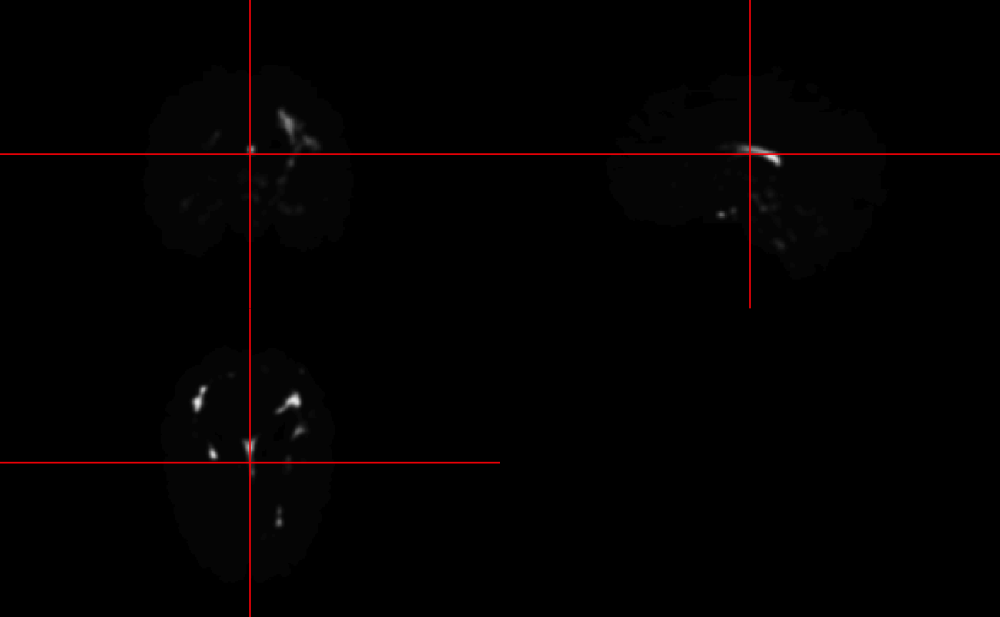
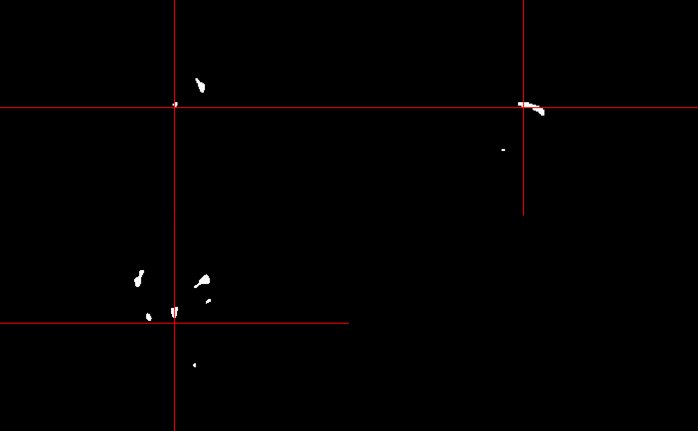
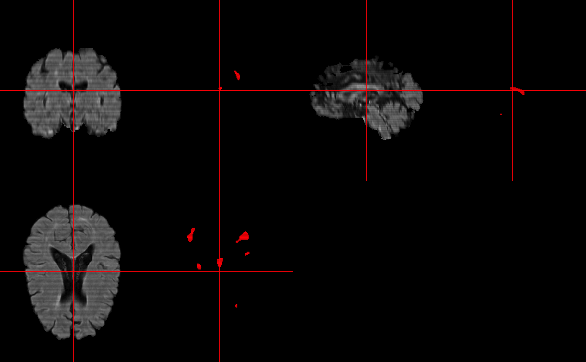
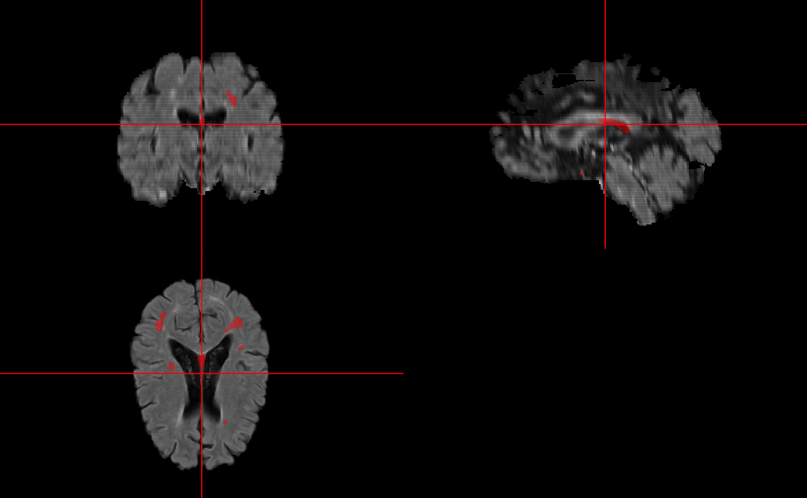

Overview
The mimosa package trains and makes predictions from the MIMoSA method. Access to the full papers can be found here and here. Additionally, it allows for implementation of some common segmentation metrics such as true positive rate, false positive rate, false negative rate, false positive count, and sensitivity based on lesion count.
Follow this vignette using the pkgdown built reference here.
Installation
To install the package from neuroconductor, type:
To get the latest development version from GitHub:
When going through this tutorial be sure your package is up to date. You will also need to install and load the following packages:
Tutorial Data
We will be using data from the 2015 Longitudinal Multiple Sclerosis Lesion Segmentation Challenge.
The MIMoSA algorithm is most powerful when FLAIR, T1, T2, and PD imaging modalities are provided but the algorithm only needs FLAIR and T1 in order to run. While there is no statistically significant loss is power when reducing the types of imaging modalities there may be changes in qualitative results.
Getting and organizing the data for use
After going to 2015 Longitudinal Multiple Sclerosis Lesion Segmentation Challenge you will need to create an account in order to download the data. After creating an account, you will receive an email (mine took a little over a day to get) with your login allowing you to set up a password. At this point you can go here to download the data.
The data consists of a set of training subjects in the training folder for which we have 2 sets of gold standard manual segmentations and 14 test subjects for which there are no gold standard manual segmentations provided. Each subject may have data for multiple time points. After downloading these data, I put the training and testdata_website data into a folder ISBI_Challenge_2015.
For these analysis, we will use the ISBI_Challenge_2015/training/training01/preprocessed data to train the model using the gold standard manually segmented images in ISBI_Challenge_2015/training/masks/training01_0#_mask2.nii. We will then apply the trained model on ISBI_Challenge_2015/testdata_website/test01/preprocessed/ images to generate probability maps and MIMoSA predicted lesion masks. We will also use ISBI_Challenge_2015/training/training02/preprocessed/ data from the first time point to evaluate performance. If you have your own data you can adapt code provided here and apply the methods to your own data. For this reason, all code provided is intended to provide a direct application of methods therefore speed and efficiency were sacrificed in the examples provided.
Creating a filename matrix
Before loading the data into R let’s first organize the image file paths into a matrix.
# Note these paths will be to where you
# have stored the data or to your own data
train_dir = file.path(train_data_dir, "training01")
T1_files = list.files(path =
file.path(train_dir,
"preprocessed"),
pattern = "mprage_pp[.]nii",
full.names = TRUE)
T2_files = list.files(path =
file.path(train_dir,
"preprocessed"),
pattern = "t2_pp[.]nii",
full.names = TRUE)
FLAIR_files = list.files(path =
file.path(train_dir,
"preprocessed"),
pattern = "flair_pp[.]nii",
full.names = TRUE)
PD_files = list.files(path =
file.path(train_dir,
"preprocessed"),
pattern = "pd_pp[.]nii",
full.names = TRUE)
GS_files = list.files(path =
file.path(train_dir,
"masks"),
pattern = "mask2[.]nii",
full.names = TRUE)
filepaths = data.frame(T1 = T1_files, T2 = T2_files,
FLAIR = FLAIR_files, PD = PD_files, GS = GS_files,
stringsAsFactors = FALSE)
have_data = nrow(filepaths) > 0
if (have_data) {
ss = strsplit(nii.stub(filepaths$T1), split = "_")
filepaths$visit_id = sapply(ss, function(x) x[2])
filepaths
}
#> T1
#> 1 /Users/alval/Documents/ISBI_Challenge_2015//training/training01/preprocessed/training01_01_mprage_pp.nii
#> 2 /Users/alval/Documents/ISBI_Challenge_2015//training/training01/preprocessed/training01_02_mprage_pp.nii
#> 3 /Users/alval/Documents/ISBI_Challenge_2015//training/training01/preprocessed/training01_03_mprage_pp.nii
#> 4 /Users/alval/Documents/ISBI_Challenge_2015//training/training01/preprocessed/training01_04_mprage_pp.nii
#> T2
#> 1 /Users/alval/Documents/ISBI_Challenge_2015//training/training01/preprocessed/training01_01_t2_pp.nii
#> 2 /Users/alval/Documents/ISBI_Challenge_2015//training/training01/preprocessed/training01_02_t2_pp.nii
#> 3 /Users/alval/Documents/ISBI_Challenge_2015//training/training01/preprocessed/training01_03_t2_pp.nii
#> 4 /Users/alval/Documents/ISBI_Challenge_2015//training/training01/preprocessed/training01_04_t2_pp.nii
#> FLAIR
#> 1 /Users/alval/Documents/ISBI_Challenge_2015//training/training01/preprocessed/training01_01_flair_pp.nii
#> 2 /Users/alval/Documents/ISBI_Challenge_2015//training/training01/preprocessed/training01_02_flair_pp.nii
#> 3 /Users/alval/Documents/ISBI_Challenge_2015//training/training01/preprocessed/training01_03_flair_pp.nii
#> 4 /Users/alval/Documents/ISBI_Challenge_2015//training/training01/preprocessed/training01_04_flair_pp.nii
#> PD
#> 1 /Users/alval/Documents/ISBI_Challenge_2015//training/training01/preprocessed/training01_01_pd_pp.nii
#> 2 /Users/alval/Documents/ISBI_Challenge_2015//training/training01/preprocessed/training01_02_pd_pp.nii
#> 3 /Users/alval/Documents/ISBI_Challenge_2015//training/training01/preprocessed/training01_03_pd_pp.nii
#> 4 /Users/alval/Documents/ISBI_Challenge_2015//training/training01/preprocessed/training01_04_pd_pp.nii
#> GS
#> 1 /Users/alval/Documents/ISBI_Challenge_2015//training/training01/masks/training01_01_mask2.nii
#> 2 /Users/alval/Documents/ISBI_Challenge_2015//training/training01/masks/training01_02_mask2.nii
#> 3 /Users/alval/Documents/ISBI_Challenge_2015//training/training01/masks/training01_03_mask2.nii
#> 4 /Users/alval/Documents/ISBI_Challenge_2015//training/training01/masks/training01_04_mask2.nii
#> visit_id
#> 1 Challenge
#> 2 Challenge
#> 3 Challenge
#> 4 ChallengePreprocessing
The mimosa package does not provide a preprocessing pipeline function. For the preprocessing pipeline used in the original methods please see our paper. Before implementing the method, data should be inhomogeneity corrected, registered, skull stripped, and normalized to obtain accurate predicted lesion segmentations. The training functions in this package allow for z-score normalization, WhiteStripe normalization, or no normalization method for data that have been previously normalized.
Some preprocessing tips:
In the implementation of this method, we notice that the specific preprocessing pipeline does not seem to make a difference so long as each preprocessing step does not fail. In cases with large lesion load, z-score normalization often fails and we suggest using WhiteStripe. In future versions of this package we plan to allow for WhiteStripe normalization.
For this example, data are preprocessed for us. That is, they have been inhomogeneity corrected, registered, and skull stripped. They have not been normalized yet so we will apply z-score normalization through the mimosa package function arguments.
Creating Predictors
Once data are preprocessed we can create a data.frame of predictors using the mimosa_data function which creates the training vectors from a single MRI study that has FLAIR, T1, T2, and PD volumes. The user only needs FLAIR and T1 sequences but performance may suffer qualitatively. When training the model binary lesion masks are also required. The function returns a tissue mask, the candidate voxels mask for lesion segmentation, smoothed volumes, and coupling maps. The user may supply already normalized data if they wish to use an alternative normalization method.
# The R package neurobase is needed for the readnii function
T1_training01_01 = readnii(filepaths$T1[1])
T2_training01_01 = readnii(filepaths$T2[1])
FLAIR_training01_01 = readnii(filepaths$FLAIR[1])
PD_training01_01 = readnii(filepaths$PD[1])
gold_standard = readnii(filepaths$GS[1])Before making the predictor data let’s just visualize the loaded data.
sequence = list(FLAIR = FLAIR_training01_01,
T1 = T1_training01_01,
T2 = T2_training01_01,
PD = PD_training01_01)
multi_overlay(sequence,
z = floor(oro.nifti::nsli(sequence[[1]])/2),
text = names(sequence),
text.y = rep(1.4, length(sequence)),
text.cex = rep(2.5, length(sequence))
)
Let’s first create a brain mask by taking the union of positive voxels in the T1, T2, PD, and FLAIR. We use the union in order to include all voxels across all images with brain matter. The difference in these is typically only near the skull and will not be important after the selection of candidate voxels. We can then create the training data.frame for the sequence loaded in memory. The preprocessing carried out previously did not normalize the data therefore we will set normalize = 'Z'. We are supplying the brain mask rather than a tissue mask so we set tissue = FALSE. If you supply the tissue mask as the brain_mask you can set tissue = TRUE.
create_brain_mask = function(...) {
x = list(...)
x = check_nifti(x)
x = lapply(x, function(img) {
img > 0
})
mask = Reduce("|", x)
mask = datatyper(mask)
mask
}# Create a brain mask
brain_mask = create_brain_mask(
T1_training01_01,
T2_training01_01,
FLAIR_training01_01,
PD_training01_01
)
# The mimosa R package is needed to run mimosa_data
mimosa_data = mimosa_data(
brain_mask = brain_mask,
FLAIR = FLAIR_training01_01,
T1 = T1_training01_01,
T2 = T2_training01_01,
PD = PD_training01_01,
tissue = FALSE,
gold_standard = gold_standard,
normalize = 'Z',
cand_mask = NULL,
slices = NULL,
orientation = c("axial", "coronal", "sagittal"),
cores = 1,
verbose = TRUE)
#> # Checking File inputs
#> # Getting Tissue Mask
#> Warning in get.fsl(): Setting fsl.path to /usr/local/fsl
#> Warning in get.fsloutput(): Can't find FSLOUTPUTTYPE, setting to NIFTI_GZ
#> FSLDIR='/usr/local/fsl'; PATH=${FSLDIR}/bin:${PATH};export PATH FSLDIR; sh "${FSLDIR}/etc/fslconf/fsl.sh"; FSLOUTPUTTYPE=NIFTI_GZ; export FSLOUTPUTTYPE; ${FSLDIR}/bin/fslmaths "/private/var/folders/sq/x3htb34928bfn79jk3qksqg56zmf39/T/RtmpnZ0DPx/file96394a00e7c6.nii.gz" -kernel box 5x5x5 -ero "/var/folders/sq/x3htb34928bfn79jk3qksqg56zmf39/T//RtmpnZ0DPx/file96393da3c1af"
#> # Normalizing Images using Z-score
#> # Voxel Selection Procedure
#> # Smoothing Images: Sigma = 10
#> FSLDIR='/usr/local/fsl'; PATH=${FSLDIR}/bin:${PATH};export PATH FSLDIR; sh "${FSLDIR}/etc/fslconf/fsl.sh"; FSLOUTPUTTYPE=NIFTI_GZ; export FSLOUTPUTTYPE; ${FSLDIR}/bin/fslmaths "/private/var/folders/sq/x3htb34928bfn79jk3qksqg56zmf39/T/RtmpnZ0DPx/file96391709e1f.nii.gz" -s 10 "/var/folders/sq/x3htb34928bfn79jk3qksqg56zmf39/T//RtmpnZ0DPx/file963989d05f6";
#> FSLDIR='/usr/local/fsl'; PATH=${FSLDIR}/bin:${PATH};export PATH FSLDIR; sh "${FSLDIR}/etc/fslconf/fsl.sh"; FSLOUTPUTTYPE=NIFTI_GZ; export FSLOUTPUTTYPE; ${FSLDIR}/bin/fslmaths "/private/var/folders/sq/x3htb34928bfn79jk3qksqg56zmf39/T/RtmpnZ0DPx/file96397cf25de4.nii.gz" -mas "/private/var/folders/sq/x3htb34928bfn79jk3qksqg56zmf39/T/RtmpnZ0DPx/file9639bf263d2.nii.gz" -s 10 "/var/folders/sq/x3htb34928bfn79jk3qksqg56zmf39/T//RtmpnZ0DPx/file96395677761e"; FSLDIR='/usr/local/fsl'; PATH=${FSLDIR}/bin:${PATH};export PATH FSLDIR; sh "${FSLDIR}/etc/fslconf/fsl.sh"; FSLOUTPUTTYPE=NIFTI_GZ; export FSLOUTPUTTYPE; ${FSLDIR}/bin/fslmaths "/var/folders/sq/x3htb34928bfn79jk3qksqg56zmf39/T//RtmpnZ0DPx/file96395677761e" -div "/private/var/folders/sq/x3htb34928bfn79jk3qksqg56zmf39/T/RtmpnZ0DPx/file963989d05f6.nii.gz" -mas "/private/var/folders/sq/x3htb34928bfn79jk3qksqg56zmf39/T/RtmpnZ0DPx/file9639bf263d2.nii.gz" "/var/folders/sq/x3htb34928bfn79jk3qksqg56zmf39/T//RtmpnZ0DPx/file96395677761e";
#> FSLDIR='/usr/local/fsl'; PATH=${FSLDIR}/bin:${PATH};export PATH FSLDIR; sh "${FSLDIR}/etc/fslconf/fsl.sh"; FSLOUTPUTTYPE=NIFTI_GZ; export FSLOUTPUTTYPE; ${FSLDIR}/bin/fslmaths "/private/var/folders/sq/x3htb34928bfn79jk3qksqg56zmf39/T/RtmpnZ0DPx/file96393cebd7eb.nii.gz" -mas "/private/var/folders/sq/x3htb34928bfn79jk3qksqg56zmf39/T/RtmpnZ0DPx/file96391faca48c.nii.gz" -s 10 "/var/folders/sq/x3htb34928bfn79jk3qksqg56zmf39/T//RtmpnZ0DPx/file96397f66f392"; FSLDIR='/usr/local/fsl'; PATH=${FSLDIR}/bin:${PATH};export PATH FSLDIR; sh "${FSLDIR}/etc/fslconf/fsl.sh"; FSLOUTPUTTYPE=NIFTI_GZ; export FSLOUTPUTTYPE; ${FSLDIR}/bin/fslmaths "/var/folders/sq/x3htb34928bfn79jk3qksqg56zmf39/T//RtmpnZ0DPx/file96397f66f392" -div "/private/var/folders/sq/x3htb34928bfn79jk3qksqg56zmf39/T/RtmpnZ0DPx/file963989d05f6.nii.gz" -mas "/private/var/folders/sq/x3htb34928bfn79jk3qksqg56zmf39/T/RtmpnZ0DPx/file96391faca48c.nii.gz" "/var/folders/sq/x3htb34928bfn79jk3qksqg56zmf39/T//RtmpnZ0DPx/file96397f66f392";
#> FSLDIR='/usr/local/fsl'; PATH=${FSLDIR}/bin:${PATH};export PATH FSLDIR; sh "${FSLDIR}/etc/fslconf/fsl.sh"; FSLOUTPUTTYPE=NIFTI_GZ; export FSLOUTPUTTYPE; ${FSLDIR}/bin/fslmaths "/private/var/folders/sq/x3htb34928bfn79jk3qksqg56zmf39/T/RtmpnZ0DPx/file963940013796.nii.gz" -mas "/private/var/folders/sq/x3htb34928bfn79jk3qksqg56zmf39/T/RtmpnZ0DPx/file9639fe879ae.nii.gz" -s 10 "/var/folders/sq/x3htb34928bfn79jk3qksqg56zmf39/T//RtmpnZ0DPx/file9639678c96aa"; FSLDIR='/usr/local/fsl'; PATH=${FSLDIR}/bin:${PATH};export PATH FSLDIR; sh "${FSLDIR}/etc/fslconf/fsl.sh"; FSLOUTPUTTYPE=NIFTI_GZ; export FSLOUTPUTTYPE; ${FSLDIR}/bin/fslmaths "/var/folders/sq/x3htb34928bfn79jk3qksqg56zmf39/T//RtmpnZ0DPx/file9639678c96aa" -div "/private/var/folders/sq/x3htb34928bfn79jk3qksqg56zmf39/T/RtmpnZ0DPx/file963989d05f6.nii.gz" -mas "/private/var/folders/sq/x3htb34928bfn79jk3qksqg56zmf39/T/RtmpnZ0DPx/file9639fe879ae.nii.gz" "/var/folders/sq/x3htb34928bfn79jk3qksqg56zmf39/T//RtmpnZ0DPx/file9639678c96aa";
#> FSLDIR='/usr/local/fsl'; PATH=${FSLDIR}/bin:${PATH};export PATH FSLDIR; sh "${FSLDIR}/etc/fslconf/fsl.sh"; FSLOUTPUTTYPE=NIFTI_GZ; export FSLOUTPUTTYPE; ${FSLDIR}/bin/fslmaths "/private/var/folders/sq/x3htb34928bfn79jk3qksqg56zmf39/T/RtmpnZ0DPx/file96393ef7a802.nii.gz" -mas "/private/var/folders/sq/x3htb34928bfn79jk3qksqg56zmf39/T/RtmpnZ0DPx/file963975373b99.nii.gz" -s 10 "/var/folders/sq/x3htb34928bfn79jk3qksqg56zmf39/T//RtmpnZ0DPx/file96397d29f5ed"; FSLDIR='/usr/local/fsl'; PATH=${FSLDIR}/bin:${PATH};export PATH FSLDIR; sh "${FSLDIR}/etc/fslconf/fsl.sh"; FSLOUTPUTTYPE=NIFTI_GZ; export FSLOUTPUTTYPE; ${FSLDIR}/bin/fslmaths "/var/folders/sq/x3htb34928bfn79jk3qksqg56zmf39/T//RtmpnZ0DPx/file96397d29f5ed" -div "/private/var/folders/sq/x3htb34928bfn79jk3qksqg56zmf39/T/RtmpnZ0DPx/file963989d05f6.nii.gz" -mas "/private/var/folders/sq/x3htb34928bfn79jk3qksqg56zmf39/T/RtmpnZ0DPx/file963975373b99.nii.gz" "/var/folders/sq/x3htb34928bfn79jk3qksqg56zmf39/T//RtmpnZ0DPx/file96397d29f5ed";
#> # Smoothing Images: Sigma = 20
#> FSLDIR='/usr/local/fsl'; PATH=${FSLDIR}/bin:${PATH};export PATH FSLDIR; sh "${FSLDIR}/etc/fslconf/fsl.sh"; FSLOUTPUTTYPE=NIFTI_GZ; export FSLOUTPUTTYPE; ${FSLDIR}/bin/fslmaths "/private/var/folders/sq/x3htb34928bfn79jk3qksqg56zmf39/T/RtmpnZ0DPx/file96394dd0dacd.nii.gz" -s 20 "/var/folders/sq/x3htb34928bfn79jk3qksqg56zmf39/T//RtmpnZ0DPx/file96394accf0a4";
#> FSLDIR='/usr/local/fsl'; PATH=${FSLDIR}/bin:${PATH};export PATH FSLDIR; sh "${FSLDIR}/etc/fslconf/fsl.sh"; FSLOUTPUTTYPE=NIFTI_GZ; export FSLOUTPUTTYPE; ${FSLDIR}/bin/fslmaths "/private/var/folders/sq/x3htb34928bfn79jk3qksqg56zmf39/T/RtmpnZ0DPx/file963954cac559.nii.gz" -mas "/private/var/folders/sq/x3htb34928bfn79jk3qksqg56zmf39/T/RtmpnZ0DPx/file96394c62818c.nii.gz" -s 20 "/var/folders/sq/x3htb34928bfn79jk3qksqg56zmf39/T//RtmpnZ0DPx/file963957273581"; FSLDIR='/usr/local/fsl'; PATH=${FSLDIR}/bin:${PATH};export PATH FSLDIR; sh "${FSLDIR}/etc/fslconf/fsl.sh"; FSLOUTPUTTYPE=NIFTI_GZ; export FSLOUTPUTTYPE; ${FSLDIR}/bin/fslmaths "/var/folders/sq/x3htb34928bfn79jk3qksqg56zmf39/T//RtmpnZ0DPx/file963957273581" -div "/private/var/folders/sq/x3htb34928bfn79jk3qksqg56zmf39/T/RtmpnZ0DPx/file96394accf0a4.nii.gz" -mas "/private/var/folders/sq/x3htb34928bfn79jk3qksqg56zmf39/T/RtmpnZ0DPx/file96394c62818c.nii.gz" "/var/folders/sq/x3htb34928bfn79jk3qksqg56zmf39/T//RtmpnZ0DPx/file963957273581";
#> FSLDIR='/usr/local/fsl'; PATH=${FSLDIR}/bin:${PATH};export PATH FSLDIR; sh "${FSLDIR}/etc/fslconf/fsl.sh"; FSLOUTPUTTYPE=NIFTI_GZ; export FSLOUTPUTTYPE; ${FSLDIR}/bin/fslmaths "/private/var/folders/sq/x3htb34928bfn79jk3qksqg56zmf39/T/RtmpnZ0DPx/file96394f29d4da.nii.gz" -mas "/private/var/folders/sq/x3htb34928bfn79jk3qksqg56zmf39/T/RtmpnZ0DPx/file963943555cd0.nii.gz" -s 20 "/var/folders/sq/x3htb34928bfn79jk3qksqg56zmf39/T//RtmpnZ0DPx/file963919407e39"; FSLDIR='/usr/local/fsl'; PATH=${FSLDIR}/bin:${PATH};export PATH FSLDIR; sh "${FSLDIR}/etc/fslconf/fsl.sh"; FSLOUTPUTTYPE=NIFTI_GZ; export FSLOUTPUTTYPE; ${FSLDIR}/bin/fslmaths "/var/folders/sq/x3htb34928bfn79jk3qksqg56zmf39/T//RtmpnZ0DPx/file963919407e39" -div "/private/var/folders/sq/x3htb34928bfn79jk3qksqg56zmf39/T/RtmpnZ0DPx/file96394accf0a4.nii.gz" -mas "/private/var/folders/sq/x3htb34928bfn79jk3qksqg56zmf39/T/RtmpnZ0DPx/file963943555cd0.nii.gz" "/var/folders/sq/x3htb34928bfn79jk3qksqg56zmf39/T//RtmpnZ0DPx/file963919407e39";
#> FSLDIR='/usr/local/fsl'; PATH=${FSLDIR}/bin:${PATH};export PATH FSLDIR; sh "${FSLDIR}/etc/fslconf/fsl.sh"; FSLOUTPUTTYPE=NIFTI_GZ; export FSLOUTPUTTYPE; ${FSLDIR}/bin/fslmaths "/private/var/folders/sq/x3htb34928bfn79jk3qksqg56zmf39/T/RtmpnZ0DPx/file9639591edd22.nii.gz" -mas "/private/var/folders/sq/x3htb34928bfn79jk3qksqg56zmf39/T/RtmpnZ0DPx/file9639794810e3.nii.gz" -s 20 "/var/folders/sq/x3htb34928bfn79jk3qksqg56zmf39/T//RtmpnZ0DPx/file96396a4ce549"; FSLDIR='/usr/local/fsl'; PATH=${FSLDIR}/bin:${PATH};export PATH FSLDIR; sh "${FSLDIR}/etc/fslconf/fsl.sh"; FSLOUTPUTTYPE=NIFTI_GZ; export FSLOUTPUTTYPE; ${FSLDIR}/bin/fslmaths "/var/folders/sq/x3htb34928bfn79jk3qksqg56zmf39/T//RtmpnZ0DPx/file96396a4ce549" -div "/private/var/folders/sq/x3htb34928bfn79jk3qksqg56zmf39/T/RtmpnZ0DPx/file96394accf0a4.nii.gz" -mas "/private/var/folders/sq/x3htb34928bfn79jk3qksqg56zmf39/T/RtmpnZ0DPx/file9639794810e3.nii.gz" "/var/folders/sq/x3htb34928bfn79jk3qksqg56zmf39/T//RtmpnZ0DPx/file96396a4ce549";
#> FSLDIR='/usr/local/fsl'; PATH=${FSLDIR}/bin:${PATH};export PATH FSLDIR; sh "${FSLDIR}/etc/fslconf/fsl.sh"; FSLOUTPUTTYPE=NIFTI_GZ; export FSLOUTPUTTYPE; ${FSLDIR}/bin/fslmaths "/private/var/folders/sq/x3htb34928bfn79jk3qksqg56zmf39/T/RtmpnZ0DPx/file96395e615224.nii.gz" -mas "/private/var/folders/sq/x3htb34928bfn79jk3qksqg56zmf39/T/RtmpnZ0DPx/file96394757e9e4.nii.gz" -s 20 "/var/folders/sq/x3htb34928bfn79jk3qksqg56zmf39/T//RtmpnZ0DPx/file96395cbc9c53"; FSLDIR='/usr/local/fsl'; PATH=${FSLDIR}/bin:${PATH};export PATH FSLDIR; sh "${FSLDIR}/etc/fslconf/fsl.sh"; FSLOUTPUTTYPE=NIFTI_GZ; export FSLOUTPUTTYPE; ${FSLDIR}/bin/fslmaths "/var/folders/sq/x3htb34928bfn79jk3qksqg56zmf39/T//RtmpnZ0DPx/file96395cbc9c53" -div "/private/var/folders/sq/x3htb34928bfn79jk3qksqg56zmf39/T/RtmpnZ0DPx/file96394accf0a4.nii.gz" -mas "/private/var/folders/sq/x3htb34928bfn79jk3qksqg56zmf39/T/RtmpnZ0DPx/file96394757e9e4.nii.gz" "/var/folders/sq/x3htb34928bfn79jk3qksqg56zmf39/T//RtmpnZ0DPx/file96395cbc9c53";
#> # Running Coupling
#> # Extracting neighborhood data
#> # Computing weighted regressions
#> # Ran Coupling for FLAIR and T1 Combinations Successfully
#> # Extracting neighborhood data
#> # Computing weighted regressions
#> # Ran Coupling for FLAIR and T2 Combinations Successfully
#> # Extracting neighborhood data
#> # Computing weighted regressions
#> # Ran Coupling for FLAIR and PD Combinations Successfully
#> # Extracting neighborhood data
#> # Computing weighted regressions
#> # Ran Coupling for T1 and T2 Combinations Successfully
#> # Extracting neighborhood data
#> # Computing weighted regressions
#> # Ran Coupling for T1 and PD Combinations Successfully
#> # Extracting neighborhood data
#> # Computing weighted regressions
#> # Ran Coupling for T2 and PD Combinations SuccessfullyA note on the returned objects:
is.list(mimosa_data)
#> [1] TRUE
names(mimosa_data)
#> [1] "mimosa_dataframe" "top_voxels" "smoothed"
#> [4] "coupling_intercepts" "coupling_slopes" "normalized"
#> [7] "tissue_mask"
names(mimosa_data$smoothed)
#> [1] "smooth_10" "smooth_20"
names(mimosa_data$smoothed$smooth_10)
#> [1] "FLAIR_10" "T1_10" "T2_10" "PD_10"
names(mimosa_data$smoothed$smooth_20)
#> [1] "FLAIR_20" "T1_20" "T2_20" "PD_20"
names(mimosa_data$coupling_intercepts)
#> [1] "FLAIRonT1_intercepts" "FLAIRonT2_intercepts" "FLAIRonPD_intercepts"
#> [4] "T1onT2_intercepts" "T1onPD_intercepts" "T2onPD_intercepts"
#> [7] "T1onFLAIR_intercepts" "T2onFLAIR_intercepts" "PDonFLAIR_intercepts"
#> [10] "T2onT1_intercepts" "PDonT1_intercepts" "PDonT2_intercepts"
names(mimosa_data$coupling_slopes)
#> [1] "FLAIRonT1_slopes" "FLAIRonT2_slopes" "FLAIRonPD_slopes" "T1onT2_slopes"
#> [5] "T1onPD_slopes" "T2onPD_slopes" "T1onFLAIR_slopes" "T2onFLAIR_slopes"
#> [9] "PDonFLAIR_slopes" "T2onT1_slopes" "PDonT1_slopes" "PDonT2_slopes"
names(mimosa_data$normalized)
#> [1] "FLAIR" "T1" "T2" "PD"The following items are always returned from the mimosa_data function:
-
mimosa_dataframeis the predictor dataframe -
top_voxelsis a mask for candidate lesion voxels. This is a binary mask of classnifti. -
smoothedis an embedded list of smoothed volumes. Here there is another set of listssmooth_10andsmooth_20. Each object in these lists is anifti. -
coupling_interceptsis an embedded list of the coupling intercept values inside of the candidate mask. Each object in this list is anifti. -
coupling_slopesis an embedded list of the coupling slopes inside of the candidate_mask. Each object in this list is anifti.
The following may be returned depending on input arguments:
-
normalizedis an embedded list of normalized volumes. Returned whennormalize != 'no'. Each object in this list is anifti. -
tissue_maskis a brain mask that excludes CSF. Returned whentissue = FALSE. Each object in this list is anifti.
Next, I show the first 5 rows of the $mimosa_dataframe and a few of the nifti objects displayed using ortho2. You can always save these objects using writenii and use a viewer of your choosing.
head(mimosa_data$mimosa_dataframe)
#> axial coronal sagittal FLAIR T1 T2 PD FLAIR_10
#> 1 89 131 14 2.287876 0.3325792 2.978799 1.826240 1.345828
#> 2 90 131 14 1.874878 -0.7364550 2.382731 1.104095 1.338061
#> 3 91 131 14 1.010692 -1.1051463 2.280783 1.132581 1.329444
#> 4 87 132 14 2.466950 1.0201121 2.101769 2.289588 1.365884
#> 5 88 132 14 2.945115 0.5568896 1.451685 1.445819 1.359961
#> 6 89 132 14 3.900877 1.0178453 1.233909 1.022983 1.352887
#> T1_10 T2_10 PD_10 FLAIR_20 T1_20 T2_20 PD_20
#> 1 0.6592031 -0.1901898 -0.2468355 0.6474552 0.2910269 0.000566980 0.02472147
#> 2 0.6605375 -0.1933210 -0.2540186 0.6505741 0.2913818 -0.001028678 0.02340431
#> 3 0.6580319 -0.1937983 -0.2581899 0.6537054 0.2910491 -0.002226533 0.02254762
#> 4 0.6224467 -0.1800741 -0.2070445 0.6423467 0.2802900 0.002779433 0.03069922
#> 5 0.6318335 -0.1887418 -0.2210913 0.6453856 0.2820102 0.000373256 0.02850217
#> 6 0.6373675 -0.1947359 -0.2321712 0.6484272 0.2830644 -0.001649527 0.02673587
#> FLAIRonT1_intercepts FLAIRonT2_intercepts FLAIRonPD_intercepts
#> 1 1.962962 3.182572 2.832418
#> 2 2.129989 3.457407 3.038684
#> 3 2.190782 3.339250 2.986238
#> 4 1.645679 2.632879 2.472197
#> 5 2.119615 2.695251 2.590620
#> 6 2.312233 3.071161 2.891955
#> T1onT2_intercepts T1onPD_intercepts T2onPD_intercepts T1onFLAIR_intercepts
#> 1 0.8356279 0.6738458 0.5495552 -0.21389931
#> 2 0.8185366 0.6086209 0.4948954 -0.65730947
#> 3 0.8637581 0.6509412 0.4357735 -0.75564170
#> 4 0.8605421 0.8641143 0.3961630 0.47906339
#> 5 0.7154198 0.7173619 0.4619737 0.38716656
#> 6 0.6592546 0.6136722 0.5056736 0.05169167
#> T2onFLAIR_intercepts PDonFLAIR_intercepts T2onT1_intercepts PDonT1_intercepts
#> 1 2.506481 1.3643119 1.7347982 0.9181240
#> 2 2.740862 1.4219817 1.6043165 0.7959203
#> 3 2.636451 1.3223054 1.4421480 0.6886060
#> 4 1.575604 1.0632737 0.6202007 0.1513854
#> 5 1.235475 0.5286532 0.6515290 0.1118763
#> 6 1.536188 0.4947731 0.9095176 0.2622830
#> PDonT2_intercepts FLAIRonT1_slopes FLAIRonT2_slopes FLAIRonPD_slopes
#> 1 -0.3366627 1.0829043 -0.4431264 -0.33463013
#> 2 -0.2831670 1.2643533 -0.6253113 -0.58484501
#> 3 -0.2536777 1.1341290 -0.6513278 -0.70062065
#> 4 -0.3531661 0.8204995 -0.3270003 -0.21245922
#> 5 -0.4014934 0.6134410 -0.1715640 -0.07122634
#> 6 -0.4082249 0.9144778 -0.2883294 -0.11516678
#> T1onT2_slopes T1onPD_slopes T2onPD_slopes T1onFLAIR_slopes T2onFLAIR_slopes
#> 1 -0.19138226 -0.12987342 1.0891973 0.3064753 -0.4523853
#> 2 -0.30606112 -0.27791813 1.2283658 0.4090100 -0.5626899
#> 3 -0.42457679 -0.49783733 1.3282135 0.4447958 -0.6100687
#> 4 0.03823203 0.05856932 0.8608178 0.1731514 -0.3329233
#> 5 0.02270051 0.04818648 0.8967971 0.1343031 -0.1939224
#> 6 -0.07195913 -0.02444736 0.9796261 0.1941815 -0.2910111
#> PDonFLAIR_slopes T2onT1_slopes PDonT1_slopes PDonT2_slopes gold_standard
#> 1 -0.24849276 -0.6903626 -0.3407718 0.7922721 0
#> 2 -0.30698898 -0.8513646 -0.4509552 0.7165341 0
#> 3 -0.33501390 -1.0139982 -0.6069727 0.6780608 0
#> 4 -0.25761911 0.1844488 0.3365310 1.0252215 0
#> 5 -0.08626805 0.1171991 0.2665762 0.9609519 0
#> 6 -0.10285578 -0.3420359 -0.1028250 0.8668447 0
ortho2(mimosa_data$top_voxels)


The mimosa_data$mimosa_dataframe in conjunction with the candidate voxel mask or mimosa_data$top_voxels can be used to generate probability maps which can in turn be thresholded to generate predicted lesion masks.
The mimosa_data$mimosa_dataframe is also used to train the model which we will cover in detail in the next section.
Train the MIMoSA Model
There are two (2) approaches to training the mimosa model. In the first approach we will use the built in mimosa_training function which will create a large predictor matrix for all subjects supplied, train the model, and calculate the optimal threshold. In the second, you can utilize the mimosa_data and mimosa_fit functions to break up this process and train the model yourself. Both approaches yield the same results and therefore choice of approaches comes down to user preference and need. We will first show the approach using mimosa_training and then show an example broken down using the mimosa_data and mimosa_fit approach.
mimosa_training
Unlike mimosa_data here brain_mask, FLAIR, T1, T2, PD, and gold_standard are vectors of file paths to their respective object. We will use a simple for loop to generate and save the brain masks. You may need to change the substr(filepaths, 74, 78) if your file path is different. Again, we note that this is not the most efficient computational approach.
Since we need to supply vectors of file paths and not local objects when applying this function. We will need to create brain masks for each subject and add them to the matrix filepaths. After that, we will use the same arguments as in the mimosa_data example.
filepaths$brainmask = NA
# The neurobase R package is required to read and write images
for (i in seq(nrow(filepaths))) {
# Load files
visit_id = filepaths$visit_id[i]
fname = file.path(train_dir,
"preprocessed",
paste0("brainmask_",
visit_id, ".nii.gz"))
if (!file.exists(fname)) {
T1_training = readnii(filepaths$T1[i])
T2_training = readnii(filepaths$T2[i])
FLAIR_training = readnii(filepaths$FLAIR[i])
PD_training = readnii(filepaths$PD[i])
brain_mask = create_brain_mask(
T1_training,
T2_training,
FLAIR_training,
PD_training
)
# Save brain mask to local working directory
writenii(brain_mask,
filename = fname)
}
filepaths$brainmask[i] = fname
}Now we have all file paths for the input arguments required for mimosa_training. Let’s apply mimosa_training to train the model. We will set optimal_threshold = seq(0.25, 0.35, 0.01) in order for the optimal thresholding algorithm to calculate the threshold that optimizes DSC compared to gold standard manually segmented images within these supplied values. We will keep outdir = NULL but if you wanted to save all returned objects for all subjects you should specify a vector of file paths with unique IDs.
mimosa_training = mimosa_training(
brain_mask = filepaths$brainmask,
FLAIR = filepaths$FLAIR,
T1 = filepaths$T1,
T2 = filepaths$T2,
PD = filepaths$PD,
tissue = FALSE,
gold_standard = filepaths$GS,
normalize = 'Z',
slices = NULL,
orientation = c("axial", "coronal", "sagittal"),
cores = 1,
verbose = TRUE,
outdir = NULL,
optimal_threshold = seq(0.25, 0.35, 0.01))
#> # Obtaining training subject data
#> # Checking File inputs
#> # Getting Tissue Mask
#> FSLDIR='/usr/local/fsl'; PATH=${FSLDIR}/bin:${PATH};export PATH FSLDIR; sh "${FSLDIR}/etc/fslconf/fsl.sh"; FSLOUTPUTTYPE=NIFTI_GZ; export FSLOUTPUTTYPE; ${FSLDIR}/bin/fslmaths "/private/var/folders/sq/x3htb34928bfn79jk3qksqg56zmf39/T/RtmpnZ0DPx/file963944757ac1.nii.gz" -kernel box 5x5x5 -ero "/var/folders/sq/x3htb34928bfn79jk3qksqg56zmf39/T//RtmpnZ0DPx/file963915bb6f04"
#> # Normalizing Images using Z-score
#> # Voxel Selection Procedure
#> # Smoothing Images: Sigma = 10
#> FSLDIR='/usr/local/fsl'; PATH=${FSLDIR}/bin:${PATH};export PATH FSLDIR; sh "${FSLDIR}/etc/fslconf/fsl.sh"; FSLOUTPUTTYPE=NIFTI_GZ; export FSLOUTPUTTYPE; ${FSLDIR}/bin/fslmaths "/private/var/folders/sq/x3htb34928bfn79jk3qksqg56zmf39/T/RtmpnZ0DPx/file96397cce3803.nii.gz" -s 10 "/var/folders/sq/x3htb34928bfn79jk3qksqg56zmf39/T//RtmpnZ0DPx/file963946bf8cf8";
#> FSLDIR='/usr/local/fsl'; PATH=${FSLDIR}/bin:${PATH};export PATH FSLDIR; sh "${FSLDIR}/etc/fslconf/fsl.sh"; FSLOUTPUTTYPE=NIFTI_GZ; export FSLOUTPUTTYPE; ${FSLDIR}/bin/fslmaths "/private/var/folders/sq/x3htb34928bfn79jk3qksqg56zmf39/T/RtmpnZ0DPx/file963949c01211.nii.gz" -mas "/private/var/folders/sq/x3htb34928bfn79jk3qksqg56zmf39/T/RtmpnZ0DPx/file963960e23fea.nii.gz" -s 10 "/var/folders/sq/x3htb34928bfn79jk3qksqg56zmf39/T//RtmpnZ0DPx/file963925d24d57"; FSLDIR='/usr/local/fsl'; PATH=${FSLDIR}/bin:${PATH};export PATH FSLDIR; sh "${FSLDIR}/etc/fslconf/fsl.sh"; FSLOUTPUTTYPE=NIFTI_GZ; export FSLOUTPUTTYPE; ${FSLDIR}/bin/fslmaths "/var/folders/sq/x3htb34928bfn79jk3qksqg56zmf39/T//RtmpnZ0DPx/file963925d24d57" -div "/private/var/folders/sq/x3htb34928bfn79jk3qksqg56zmf39/T/RtmpnZ0DPx/file963946bf8cf8.nii.gz" -mas "/private/var/folders/sq/x3htb34928bfn79jk3qksqg56zmf39/T/RtmpnZ0DPx/file963960e23fea.nii.gz" "/var/folders/sq/x3htb34928bfn79jk3qksqg56zmf39/T//RtmpnZ0DPx/file963925d24d57";
#> FSLDIR='/usr/local/fsl'; PATH=${FSLDIR}/bin:${PATH};export PATH FSLDIR; sh "${FSLDIR}/etc/fslconf/fsl.sh"; FSLOUTPUTTYPE=NIFTI_GZ; export FSLOUTPUTTYPE; ${FSLDIR}/bin/fslmaths "/private/var/folders/sq/x3htb34928bfn79jk3qksqg56zmf39/T/RtmpnZ0DPx/file963911d39e27.nii.gz" -mas "/private/var/folders/sq/x3htb34928bfn79jk3qksqg56zmf39/T/RtmpnZ0DPx/file96395c341b95.nii.gz" -s 10 "/var/folders/sq/x3htb34928bfn79jk3qksqg56zmf39/T//RtmpnZ0DPx/file963960ff027d"; FSLDIR='/usr/local/fsl'; PATH=${FSLDIR}/bin:${PATH};export PATH FSLDIR; sh "${FSLDIR}/etc/fslconf/fsl.sh"; FSLOUTPUTTYPE=NIFTI_GZ; export FSLOUTPUTTYPE; ${FSLDIR}/bin/fslmaths "/var/folders/sq/x3htb34928bfn79jk3qksqg56zmf39/T//RtmpnZ0DPx/file963960ff027d" -div "/private/var/folders/sq/x3htb34928bfn79jk3qksqg56zmf39/T/RtmpnZ0DPx/file963946bf8cf8.nii.gz" -mas "/private/var/folders/sq/x3htb34928bfn79jk3qksqg56zmf39/T/RtmpnZ0DPx/file96395c341b95.nii.gz" "/var/folders/sq/x3htb34928bfn79jk3qksqg56zmf39/T//RtmpnZ0DPx/file963960ff027d";
#> FSLDIR='/usr/local/fsl'; PATH=${FSLDIR}/bin:${PATH};export PATH FSLDIR; sh "${FSLDIR}/etc/fslconf/fsl.sh"; FSLOUTPUTTYPE=NIFTI_GZ; export FSLOUTPUTTYPE; ${FSLDIR}/bin/fslmaths "/private/var/folders/sq/x3htb34928bfn79jk3qksqg56zmf39/T/RtmpnZ0DPx/file96395fc8e4b.nii.gz" -mas "/private/var/folders/sq/x3htb34928bfn79jk3qksqg56zmf39/T/RtmpnZ0DPx/file96397e1e0ff.nii.gz" -s 10 "/var/folders/sq/x3htb34928bfn79jk3qksqg56zmf39/T//RtmpnZ0DPx/file96397e7a8963"; FSLDIR='/usr/local/fsl'; PATH=${FSLDIR}/bin:${PATH};export PATH FSLDIR; sh "${FSLDIR}/etc/fslconf/fsl.sh"; FSLOUTPUTTYPE=NIFTI_GZ; export FSLOUTPUTTYPE; ${FSLDIR}/bin/fslmaths "/var/folders/sq/x3htb34928bfn79jk3qksqg56zmf39/T//RtmpnZ0DPx/file96397e7a8963" -div "/private/var/folders/sq/x3htb34928bfn79jk3qksqg56zmf39/T/RtmpnZ0DPx/file963946bf8cf8.nii.gz" -mas "/private/var/folders/sq/x3htb34928bfn79jk3qksqg56zmf39/T/RtmpnZ0DPx/file96397e1e0ff.nii.gz" "/var/folders/sq/x3htb34928bfn79jk3qksqg56zmf39/T//RtmpnZ0DPx/file96397e7a8963";
#> FSLDIR='/usr/local/fsl'; PATH=${FSLDIR}/bin:${PATH};export PATH FSLDIR; sh "${FSLDIR}/etc/fslconf/fsl.sh"; FSLOUTPUTTYPE=NIFTI_GZ; export FSLOUTPUTTYPE; ${FSLDIR}/bin/fslmaths "/private/var/folders/sq/x3htb34928bfn79jk3qksqg56zmf39/T/RtmpnZ0DPx/file96391ed20374.nii.gz" -mas "/private/var/folders/sq/x3htb34928bfn79jk3qksqg56zmf39/T/RtmpnZ0DPx/file96396de0c47a.nii.gz" -s 10 "/var/folders/sq/x3htb34928bfn79jk3qksqg56zmf39/T//RtmpnZ0DPx/file96393f835df1"; FSLDIR='/usr/local/fsl'; PATH=${FSLDIR}/bin:${PATH};export PATH FSLDIR; sh "${FSLDIR}/etc/fslconf/fsl.sh"; FSLOUTPUTTYPE=NIFTI_GZ; export FSLOUTPUTTYPE; ${FSLDIR}/bin/fslmaths "/var/folders/sq/x3htb34928bfn79jk3qksqg56zmf39/T//RtmpnZ0DPx/file96393f835df1" -div "/private/var/folders/sq/x3htb34928bfn79jk3qksqg56zmf39/T/RtmpnZ0DPx/file963946bf8cf8.nii.gz" -mas "/private/var/folders/sq/x3htb34928bfn79jk3qksqg56zmf39/T/RtmpnZ0DPx/file96396de0c47a.nii.gz" "/var/folders/sq/x3htb34928bfn79jk3qksqg56zmf39/T//RtmpnZ0DPx/file96393f835df1";
#> # Smoothing Images: Sigma = 20
#> FSLDIR='/usr/local/fsl'; PATH=${FSLDIR}/bin:${PATH};export PATH FSLDIR; sh "${FSLDIR}/etc/fslconf/fsl.sh"; FSLOUTPUTTYPE=NIFTI_GZ; export FSLOUTPUTTYPE; ${FSLDIR}/bin/fslmaths "/private/var/folders/sq/x3htb34928bfn79jk3qksqg56zmf39/T/RtmpnZ0DPx/file9639498c99ca.nii.gz" -s 20 "/var/folders/sq/x3htb34928bfn79jk3qksqg56zmf39/T//RtmpnZ0DPx/file96392dc4c27f";
#> FSLDIR='/usr/local/fsl'; PATH=${FSLDIR}/bin:${PATH};export PATH FSLDIR; sh "${FSLDIR}/etc/fslconf/fsl.sh"; FSLOUTPUTTYPE=NIFTI_GZ; export FSLOUTPUTTYPE; ${FSLDIR}/bin/fslmaths "/private/var/folders/sq/x3htb34928bfn79jk3qksqg56zmf39/T/RtmpnZ0DPx/file963950bd3752.nii.gz" -mas "/private/var/folders/sq/x3htb34928bfn79jk3qksqg56zmf39/T/RtmpnZ0DPx/file9639367b11e7.nii.gz" -s 20 "/var/folders/sq/x3htb34928bfn79jk3qksqg56zmf39/T//RtmpnZ0DPx/file963949d470a2"; FSLDIR='/usr/local/fsl'; PATH=${FSLDIR}/bin:${PATH};export PATH FSLDIR; sh "${FSLDIR}/etc/fslconf/fsl.sh"; FSLOUTPUTTYPE=NIFTI_GZ; export FSLOUTPUTTYPE; ${FSLDIR}/bin/fslmaths "/var/folders/sq/x3htb34928bfn79jk3qksqg56zmf39/T//RtmpnZ0DPx/file963949d470a2" -div "/private/var/folders/sq/x3htb34928bfn79jk3qksqg56zmf39/T/RtmpnZ0DPx/file96392dc4c27f.nii.gz" -mas "/private/var/folders/sq/x3htb34928bfn79jk3qksqg56zmf39/T/RtmpnZ0DPx/file9639367b11e7.nii.gz" "/var/folders/sq/x3htb34928bfn79jk3qksqg56zmf39/T//RtmpnZ0DPx/file963949d470a2";
#> FSLDIR='/usr/local/fsl'; PATH=${FSLDIR}/bin:${PATH};export PATH FSLDIR; sh "${FSLDIR}/etc/fslconf/fsl.sh"; FSLOUTPUTTYPE=NIFTI_GZ; export FSLOUTPUTTYPE; ${FSLDIR}/bin/fslmaths "/private/var/folders/sq/x3htb34928bfn79jk3qksqg56zmf39/T/RtmpnZ0DPx/file96391a2ec18c.nii.gz" -mas "/private/var/folders/sq/x3htb34928bfn79jk3qksqg56zmf39/T/RtmpnZ0DPx/file963973a4dbc1.nii.gz" -s 20 "/var/folders/sq/x3htb34928bfn79jk3qksqg56zmf39/T//RtmpnZ0DPx/file96394c579737"; FSLDIR='/usr/local/fsl'; PATH=${FSLDIR}/bin:${PATH};export PATH FSLDIR; sh "${FSLDIR}/etc/fslconf/fsl.sh"; FSLOUTPUTTYPE=NIFTI_GZ; export FSLOUTPUTTYPE; ${FSLDIR}/bin/fslmaths "/var/folders/sq/x3htb34928bfn79jk3qksqg56zmf39/T//RtmpnZ0DPx/file96394c579737" -div "/private/var/folders/sq/x3htb34928bfn79jk3qksqg56zmf39/T/RtmpnZ0DPx/file96392dc4c27f.nii.gz" -mas "/private/var/folders/sq/x3htb34928bfn79jk3qksqg56zmf39/T/RtmpnZ0DPx/file963973a4dbc1.nii.gz" "/var/folders/sq/x3htb34928bfn79jk3qksqg56zmf39/T//RtmpnZ0DPx/file96394c579737";
#> FSLDIR='/usr/local/fsl'; PATH=${FSLDIR}/bin:${PATH};export PATH FSLDIR; sh "${FSLDIR}/etc/fslconf/fsl.sh"; FSLOUTPUTTYPE=NIFTI_GZ; export FSLOUTPUTTYPE; ${FSLDIR}/bin/fslmaths "/private/var/folders/sq/x3htb34928bfn79jk3qksqg56zmf39/T/RtmpnZ0DPx/file9639a88c309.nii.gz" -mas "/private/var/folders/sq/x3htb34928bfn79jk3qksqg56zmf39/T/RtmpnZ0DPx/file963918bc8946.nii.gz" -s 20 "/var/folders/sq/x3htb34928bfn79jk3qksqg56zmf39/T//RtmpnZ0DPx/file96391d85f5a"; FSLDIR='/usr/local/fsl'; PATH=${FSLDIR}/bin:${PATH};export PATH FSLDIR; sh "${FSLDIR}/etc/fslconf/fsl.sh"; FSLOUTPUTTYPE=NIFTI_GZ; export FSLOUTPUTTYPE; ${FSLDIR}/bin/fslmaths "/var/folders/sq/x3htb34928bfn79jk3qksqg56zmf39/T//RtmpnZ0DPx/file96391d85f5a" -div "/private/var/folders/sq/x3htb34928bfn79jk3qksqg56zmf39/T/RtmpnZ0DPx/file96392dc4c27f.nii.gz" -mas "/private/var/folders/sq/x3htb34928bfn79jk3qksqg56zmf39/T/RtmpnZ0DPx/file963918bc8946.nii.gz" "/var/folders/sq/x3htb34928bfn79jk3qksqg56zmf39/T//RtmpnZ0DPx/file96391d85f5a";
#> FSLDIR='/usr/local/fsl'; PATH=${FSLDIR}/bin:${PATH};export PATH FSLDIR; sh "${FSLDIR}/etc/fslconf/fsl.sh"; FSLOUTPUTTYPE=NIFTI_GZ; export FSLOUTPUTTYPE; ${FSLDIR}/bin/fslmaths "/private/var/folders/sq/x3htb34928bfn79jk3qksqg56zmf39/T/RtmpnZ0DPx/file9639245c0ea8.nii.gz" -mas "/private/var/folders/sq/x3htb34928bfn79jk3qksqg56zmf39/T/RtmpnZ0DPx/file963917c64a3e.nii.gz" -s 20 "/var/folders/sq/x3htb34928bfn79jk3qksqg56zmf39/T//RtmpnZ0DPx/file96395b3438a3"; FSLDIR='/usr/local/fsl'; PATH=${FSLDIR}/bin:${PATH};export PATH FSLDIR; sh "${FSLDIR}/etc/fslconf/fsl.sh"; FSLOUTPUTTYPE=NIFTI_GZ; export FSLOUTPUTTYPE; ${FSLDIR}/bin/fslmaths "/var/folders/sq/x3htb34928bfn79jk3qksqg56zmf39/T//RtmpnZ0DPx/file96395b3438a3" -div "/private/var/folders/sq/x3htb34928bfn79jk3qksqg56zmf39/T/RtmpnZ0DPx/file96392dc4c27f.nii.gz" -mas "/private/var/folders/sq/x3htb34928bfn79jk3qksqg56zmf39/T/RtmpnZ0DPx/file963917c64a3e.nii.gz" "/var/folders/sq/x3htb34928bfn79jk3qksqg56zmf39/T//RtmpnZ0DPx/file96395b3438a3";
#> # Running Coupling
#> # Extracting neighborhood data
#> # Computing weighted regressions
#> # Ran Coupling for FLAIR and T1 Combinations Successfully
#> # Extracting neighborhood data
#> # Computing weighted regressions
#> # Ran Coupling for FLAIR and T2 Combinations Successfully
#> # Extracting neighborhood data
#> # Computing weighted regressions
#> # Ran Coupling for FLAIR and PD Combinations Successfully
#> # Extracting neighborhood data
#> # Computing weighted regressions
#> # Ran Coupling for T1 and T2 Combinations Successfully
#> # Extracting neighborhood data
#> # Computing weighted regressions
#> # Ran Coupling for T1 and PD Combinations Successfully
#> # Extracting neighborhood data
#> # Computing weighted regressions
#> # Ran Coupling for T2 and PD Combinations Successfully
#> # Training Information for/Users/alval/Documents/ISBI_Challenge_2015//training/training01/preprocessed/brainmask_Challenge.nii.gzComplete
#> # Checking File inputs
#> # Getting Tissue Mask
#> FSLDIR='/usr/local/fsl'; PATH=${FSLDIR}/bin:${PATH};export PATH FSLDIR; sh "${FSLDIR}/etc/fslconf/fsl.sh"; FSLOUTPUTTYPE=NIFTI_GZ; export FSLOUTPUTTYPE; ${FSLDIR}/bin/fslmaths "/private/var/folders/sq/x3htb34928bfn79jk3qksqg56zmf39/T/RtmpnZ0DPx/file96393ef582ee.nii.gz" -kernel box 5x5x5 -ero "/var/folders/sq/x3htb34928bfn79jk3qksqg56zmf39/T//RtmpnZ0DPx/file9639161d91f"
#> # Normalizing Images using Z-score
#> # Voxel Selection Procedure
#> # Smoothing Images: Sigma = 10
#> FSLDIR='/usr/local/fsl'; PATH=${FSLDIR}/bin:${PATH};export PATH FSLDIR; sh "${FSLDIR}/etc/fslconf/fsl.sh"; FSLOUTPUTTYPE=NIFTI_GZ; export FSLOUTPUTTYPE; ${FSLDIR}/bin/fslmaths "/private/var/folders/sq/x3htb34928bfn79jk3qksqg56zmf39/T/RtmpnZ0DPx/file96396866f78c.nii.gz" -s 10 "/var/folders/sq/x3htb34928bfn79jk3qksqg56zmf39/T//RtmpnZ0DPx/file963940063de0";
#> FSLDIR='/usr/local/fsl'; PATH=${FSLDIR}/bin:${PATH};export PATH FSLDIR; sh "${FSLDIR}/etc/fslconf/fsl.sh"; FSLOUTPUTTYPE=NIFTI_GZ; export FSLOUTPUTTYPE; ${FSLDIR}/bin/fslmaths "/private/var/folders/sq/x3htb34928bfn79jk3qksqg56zmf39/T/RtmpnZ0DPx/file963959c85df6.nii.gz" -mas "/private/var/folders/sq/x3htb34928bfn79jk3qksqg56zmf39/T/RtmpnZ0DPx/file96397190ef86.nii.gz" -s 10 "/var/folders/sq/x3htb34928bfn79jk3qksqg56zmf39/T//RtmpnZ0DPx/file9639625d80a9"; FSLDIR='/usr/local/fsl'; PATH=${FSLDIR}/bin:${PATH};export PATH FSLDIR; sh "${FSLDIR}/etc/fslconf/fsl.sh"; FSLOUTPUTTYPE=NIFTI_GZ; export FSLOUTPUTTYPE; ${FSLDIR}/bin/fslmaths "/var/folders/sq/x3htb34928bfn79jk3qksqg56zmf39/T//RtmpnZ0DPx/file9639625d80a9" -div "/private/var/folders/sq/x3htb34928bfn79jk3qksqg56zmf39/T/RtmpnZ0DPx/file963940063de0.nii.gz" -mas "/private/var/folders/sq/x3htb34928bfn79jk3qksqg56zmf39/T/RtmpnZ0DPx/file96397190ef86.nii.gz" "/var/folders/sq/x3htb34928bfn79jk3qksqg56zmf39/T//RtmpnZ0DPx/file9639625d80a9";
#> FSLDIR='/usr/local/fsl'; PATH=${FSLDIR}/bin:${PATH};export PATH FSLDIR; sh "${FSLDIR}/etc/fslconf/fsl.sh"; FSLOUTPUTTYPE=NIFTI_GZ; export FSLOUTPUTTYPE; ${FSLDIR}/bin/fslmaths "/private/var/folders/sq/x3htb34928bfn79jk3qksqg56zmf39/T/RtmpnZ0DPx/file963968aa09b2.nii.gz" -mas "/private/var/folders/sq/x3htb34928bfn79jk3qksqg56zmf39/T/RtmpnZ0DPx/file96397362bacc.nii.gz" -s 10 "/var/folders/sq/x3htb34928bfn79jk3qksqg56zmf39/T//RtmpnZ0DPx/file963956d5e242"; FSLDIR='/usr/local/fsl'; PATH=${FSLDIR}/bin:${PATH};export PATH FSLDIR; sh "${FSLDIR}/etc/fslconf/fsl.sh"; FSLOUTPUTTYPE=NIFTI_GZ; export FSLOUTPUTTYPE; ${FSLDIR}/bin/fslmaths "/var/folders/sq/x3htb34928bfn79jk3qksqg56zmf39/T//RtmpnZ0DPx/file963956d5e242" -div "/private/var/folders/sq/x3htb34928bfn79jk3qksqg56zmf39/T/RtmpnZ0DPx/file963940063de0.nii.gz" -mas "/private/var/folders/sq/x3htb34928bfn79jk3qksqg56zmf39/T/RtmpnZ0DPx/file96397362bacc.nii.gz" "/var/folders/sq/x3htb34928bfn79jk3qksqg56zmf39/T//RtmpnZ0DPx/file963956d5e242";
#> FSLDIR='/usr/local/fsl'; PATH=${FSLDIR}/bin:${PATH};export PATH FSLDIR; sh "${FSLDIR}/etc/fslconf/fsl.sh"; FSLOUTPUTTYPE=NIFTI_GZ; export FSLOUTPUTTYPE; ${FSLDIR}/bin/fslmaths "/private/var/folders/sq/x3htb34928bfn79jk3qksqg56zmf39/T/RtmpnZ0DPx/file963973f98797.nii.gz" -mas "/private/var/folders/sq/x3htb34928bfn79jk3qksqg56zmf39/T/RtmpnZ0DPx/file963933505fd.nii.gz" -s 10 "/var/folders/sq/x3htb34928bfn79jk3qksqg56zmf39/T//RtmpnZ0DPx/file9639e1c26b0"; FSLDIR='/usr/local/fsl'; PATH=${FSLDIR}/bin:${PATH};export PATH FSLDIR; sh "${FSLDIR}/etc/fslconf/fsl.sh"; FSLOUTPUTTYPE=NIFTI_GZ; export FSLOUTPUTTYPE; ${FSLDIR}/bin/fslmaths "/var/folders/sq/x3htb34928bfn79jk3qksqg56zmf39/T//RtmpnZ0DPx/file9639e1c26b0" -div "/private/var/folders/sq/x3htb34928bfn79jk3qksqg56zmf39/T/RtmpnZ0DPx/file963940063de0.nii.gz" -mas "/private/var/folders/sq/x3htb34928bfn79jk3qksqg56zmf39/T/RtmpnZ0DPx/file963933505fd.nii.gz" "/var/folders/sq/x3htb34928bfn79jk3qksqg56zmf39/T//RtmpnZ0DPx/file9639e1c26b0";
#> FSLDIR='/usr/local/fsl'; PATH=${FSLDIR}/bin:${PATH};export PATH FSLDIR; sh "${FSLDIR}/etc/fslconf/fsl.sh"; FSLOUTPUTTYPE=NIFTI_GZ; export FSLOUTPUTTYPE; ${FSLDIR}/bin/fslmaths "/private/var/folders/sq/x3htb34928bfn79jk3qksqg56zmf39/T/RtmpnZ0DPx/file96395a2ff40c.nii.gz" -mas "/private/var/folders/sq/x3htb34928bfn79jk3qksqg56zmf39/T/RtmpnZ0DPx/file963923f6e16.nii.gz" -s 10 "/var/folders/sq/x3htb34928bfn79jk3qksqg56zmf39/T//RtmpnZ0DPx/file963912546781"; FSLDIR='/usr/local/fsl'; PATH=${FSLDIR}/bin:${PATH};export PATH FSLDIR; sh "${FSLDIR}/etc/fslconf/fsl.sh"; FSLOUTPUTTYPE=NIFTI_GZ; export FSLOUTPUTTYPE; ${FSLDIR}/bin/fslmaths "/var/folders/sq/x3htb34928bfn79jk3qksqg56zmf39/T//RtmpnZ0DPx/file963912546781" -div "/private/var/folders/sq/x3htb34928bfn79jk3qksqg56zmf39/T/RtmpnZ0DPx/file963940063de0.nii.gz" -mas "/private/var/folders/sq/x3htb34928bfn79jk3qksqg56zmf39/T/RtmpnZ0DPx/file963923f6e16.nii.gz" "/var/folders/sq/x3htb34928bfn79jk3qksqg56zmf39/T//RtmpnZ0DPx/file963912546781";
#> # Smoothing Images: Sigma = 20
#> FSLDIR='/usr/local/fsl'; PATH=${FSLDIR}/bin:${PATH};export PATH FSLDIR; sh "${FSLDIR}/etc/fslconf/fsl.sh"; FSLOUTPUTTYPE=NIFTI_GZ; export FSLOUTPUTTYPE; ${FSLDIR}/bin/fslmaths "/private/var/folders/sq/x3htb34928bfn79jk3qksqg56zmf39/T/RtmpnZ0DPx/file963963574f8d.nii.gz" -s 20 "/var/folders/sq/x3htb34928bfn79jk3qksqg56zmf39/T//RtmpnZ0DPx/file96397927e4ee";
#> FSLDIR='/usr/local/fsl'; PATH=${FSLDIR}/bin:${PATH};export PATH FSLDIR; sh "${FSLDIR}/etc/fslconf/fsl.sh"; FSLOUTPUTTYPE=NIFTI_GZ; export FSLOUTPUTTYPE; ${FSLDIR}/bin/fslmaths "/private/var/folders/sq/x3htb34928bfn79jk3qksqg56zmf39/T/RtmpnZ0DPx/file96392a270366.nii.gz" -mas "/private/var/folders/sq/x3htb34928bfn79jk3qksqg56zmf39/T/RtmpnZ0DPx/file963967503328.nii.gz" -s 20 "/var/folders/sq/x3htb34928bfn79jk3qksqg56zmf39/T//RtmpnZ0DPx/file9639424ebc15"; FSLDIR='/usr/local/fsl'; PATH=${FSLDIR}/bin:${PATH};export PATH FSLDIR; sh "${FSLDIR}/etc/fslconf/fsl.sh"; FSLOUTPUTTYPE=NIFTI_GZ; export FSLOUTPUTTYPE; ${FSLDIR}/bin/fslmaths "/var/folders/sq/x3htb34928bfn79jk3qksqg56zmf39/T//RtmpnZ0DPx/file9639424ebc15" -div "/private/var/folders/sq/x3htb34928bfn79jk3qksqg56zmf39/T/RtmpnZ0DPx/file96397927e4ee.nii.gz" -mas "/private/var/folders/sq/x3htb34928bfn79jk3qksqg56zmf39/T/RtmpnZ0DPx/file963967503328.nii.gz" "/var/folders/sq/x3htb34928bfn79jk3qksqg56zmf39/T//RtmpnZ0DPx/file9639424ebc15";
#> FSLDIR='/usr/local/fsl'; PATH=${FSLDIR}/bin:${PATH};export PATH FSLDIR; sh "${FSLDIR}/etc/fslconf/fsl.sh"; FSLOUTPUTTYPE=NIFTI_GZ; export FSLOUTPUTTYPE; ${FSLDIR}/bin/fslmaths "/private/var/folders/sq/x3htb34928bfn79jk3qksqg56zmf39/T/RtmpnZ0DPx/file96393f1e28b5.nii.gz" -mas "/private/var/folders/sq/x3htb34928bfn79jk3qksqg56zmf39/T/RtmpnZ0DPx/file96395502a372.nii.gz" -s 20 "/var/folders/sq/x3htb34928bfn79jk3qksqg56zmf39/T//RtmpnZ0DPx/file96392038bcf8"; FSLDIR='/usr/local/fsl'; PATH=${FSLDIR}/bin:${PATH};export PATH FSLDIR; sh "${FSLDIR}/etc/fslconf/fsl.sh"; FSLOUTPUTTYPE=NIFTI_GZ; export FSLOUTPUTTYPE; ${FSLDIR}/bin/fslmaths "/var/folders/sq/x3htb34928bfn79jk3qksqg56zmf39/T//RtmpnZ0DPx/file96392038bcf8" -div "/private/var/folders/sq/x3htb34928bfn79jk3qksqg56zmf39/T/RtmpnZ0DPx/file96397927e4ee.nii.gz" -mas "/private/var/folders/sq/x3htb34928bfn79jk3qksqg56zmf39/T/RtmpnZ0DPx/file96395502a372.nii.gz" "/var/folders/sq/x3htb34928bfn79jk3qksqg56zmf39/T//RtmpnZ0DPx/file96392038bcf8";
#> FSLDIR='/usr/local/fsl'; PATH=${FSLDIR}/bin:${PATH};export PATH FSLDIR; sh "${FSLDIR}/etc/fslconf/fsl.sh"; FSLOUTPUTTYPE=NIFTI_GZ; export FSLOUTPUTTYPE; ${FSLDIR}/bin/fslmaths "/private/var/folders/sq/x3htb34928bfn79jk3qksqg56zmf39/T/RtmpnZ0DPx/file96396cfe4e4e.nii.gz" -mas "/private/var/folders/sq/x3htb34928bfn79jk3qksqg56zmf39/T/RtmpnZ0DPx/file96392bc71ac9.nii.gz" -s 20 "/var/folders/sq/x3htb34928bfn79jk3qksqg56zmf39/T//RtmpnZ0DPx/file96391caf9893"; FSLDIR='/usr/local/fsl'; PATH=${FSLDIR}/bin:${PATH};export PATH FSLDIR; sh "${FSLDIR}/etc/fslconf/fsl.sh"; FSLOUTPUTTYPE=NIFTI_GZ; export FSLOUTPUTTYPE; ${FSLDIR}/bin/fslmaths "/var/folders/sq/x3htb34928bfn79jk3qksqg56zmf39/T//RtmpnZ0DPx/file96391caf9893" -div "/private/var/folders/sq/x3htb34928bfn79jk3qksqg56zmf39/T/RtmpnZ0DPx/file96397927e4ee.nii.gz" -mas "/private/var/folders/sq/x3htb34928bfn79jk3qksqg56zmf39/T/RtmpnZ0DPx/file96392bc71ac9.nii.gz" "/var/folders/sq/x3htb34928bfn79jk3qksqg56zmf39/T//RtmpnZ0DPx/file96391caf9893";
#> FSLDIR='/usr/local/fsl'; PATH=${FSLDIR}/bin:${PATH};export PATH FSLDIR; sh "${FSLDIR}/etc/fslconf/fsl.sh"; FSLOUTPUTTYPE=NIFTI_GZ; export FSLOUTPUTTYPE; ${FSLDIR}/bin/fslmaths "/private/var/folders/sq/x3htb34928bfn79jk3qksqg56zmf39/T/RtmpnZ0DPx/file96394c49e99b.nii.gz" -mas "/private/var/folders/sq/x3htb34928bfn79jk3qksqg56zmf39/T/RtmpnZ0DPx/file9639887e63e.nii.gz" -s 20 "/var/folders/sq/x3htb34928bfn79jk3qksqg56zmf39/T//RtmpnZ0DPx/file9639121cf4d2"; FSLDIR='/usr/local/fsl'; PATH=${FSLDIR}/bin:${PATH};export PATH FSLDIR; sh "${FSLDIR}/etc/fslconf/fsl.sh"; FSLOUTPUTTYPE=NIFTI_GZ; export FSLOUTPUTTYPE; ${FSLDIR}/bin/fslmaths "/var/folders/sq/x3htb34928bfn79jk3qksqg56zmf39/T//RtmpnZ0DPx/file9639121cf4d2" -div "/private/var/folders/sq/x3htb34928bfn79jk3qksqg56zmf39/T/RtmpnZ0DPx/file96397927e4ee.nii.gz" -mas "/private/var/folders/sq/x3htb34928bfn79jk3qksqg56zmf39/T/RtmpnZ0DPx/file9639887e63e.nii.gz" "/var/folders/sq/x3htb34928bfn79jk3qksqg56zmf39/T//RtmpnZ0DPx/file9639121cf4d2";
#> # Running Coupling
#> # Extracting neighborhood data
#> # Computing weighted regressions
#> # Ran Coupling for FLAIR and T1 Combinations Successfully
#> # Extracting neighborhood data
#> # Computing weighted regressions
#> # Ran Coupling for FLAIR and T2 Combinations Successfully
#> # Extracting neighborhood data
#> # Computing weighted regressions
#> # Ran Coupling for FLAIR and PD Combinations Successfully
#> # Extracting neighborhood data
#> # Computing weighted regressions
#> # Ran Coupling for T1 and T2 Combinations Successfully
#> # Extracting neighborhood data
#> # Computing weighted regressions
#> # Ran Coupling for T1 and PD Combinations Successfully
#> # Extracting neighborhood data
#> # Computing weighted regressions
#> # Ran Coupling for T2 and PD Combinations Successfully
#> # Training Information for/Users/alval/Documents/ISBI_Challenge_2015//training/training01/preprocessed/brainmask_Challenge.nii.gzComplete
#> # Checking File inputs
#> # Getting Tissue Mask
#> FSLDIR='/usr/local/fsl'; PATH=${FSLDIR}/bin:${PATH};export PATH FSLDIR; sh "${FSLDIR}/etc/fslconf/fsl.sh"; FSLOUTPUTTYPE=NIFTI_GZ; export FSLOUTPUTTYPE; ${FSLDIR}/bin/fslmaths "/private/var/folders/sq/x3htb34928bfn79jk3qksqg56zmf39/T/RtmpnZ0DPx/file96393f1f4910.nii.gz" -kernel box 5x5x5 -ero "/var/folders/sq/x3htb34928bfn79jk3qksqg56zmf39/T//RtmpnZ0DPx/file9639762618b1"
#> # Normalizing Images using Z-score
#> # Voxel Selection Procedure
#> # Smoothing Images: Sigma = 10
#> FSLDIR='/usr/local/fsl'; PATH=${FSLDIR}/bin:${PATH};export PATH FSLDIR; sh "${FSLDIR}/etc/fslconf/fsl.sh"; FSLOUTPUTTYPE=NIFTI_GZ; export FSLOUTPUTTYPE; ${FSLDIR}/bin/fslmaths "/private/var/folders/sq/x3htb34928bfn79jk3qksqg56zmf39/T/RtmpnZ0DPx/file96391ef5d9d0.nii.gz" -s 10 "/var/folders/sq/x3htb34928bfn79jk3qksqg56zmf39/T//RtmpnZ0DPx/file96391eaef691";
#> FSLDIR='/usr/local/fsl'; PATH=${FSLDIR}/bin:${PATH};export PATH FSLDIR; sh "${FSLDIR}/etc/fslconf/fsl.sh"; FSLOUTPUTTYPE=NIFTI_GZ; export FSLOUTPUTTYPE; ${FSLDIR}/bin/fslmaths "/private/var/folders/sq/x3htb34928bfn79jk3qksqg56zmf39/T/RtmpnZ0DPx/file963970bdb953.nii.gz" -mas "/private/var/folders/sq/x3htb34928bfn79jk3qksqg56zmf39/T/RtmpnZ0DPx/file963937d231f8.nii.gz" -s 10 "/var/folders/sq/x3htb34928bfn79jk3qksqg56zmf39/T//RtmpnZ0DPx/file963948cead69"; FSLDIR='/usr/local/fsl'; PATH=${FSLDIR}/bin:${PATH};export PATH FSLDIR; sh "${FSLDIR}/etc/fslconf/fsl.sh"; FSLOUTPUTTYPE=NIFTI_GZ; export FSLOUTPUTTYPE; ${FSLDIR}/bin/fslmaths "/var/folders/sq/x3htb34928bfn79jk3qksqg56zmf39/T//RtmpnZ0DPx/file963948cead69" -div "/private/var/folders/sq/x3htb34928bfn79jk3qksqg56zmf39/T/RtmpnZ0DPx/file96391eaef691.nii.gz" -mas "/private/var/folders/sq/x3htb34928bfn79jk3qksqg56zmf39/T/RtmpnZ0DPx/file963937d231f8.nii.gz" "/var/folders/sq/x3htb34928bfn79jk3qksqg56zmf39/T//RtmpnZ0DPx/file963948cead69";
#> FSLDIR='/usr/local/fsl'; PATH=${FSLDIR}/bin:${PATH};export PATH FSLDIR; sh "${FSLDIR}/etc/fslconf/fsl.sh"; FSLOUTPUTTYPE=NIFTI_GZ; export FSLOUTPUTTYPE; ${FSLDIR}/bin/fslmaths "/private/var/folders/sq/x3htb34928bfn79jk3qksqg56zmf39/T/RtmpnZ0DPx/file963978daedd6.nii.gz" -mas "/private/var/folders/sq/x3htb34928bfn79jk3qksqg56zmf39/T/RtmpnZ0DPx/file96396d34ba96.nii.gz" -s 10 "/var/folders/sq/x3htb34928bfn79jk3qksqg56zmf39/T//RtmpnZ0DPx/file963920c605dd"; FSLDIR='/usr/local/fsl'; PATH=${FSLDIR}/bin:${PATH};export PATH FSLDIR; sh "${FSLDIR}/etc/fslconf/fsl.sh"; FSLOUTPUTTYPE=NIFTI_GZ; export FSLOUTPUTTYPE; ${FSLDIR}/bin/fslmaths "/var/folders/sq/x3htb34928bfn79jk3qksqg56zmf39/T//RtmpnZ0DPx/file963920c605dd" -div "/private/var/folders/sq/x3htb34928bfn79jk3qksqg56zmf39/T/RtmpnZ0DPx/file96391eaef691.nii.gz" -mas "/private/var/folders/sq/x3htb34928bfn79jk3qksqg56zmf39/T/RtmpnZ0DPx/file96396d34ba96.nii.gz" "/var/folders/sq/x3htb34928bfn79jk3qksqg56zmf39/T//RtmpnZ0DPx/file963920c605dd";
#> FSLDIR='/usr/local/fsl'; PATH=${FSLDIR}/bin:${PATH};export PATH FSLDIR; sh "${FSLDIR}/etc/fslconf/fsl.sh"; FSLOUTPUTTYPE=NIFTI_GZ; export FSLOUTPUTTYPE; ${FSLDIR}/bin/fslmaths "/private/var/folders/sq/x3htb34928bfn79jk3qksqg56zmf39/T/RtmpnZ0DPx/file963928ab00fa.nii.gz" -mas "/private/var/folders/sq/x3htb34928bfn79jk3qksqg56zmf39/T/RtmpnZ0DPx/file963972cd31f1.nii.gz" -s 10 "/var/folders/sq/x3htb34928bfn79jk3qksqg56zmf39/T//RtmpnZ0DPx/file96397d8a0018"; FSLDIR='/usr/local/fsl'; PATH=${FSLDIR}/bin:${PATH};export PATH FSLDIR; sh "${FSLDIR}/etc/fslconf/fsl.sh"; FSLOUTPUTTYPE=NIFTI_GZ; export FSLOUTPUTTYPE; ${FSLDIR}/bin/fslmaths "/var/folders/sq/x3htb34928bfn79jk3qksqg56zmf39/T//RtmpnZ0DPx/file96397d8a0018" -div "/private/var/folders/sq/x3htb34928bfn79jk3qksqg56zmf39/T/RtmpnZ0DPx/file96391eaef691.nii.gz" -mas "/private/var/folders/sq/x3htb34928bfn79jk3qksqg56zmf39/T/RtmpnZ0DPx/file963972cd31f1.nii.gz" "/var/folders/sq/x3htb34928bfn79jk3qksqg56zmf39/T//RtmpnZ0DPx/file96397d8a0018";
#> FSLDIR='/usr/local/fsl'; PATH=${FSLDIR}/bin:${PATH};export PATH FSLDIR; sh "${FSLDIR}/etc/fslconf/fsl.sh"; FSLOUTPUTTYPE=NIFTI_GZ; export FSLOUTPUTTYPE; ${FSLDIR}/bin/fslmaths "/private/var/folders/sq/x3htb34928bfn79jk3qksqg56zmf39/T/RtmpnZ0DPx/file96396f0c680b.nii.gz" -mas "/private/var/folders/sq/x3htb34928bfn79jk3qksqg56zmf39/T/RtmpnZ0DPx/file96391782e322.nii.gz" -s 10 "/var/folders/sq/x3htb34928bfn79jk3qksqg56zmf39/T//RtmpnZ0DPx/file9639120dd93d"; FSLDIR='/usr/local/fsl'; PATH=${FSLDIR}/bin:${PATH};export PATH FSLDIR; sh "${FSLDIR}/etc/fslconf/fsl.sh"; FSLOUTPUTTYPE=NIFTI_GZ; export FSLOUTPUTTYPE; ${FSLDIR}/bin/fslmaths "/var/folders/sq/x3htb34928bfn79jk3qksqg56zmf39/T//RtmpnZ0DPx/file9639120dd93d" -div "/private/var/folders/sq/x3htb34928bfn79jk3qksqg56zmf39/T/RtmpnZ0DPx/file96391eaef691.nii.gz" -mas "/private/var/folders/sq/x3htb34928bfn79jk3qksqg56zmf39/T/RtmpnZ0DPx/file96391782e322.nii.gz" "/var/folders/sq/x3htb34928bfn79jk3qksqg56zmf39/T//RtmpnZ0DPx/file9639120dd93d";
#> # Smoothing Images: Sigma = 20
#> FSLDIR='/usr/local/fsl'; PATH=${FSLDIR}/bin:${PATH};export PATH FSLDIR; sh "${FSLDIR}/etc/fslconf/fsl.sh"; FSLOUTPUTTYPE=NIFTI_GZ; export FSLOUTPUTTYPE; ${FSLDIR}/bin/fslmaths "/private/var/folders/sq/x3htb34928bfn79jk3qksqg56zmf39/T/RtmpnZ0DPx/file96394b313d0d.nii.gz" -s 20 "/var/folders/sq/x3htb34928bfn79jk3qksqg56zmf39/T//RtmpnZ0DPx/file9639d9f470c";
#> FSLDIR='/usr/local/fsl'; PATH=${FSLDIR}/bin:${PATH};export PATH FSLDIR; sh "${FSLDIR}/etc/fslconf/fsl.sh"; FSLOUTPUTTYPE=NIFTI_GZ; export FSLOUTPUTTYPE; ${FSLDIR}/bin/fslmaths "/private/var/folders/sq/x3htb34928bfn79jk3qksqg56zmf39/T/RtmpnZ0DPx/file963953f16bd0.nii.gz" -mas "/private/var/folders/sq/x3htb34928bfn79jk3qksqg56zmf39/T/RtmpnZ0DPx/file9639edd4fbe.nii.gz" -s 20 "/var/folders/sq/x3htb34928bfn79jk3qksqg56zmf39/T//RtmpnZ0DPx/file9639639e4a91"; FSLDIR='/usr/local/fsl'; PATH=${FSLDIR}/bin:${PATH};export PATH FSLDIR; sh "${FSLDIR}/etc/fslconf/fsl.sh"; FSLOUTPUTTYPE=NIFTI_GZ; export FSLOUTPUTTYPE; ${FSLDIR}/bin/fslmaths "/var/folders/sq/x3htb34928bfn79jk3qksqg56zmf39/T//RtmpnZ0DPx/file9639639e4a91" -div "/private/var/folders/sq/x3htb34928bfn79jk3qksqg56zmf39/T/RtmpnZ0DPx/file9639d9f470c.nii.gz" -mas "/private/var/folders/sq/x3htb34928bfn79jk3qksqg56zmf39/T/RtmpnZ0DPx/file9639edd4fbe.nii.gz" "/var/folders/sq/x3htb34928bfn79jk3qksqg56zmf39/T//RtmpnZ0DPx/file9639639e4a91";
#> FSLDIR='/usr/local/fsl'; PATH=${FSLDIR}/bin:${PATH};export PATH FSLDIR; sh "${FSLDIR}/etc/fslconf/fsl.sh"; FSLOUTPUTTYPE=NIFTI_GZ; export FSLOUTPUTTYPE; ${FSLDIR}/bin/fslmaths "/private/var/folders/sq/x3htb34928bfn79jk3qksqg56zmf39/T/RtmpnZ0DPx/file96392d31a8af.nii.gz" -mas "/private/var/folders/sq/x3htb34928bfn79jk3qksqg56zmf39/T/RtmpnZ0DPx/file963917399057.nii.gz" -s 20 "/var/folders/sq/x3htb34928bfn79jk3qksqg56zmf39/T//RtmpnZ0DPx/file963944334baa"; FSLDIR='/usr/local/fsl'; PATH=${FSLDIR}/bin:${PATH};export PATH FSLDIR; sh "${FSLDIR}/etc/fslconf/fsl.sh"; FSLOUTPUTTYPE=NIFTI_GZ; export FSLOUTPUTTYPE; ${FSLDIR}/bin/fslmaths "/var/folders/sq/x3htb34928bfn79jk3qksqg56zmf39/T//RtmpnZ0DPx/file963944334baa" -div "/private/var/folders/sq/x3htb34928bfn79jk3qksqg56zmf39/T/RtmpnZ0DPx/file9639d9f470c.nii.gz" -mas "/private/var/folders/sq/x3htb34928bfn79jk3qksqg56zmf39/T/RtmpnZ0DPx/file963917399057.nii.gz" "/var/folders/sq/x3htb34928bfn79jk3qksqg56zmf39/T//RtmpnZ0DPx/file963944334baa";
#> FSLDIR='/usr/local/fsl'; PATH=${FSLDIR}/bin:${PATH};export PATH FSLDIR; sh "${FSLDIR}/etc/fslconf/fsl.sh"; FSLOUTPUTTYPE=NIFTI_GZ; export FSLOUTPUTTYPE; ${FSLDIR}/bin/fslmaths "/private/var/folders/sq/x3htb34928bfn79jk3qksqg56zmf39/T/RtmpnZ0DPx/file96393aca8e1.nii.gz" -mas "/private/var/folders/sq/x3htb34928bfn79jk3qksqg56zmf39/T/RtmpnZ0DPx/file96393c834da9.nii.gz" -s 20 "/var/folders/sq/x3htb34928bfn79jk3qksqg56zmf39/T//RtmpnZ0DPx/file9639505fb148"; FSLDIR='/usr/local/fsl'; PATH=${FSLDIR}/bin:${PATH};export PATH FSLDIR; sh "${FSLDIR}/etc/fslconf/fsl.sh"; FSLOUTPUTTYPE=NIFTI_GZ; export FSLOUTPUTTYPE; ${FSLDIR}/bin/fslmaths "/var/folders/sq/x3htb34928bfn79jk3qksqg56zmf39/T//RtmpnZ0DPx/file9639505fb148" -div "/private/var/folders/sq/x3htb34928bfn79jk3qksqg56zmf39/T/RtmpnZ0DPx/file9639d9f470c.nii.gz" -mas "/private/var/folders/sq/x3htb34928bfn79jk3qksqg56zmf39/T/RtmpnZ0DPx/file96393c834da9.nii.gz" "/var/folders/sq/x3htb34928bfn79jk3qksqg56zmf39/T//RtmpnZ0DPx/file9639505fb148";
#> FSLDIR='/usr/local/fsl'; PATH=${FSLDIR}/bin:${PATH};export PATH FSLDIR; sh "${FSLDIR}/etc/fslconf/fsl.sh"; FSLOUTPUTTYPE=NIFTI_GZ; export FSLOUTPUTTYPE; ${FSLDIR}/bin/fslmaths "/private/var/folders/sq/x3htb34928bfn79jk3qksqg56zmf39/T/RtmpnZ0DPx/file96393a701731.nii.gz" -mas "/private/var/folders/sq/x3htb34928bfn79jk3qksqg56zmf39/T/RtmpnZ0DPx/file96391502aff0.nii.gz" -s 20 "/var/folders/sq/x3htb34928bfn79jk3qksqg56zmf39/T//RtmpnZ0DPx/file9639636cc056"; FSLDIR='/usr/local/fsl'; PATH=${FSLDIR}/bin:${PATH};export PATH FSLDIR; sh "${FSLDIR}/etc/fslconf/fsl.sh"; FSLOUTPUTTYPE=NIFTI_GZ; export FSLOUTPUTTYPE; ${FSLDIR}/bin/fslmaths "/var/folders/sq/x3htb34928bfn79jk3qksqg56zmf39/T//RtmpnZ0DPx/file9639636cc056" -div "/private/var/folders/sq/x3htb34928bfn79jk3qksqg56zmf39/T/RtmpnZ0DPx/file9639d9f470c.nii.gz" -mas "/private/var/folders/sq/x3htb34928bfn79jk3qksqg56zmf39/T/RtmpnZ0DPx/file96391502aff0.nii.gz" "/var/folders/sq/x3htb34928bfn79jk3qksqg56zmf39/T//RtmpnZ0DPx/file9639636cc056";
#> # Running Coupling
#> # Extracting neighborhood data
#> # Computing weighted regressions
#> # Ran Coupling for FLAIR and T1 Combinations Successfully
#> # Extracting neighborhood data
#> # Computing weighted regressions
#> # Ran Coupling for FLAIR and T2 Combinations Successfully
#> # Extracting neighborhood data
#> # Computing weighted regressions
#> # Ran Coupling for FLAIR and PD Combinations Successfully
#> # Extracting neighborhood data
#> # Computing weighted regressions
#> # Ran Coupling for T1 and T2 Combinations Successfully
#> # Extracting neighborhood data
#> # Computing weighted regressions
#> # Ran Coupling for T1 and PD Combinations Successfully
#> # Extracting neighborhood data
#> # Computing weighted regressions
#> # Ran Coupling for T2 and PD Combinations Successfully
#> # Training Information for/Users/alval/Documents/ISBI_Challenge_2015//training/training01/preprocessed/brainmask_Challenge.nii.gzComplete
#> # Checking File inputs
#> # Getting Tissue Mask
#> FSLDIR='/usr/local/fsl'; PATH=${FSLDIR}/bin:${PATH};export PATH FSLDIR; sh "${FSLDIR}/etc/fslconf/fsl.sh"; FSLOUTPUTTYPE=NIFTI_GZ; export FSLOUTPUTTYPE; ${FSLDIR}/bin/fslmaths "/private/var/folders/sq/x3htb34928bfn79jk3qksqg56zmf39/T/RtmpnZ0DPx/file96396ec2bac6.nii.gz" -kernel box 5x5x5 -ero "/var/folders/sq/x3htb34928bfn79jk3qksqg56zmf39/T//RtmpnZ0DPx/file963961353f1d"
#> # Normalizing Images using Z-score
#> # Voxel Selection Procedure
#> # Smoothing Images: Sigma = 10
#> FSLDIR='/usr/local/fsl'; PATH=${FSLDIR}/bin:${PATH};export PATH FSLDIR; sh "${FSLDIR}/etc/fslconf/fsl.sh"; FSLOUTPUTTYPE=NIFTI_GZ; export FSLOUTPUTTYPE; ${FSLDIR}/bin/fslmaths "/private/var/folders/sq/x3htb34928bfn79jk3qksqg56zmf39/T/RtmpnZ0DPx/file9639327455f9.nii.gz" -s 10 "/var/folders/sq/x3htb34928bfn79jk3qksqg56zmf39/T//RtmpnZ0DPx/file963973b8684f";
#> FSLDIR='/usr/local/fsl'; PATH=${FSLDIR}/bin:${PATH};export PATH FSLDIR; sh "${FSLDIR}/etc/fslconf/fsl.sh"; FSLOUTPUTTYPE=NIFTI_GZ; export FSLOUTPUTTYPE; ${FSLDIR}/bin/fslmaths "/private/var/folders/sq/x3htb34928bfn79jk3qksqg56zmf39/T/RtmpnZ0DPx/file96394fc855e3.nii.gz" -mas "/private/var/folders/sq/x3htb34928bfn79jk3qksqg56zmf39/T/RtmpnZ0DPx/file9639697ed300.nii.gz" -s 10 "/var/folders/sq/x3htb34928bfn79jk3qksqg56zmf39/T//RtmpnZ0DPx/file963954edb1c"; FSLDIR='/usr/local/fsl'; PATH=${FSLDIR}/bin:${PATH};export PATH FSLDIR; sh "${FSLDIR}/etc/fslconf/fsl.sh"; FSLOUTPUTTYPE=NIFTI_GZ; export FSLOUTPUTTYPE; ${FSLDIR}/bin/fslmaths "/var/folders/sq/x3htb34928bfn79jk3qksqg56zmf39/T//RtmpnZ0DPx/file963954edb1c" -div "/private/var/folders/sq/x3htb34928bfn79jk3qksqg56zmf39/T/RtmpnZ0DPx/file963973b8684f.nii.gz" -mas "/private/var/folders/sq/x3htb34928bfn79jk3qksqg56zmf39/T/RtmpnZ0DPx/file9639697ed300.nii.gz" "/var/folders/sq/x3htb34928bfn79jk3qksqg56zmf39/T//RtmpnZ0DPx/file963954edb1c";
#> FSLDIR='/usr/local/fsl'; PATH=${FSLDIR}/bin:${PATH};export PATH FSLDIR; sh "${FSLDIR}/etc/fslconf/fsl.sh"; FSLOUTPUTTYPE=NIFTI_GZ; export FSLOUTPUTTYPE; ${FSLDIR}/bin/fslmaths "/private/var/folders/sq/x3htb34928bfn79jk3qksqg56zmf39/T/RtmpnZ0DPx/file96397c130dfc.nii.gz" -mas "/private/var/folders/sq/x3htb34928bfn79jk3qksqg56zmf39/T/RtmpnZ0DPx/file963946fb5b07.nii.gz" -s 10 "/var/folders/sq/x3htb34928bfn79jk3qksqg56zmf39/T//RtmpnZ0DPx/file963920154cf9"; FSLDIR='/usr/local/fsl'; PATH=${FSLDIR}/bin:${PATH};export PATH FSLDIR; sh "${FSLDIR}/etc/fslconf/fsl.sh"; FSLOUTPUTTYPE=NIFTI_GZ; export FSLOUTPUTTYPE; ${FSLDIR}/bin/fslmaths "/var/folders/sq/x3htb34928bfn79jk3qksqg56zmf39/T//RtmpnZ0DPx/file963920154cf9" -div "/private/var/folders/sq/x3htb34928bfn79jk3qksqg56zmf39/T/RtmpnZ0DPx/file963973b8684f.nii.gz" -mas "/private/var/folders/sq/x3htb34928bfn79jk3qksqg56zmf39/T/RtmpnZ0DPx/file963946fb5b07.nii.gz" "/var/folders/sq/x3htb34928bfn79jk3qksqg56zmf39/T//RtmpnZ0DPx/file963920154cf9";
#> FSLDIR='/usr/local/fsl'; PATH=${FSLDIR}/bin:${PATH};export PATH FSLDIR; sh "${FSLDIR}/etc/fslconf/fsl.sh"; FSLOUTPUTTYPE=NIFTI_GZ; export FSLOUTPUTTYPE; ${FSLDIR}/bin/fslmaths "/private/var/folders/sq/x3htb34928bfn79jk3qksqg56zmf39/T/RtmpnZ0DPx/file963956707fe3.nii.gz" -mas "/private/var/folders/sq/x3htb34928bfn79jk3qksqg56zmf39/T/RtmpnZ0DPx/file963973dc3c6a.nii.gz" -s 10 "/var/folders/sq/x3htb34928bfn79jk3qksqg56zmf39/T//RtmpnZ0DPx/file963928e93"; FSLDIR='/usr/local/fsl'; PATH=${FSLDIR}/bin:${PATH};export PATH FSLDIR; sh "${FSLDIR}/etc/fslconf/fsl.sh"; FSLOUTPUTTYPE=NIFTI_GZ; export FSLOUTPUTTYPE; ${FSLDIR}/bin/fslmaths "/var/folders/sq/x3htb34928bfn79jk3qksqg56zmf39/T//RtmpnZ0DPx/file963928e93" -div "/private/var/folders/sq/x3htb34928bfn79jk3qksqg56zmf39/T/RtmpnZ0DPx/file963973b8684f.nii.gz" -mas "/private/var/folders/sq/x3htb34928bfn79jk3qksqg56zmf39/T/RtmpnZ0DPx/file963973dc3c6a.nii.gz" "/var/folders/sq/x3htb34928bfn79jk3qksqg56zmf39/T//RtmpnZ0DPx/file963928e93";
#> FSLDIR='/usr/local/fsl'; PATH=${FSLDIR}/bin:${PATH};export PATH FSLDIR; sh "${FSLDIR}/etc/fslconf/fsl.sh"; FSLOUTPUTTYPE=NIFTI_GZ; export FSLOUTPUTTYPE; ${FSLDIR}/bin/fslmaths "/private/var/folders/sq/x3htb34928bfn79jk3qksqg56zmf39/T/RtmpnZ0DPx/file963927de54e6.nii.gz" -mas "/private/var/folders/sq/x3htb34928bfn79jk3qksqg56zmf39/T/RtmpnZ0DPx/file96397597dc7c.nii.gz" -s 10 "/var/folders/sq/x3htb34928bfn79jk3qksqg56zmf39/T//RtmpnZ0DPx/file9639450c8d34"; FSLDIR='/usr/local/fsl'; PATH=${FSLDIR}/bin:${PATH};export PATH FSLDIR; sh "${FSLDIR}/etc/fslconf/fsl.sh"; FSLOUTPUTTYPE=NIFTI_GZ; export FSLOUTPUTTYPE; ${FSLDIR}/bin/fslmaths "/var/folders/sq/x3htb34928bfn79jk3qksqg56zmf39/T//RtmpnZ0DPx/file9639450c8d34" -div "/private/var/folders/sq/x3htb34928bfn79jk3qksqg56zmf39/T/RtmpnZ0DPx/file963973b8684f.nii.gz" -mas "/private/var/folders/sq/x3htb34928bfn79jk3qksqg56zmf39/T/RtmpnZ0DPx/file96397597dc7c.nii.gz" "/var/folders/sq/x3htb34928bfn79jk3qksqg56zmf39/T//RtmpnZ0DPx/file9639450c8d34";
#> # Smoothing Images: Sigma = 20
#> FSLDIR='/usr/local/fsl'; PATH=${FSLDIR}/bin:${PATH};export PATH FSLDIR; sh "${FSLDIR}/etc/fslconf/fsl.sh"; FSLOUTPUTTYPE=NIFTI_GZ; export FSLOUTPUTTYPE; ${FSLDIR}/bin/fslmaths "/private/var/folders/sq/x3htb34928bfn79jk3qksqg56zmf39/T/RtmpnZ0DPx/file96393b0a7456.nii.gz" -s 20 "/var/folders/sq/x3htb34928bfn79jk3qksqg56zmf39/T//RtmpnZ0DPx/file96392b5bd862";
#> FSLDIR='/usr/local/fsl'; PATH=${FSLDIR}/bin:${PATH};export PATH FSLDIR; sh "${FSLDIR}/etc/fslconf/fsl.sh"; FSLOUTPUTTYPE=NIFTI_GZ; export FSLOUTPUTTYPE; ${FSLDIR}/bin/fslmaths "/private/var/folders/sq/x3htb34928bfn79jk3qksqg56zmf39/T/RtmpnZ0DPx/file96391adb202b.nii.gz" -mas "/private/var/folders/sq/x3htb34928bfn79jk3qksqg56zmf39/T/RtmpnZ0DPx/file9639281cf4d3.nii.gz" -s 20 "/var/folders/sq/x3htb34928bfn79jk3qksqg56zmf39/T//RtmpnZ0DPx/file963950d5d38"; FSLDIR='/usr/local/fsl'; PATH=${FSLDIR}/bin:${PATH};export PATH FSLDIR; sh "${FSLDIR}/etc/fslconf/fsl.sh"; FSLOUTPUTTYPE=NIFTI_GZ; export FSLOUTPUTTYPE; ${FSLDIR}/bin/fslmaths "/var/folders/sq/x3htb34928bfn79jk3qksqg56zmf39/T//RtmpnZ0DPx/file963950d5d38" -div "/private/var/folders/sq/x3htb34928bfn79jk3qksqg56zmf39/T/RtmpnZ0DPx/file96392b5bd862.nii.gz" -mas "/private/var/folders/sq/x3htb34928bfn79jk3qksqg56zmf39/T/RtmpnZ0DPx/file9639281cf4d3.nii.gz" "/var/folders/sq/x3htb34928bfn79jk3qksqg56zmf39/T//RtmpnZ0DPx/file963950d5d38";
#> FSLDIR='/usr/local/fsl'; PATH=${FSLDIR}/bin:${PATH};export PATH FSLDIR; sh "${FSLDIR}/etc/fslconf/fsl.sh"; FSLOUTPUTTYPE=NIFTI_GZ; export FSLOUTPUTTYPE; ${FSLDIR}/bin/fslmaths "/private/var/folders/sq/x3htb34928bfn79jk3qksqg56zmf39/T/RtmpnZ0DPx/file963930630a1f.nii.gz" -mas "/private/var/folders/sq/x3htb34928bfn79jk3qksqg56zmf39/T/RtmpnZ0DPx/file9639362d920a.nii.gz" -s 20 "/var/folders/sq/x3htb34928bfn79jk3qksqg56zmf39/T//RtmpnZ0DPx/file963969ceea4f"; FSLDIR='/usr/local/fsl'; PATH=${FSLDIR}/bin:${PATH};export PATH FSLDIR; sh "${FSLDIR}/etc/fslconf/fsl.sh"; FSLOUTPUTTYPE=NIFTI_GZ; export FSLOUTPUTTYPE; ${FSLDIR}/bin/fslmaths "/var/folders/sq/x3htb34928bfn79jk3qksqg56zmf39/T//RtmpnZ0DPx/file963969ceea4f" -div "/private/var/folders/sq/x3htb34928bfn79jk3qksqg56zmf39/T/RtmpnZ0DPx/file96392b5bd862.nii.gz" -mas "/private/var/folders/sq/x3htb34928bfn79jk3qksqg56zmf39/T/RtmpnZ0DPx/file9639362d920a.nii.gz" "/var/folders/sq/x3htb34928bfn79jk3qksqg56zmf39/T//RtmpnZ0DPx/file963969ceea4f";
#> FSLDIR='/usr/local/fsl'; PATH=${FSLDIR}/bin:${PATH};export PATH FSLDIR; sh "${FSLDIR}/etc/fslconf/fsl.sh"; FSLOUTPUTTYPE=NIFTI_GZ; export FSLOUTPUTTYPE; ${FSLDIR}/bin/fslmaths "/private/var/folders/sq/x3htb34928bfn79jk3qksqg56zmf39/T/RtmpnZ0DPx/file9639f791ece.nii.gz" -mas "/private/var/folders/sq/x3htb34928bfn79jk3qksqg56zmf39/T/RtmpnZ0DPx/file963958d56e51.nii.gz" -s 20 "/var/folders/sq/x3htb34928bfn79jk3qksqg56zmf39/T//RtmpnZ0DPx/file9639243db567"; FSLDIR='/usr/local/fsl'; PATH=${FSLDIR}/bin:${PATH};export PATH FSLDIR; sh "${FSLDIR}/etc/fslconf/fsl.sh"; FSLOUTPUTTYPE=NIFTI_GZ; export FSLOUTPUTTYPE; ${FSLDIR}/bin/fslmaths "/var/folders/sq/x3htb34928bfn79jk3qksqg56zmf39/T//RtmpnZ0DPx/file9639243db567" -div "/private/var/folders/sq/x3htb34928bfn79jk3qksqg56zmf39/T/RtmpnZ0DPx/file96392b5bd862.nii.gz" -mas "/private/var/folders/sq/x3htb34928bfn79jk3qksqg56zmf39/T/RtmpnZ0DPx/file963958d56e51.nii.gz" "/var/folders/sq/x3htb34928bfn79jk3qksqg56zmf39/T//RtmpnZ0DPx/file9639243db567";
#> FSLDIR='/usr/local/fsl'; PATH=${FSLDIR}/bin:${PATH};export PATH FSLDIR; sh "${FSLDIR}/etc/fslconf/fsl.sh"; FSLOUTPUTTYPE=NIFTI_GZ; export FSLOUTPUTTYPE; ${FSLDIR}/bin/fslmaths "/private/var/folders/sq/x3htb34928bfn79jk3qksqg56zmf39/T/RtmpnZ0DPx/file96394f508fc7.nii.gz" -mas "/private/var/folders/sq/x3htb34928bfn79jk3qksqg56zmf39/T/RtmpnZ0DPx/file9639320f7a7f.nii.gz" -s 20 "/var/folders/sq/x3htb34928bfn79jk3qksqg56zmf39/T//RtmpnZ0DPx/file963916334186"; FSLDIR='/usr/local/fsl'; PATH=${FSLDIR}/bin:${PATH};export PATH FSLDIR; sh "${FSLDIR}/etc/fslconf/fsl.sh"; FSLOUTPUTTYPE=NIFTI_GZ; export FSLOUTPUTTYPE; ${FSLDIR}/bin/fslmaths "/var/folders/sq/x3htb34928bfn79jk3qksqg56zmf39/T//RtmpnZ0DPx/file963916334186" -div "/private/var/folders/sq/x3htb34928bfn79jk3qksqg56zmf39/T/RtmpnZ0DPx/file96392b5bd862.nii.gz" -mas "/private/var/folders/sq/x3htb34928bfn79jk3qksqg56zmf39/T/RtmpnZ0DPx/file9639320f7a7f.nii.gz" "/var/folders/sq/x3htb34928bfn79jk3qksqg56zmf39/T//RtmpnZ0DPx/file963916334186";
#> # Running Coupling
#> # Extracting neighborhood data
#> # Computing weighted regressions
#> # Ran Coupling for FLAIR and T1 Combinations Successfully
#> # Extracting neighborhood data
#> # Computing weighted regressions
#> # Ran Coupling for FLAIR and T2 Combinations Successfully
#> # Extracting neighborhood data
#> # Computing weighted regressions
#> # Ran Coupling for FLAIR and PD Combinations Successfully
#> # Extracting neighborhood data
#> # Computing weighted regressions
#> # Ran Coupling for T1 and T2 Combinations Successfully
#> # Extracting neighborhood data
#> # Computing weighted regressions
#> # Ran Coupling for T1 and PD Combinations Successfully
#> # Extracting neighborhood data
#> # Computing weighted regressions
#> # Ran Coupling for T2 and PD Combinations Successfully
#> # Training Information for/Users/alval/Documents/ISBI_Challenge_2015//training/training01/preprocessed/brainmask_Challenge.nii.gzComplete
#> # Fitting MIMoSA Model
#> FSLDIR='/usr/local/fsl'; PATH=${FSLDIR}/bin:${PATH};export PATH FSLDIR; sh "${FSLDIR}/etc/fslconf/fsl.sh"; FSLOUTPUTTYPE=NIFTI_GZ; export FSLOUTPUTTYPE; ${FSLDIR}/bin/fslmaths "/private/var/folders/sq/x3htb34928bfn79jk3qksqg56zmf39/T/RtmpnZ0DPx/file96394fc62800.nii.gz" -mas "/private/var/folders/sq/x3htb34928bfn79jk3qksqg56zmf39/T/RtmpnZ0DPx/file96395a6c40ea.nii.gz" -s 1.25 "/var/folders/sq/x3htb34928bfn79jk3qksqg56zmf39/T//RtmpnZ0DPx/file96397919f106"; FSLDIR='/usr/local/fsl'; PATH=${FSLDIR}/bin:${PATH};export PATH FSLDIR; sh "${FSLDIR}/etc/fslconf/fsl.sh"; FSLOUTPUTTYPE=NIFTI_GZ; export FSLOUTPUTTYPE; ${FSLDIR}/bin/fslmaths "/private/var/folders/sq/x3htb34928bfn79jk3qksqg56zmf39/T/RtmpnZ0DPx/file96395a6c40ea.nii.gz" -s 1.25 "/var/folders/sq/x3htb34928bfn79jk3qksqg56zmf39/T//RtmpnZ0DPx/file9639161eff07.nii.gz"; FSLDIR='/usr/local/fsl'; PATH=${FSLDIR}/bin:${PATH};export PATH FSLDIR; sh "${FSLDIR}/etc/fslconf/fsl.sh"; FSLOUTPUTTYPE=NIFTI_GZ; export FSLOUTPUTTYPE; ${FSLDIR}/bin/fslmaths "/var/folders/sq/x3htb34928bfn79jk3qksqg56zmf39/T//RtmpnZ0DPx/file96397919f106" -div "/var/folders/sq/x3htb34928bfn79jk3qksqg56zmf39/T//RtmpnZ0DPx/file9639161eff07.nii.gz" -mas "/private/var/folders/sq/x3htb34928bfn79jk3qksqg56zmf39/T/RtmpnZ0DPx/file96395a6c40ea.nii.gz" "/var/folders/sq/x3htb34928bfn79jk3qksqg56zmf39/T//RtmpnZ0DPx/file96397919f106";
#> FSLDIR='/usr/local/fsl'; PATH=${FSLDIR}/bin:${PATH};export PATH FSLDIR; sh "${FSLDIR}/etc/fslconf/fsl.sh"; FSLOUTPUTTYPE=NIFTI_GZ; export FSLOUTPUTTYPE; ${FSLDIR}/bin/fslmaths "/private/var/folders/sq/x3htb34928bfn79jk3qksqg56zmf39/T/RtmpnZ0DPx/file96394cf92fe9.nii.gz" -mas "/private/var/folders/sq/x3htb34928bfn79jk3qksqg56zmf39/T/RtmpnZ0DPx/file96397bb89179.nii.gz" -s 1.25 "/var/folders/sq/x3htb34928bfn79jk3qksqg56zmf39/T//RtmpnZ0DPx/file96391256de64"; FSLDIR='/usr/local/fsl'; PATH=${FSLDIR}/bin:${PATH};export PATH FSLDIR; sh "${FSLDIR}/etc/fslconf/fsl.sh"; FSLOUTPUTTYPE=NIFTI_GZ; export FSLOUTPUTTYPE; ${FSLDIR}/bin/fslmaths "/private/var/folders/sq/x3htb34928bfn79jk3qksqg56zmf39/T/RtmpnZ0DPx/file96397bb89179.nii.gz" -s 1.25 "/var/folders/sq/x3htb34928bfn79jk3qksqg56zmf39/T//RtmpnZ0DPx/file963952280a4.nii.gz"; FSLDIR='/usr/local/fsl'; PATH=${FSLDIR}/bin:${PATH};export PATH FSLDIR; sh "${FSLDIR}/etc/fslconf/fsl.sh"; FSLOUTPUTTYPE=NIFTI_GZ; export FSLOUTPUTTYPE; ${FSLDIR}/bin/fslmaths "/var/folders/sq/x3htb34928bfn79jk3qksqg56zmf39/T//RtmpnZ0DPx/file96391256de64" -div "/var/folders/sq/x3htb34928bfn79jk3qksqg56zmf39/T//RtmpnZ0DPx/file963952280a4.nii.gz" -mas "/private/var/folders/sq/x3htb34928bfn79jk3qksqg56zmf39/T/RtmpnZ0DPx/file96397bb89179.nii.gz" "/var/folders/sq/x3htb34928bfn79jk3qksqg56zmf39/T//RtmpnZ0DPx/file96391256de64";
#> FSLDIR='/usr/local/fsl'; PATH=${FSLDIR}/bin:${PATH};export PATH FSLDIR; sh "${FSLDIR}/etc/fslconf/fsl.sh"; FSLOUTPUTTYPE=NIFTI_GZ; export FSLOUTPUTTYPE; ${FSLDIR}/bin/fslmaths "/private/var/folders/sq/x3htb34928bfn79jk3qksqg56zmf39/T/RtmpnZ0DPx/file96391c2b919e.nii.gz" -mas "/private/var/folders/sq/x3htb34928bfn79jk3qksqg56zmf39/T/RtmpnZ0DPx/file963970652a84.nii.gz" -s 1.25 "/var/folders/sq/x3htb34928bfn79jk3qksqg56zmf39/T//RtmpnZ0DPx/file96391ca79c2"; FSLDIR='/usr/local/fsl'; PATH=${FSLDIR}/bin:${PATH};export PATH FSLDIR; sh "${FSLDIR}/etc/fslconf/fsl.sh"; FSLOUTPUTTYPE=NIFTI_GZ; export FSLOUTPUTTYPE; ${FSLDIR}/bin/fslmaths "/private/var/folders/sq/x3htb34928bfn79jk3qksqg56zmf39/T/RtmpnZ0DPx/file963970652a84.nii.gz" -s 1.25 "/var/folders/sq/x3htb34928bfn79jk3qksqg56zmf39/T//RtmpnZ0DPx/file963913ffb079.nii.gz"; FSLDIR='/usr/local/fsl'; PATH=${FSLDIR}/bin:${PATH};export PATH FSLDIR; sh "${FSLDIR}/etc/fslconf/fsl.sh"; FSLOUTPUTTYPE=NIFTI_GZ; export FSLOUTPUTTYPE; ${FSLDIR}/bin/fslmaths "/var/folders/sq/x3htb34928bfn79jk3qksqg56zmf39/T//RtmpnZ0DPx/file96391ca79c2" -div "/var/folders/sq/x3htb34928bfn79jk3qksqg56zmf39/T//RtmpnZ0DPx/file963913ffb079.nii.gz" -mas "/private/var/folders/sq/x3htb34928bfn79jk3qksqg56zmf39/T/RtmpnZ0DPx/file963970652a84.nii.gz" "/var/folders/sq/x3htb34928bfn79jk3qksqg56zmf39/T//RtmpnZ0DPx/file96391ca79c2";
#> FSLDIR='/usr/local/fsl'; PATH=${FSLDIR}/bin:${PATH};export PATH FSLDIR; sh "${FSLDIR}/etc/fslconf/fsl.sh"; FSLOUTPUTTYPE=NIFTI_GZ; export FSLOUTPUTTYPE; ${FSLDIR}/bin/fslmaths "/private/var/folders/sq/x3htb34928bfn79jk3qksqg56zmf39/T/RtmpnZ0DPx/file9639779ae230.nii.gz" -mas "/private/var/folders/sq/x3htb34928bfn79jk3qksqg56zmf39/T/RtmpnZ0DPx/file96395977faa8.nii.gz" -s 1.25 "/var/folders/sq/x3htb34928bfn79jk3qksqg56zmf39/T//RtmpnZ0DPx/file963953e9597b"; FSLDIR='/usr/local/fsl'; PATH=${FSLDIR}/bin:${PATH};export PATH FSLDIR; sh "${FSLDIR}/etc/fslconf/fsl.sh"; FSLOUTPUTTYPE=NIFTI_GZ; export FSLOUTPUTTYPE; ${FSLDIR}/bin/fslmaths "/private/var/folders/sq/x3htb34928bfn79jk3qksqg56zmf39/T/RtmpnZ0DPx/file96395977faa8.nii.gz" -s 1.25 "/var/folders/sq/x3htb34928bfn79jk3qksqg56zmf39/T//RtmpnZ0DPx/file96397cf1c546.nii.gz"; FSLDIR='/usr/local/fsl'; PATH=${FSLDIR}/bin:${PATH};export PATH FSLDIR; sh "${FSLDIR}/etc/fslconf/fsl.sh"; FSLOUTPUTTYPE=NIFTI_GZ; export FSLOUTPUTTYPE; ${FSLDIR}/bin/fslmaths "/var/folders/sq/x3htb34928bfn79jk3qksqg56zmf39/T//RtmpnZ0DPx/file963953e9597b" -div "/var/folders/sq/x3htb34928bfn79jk3qksqg56zmf39/T//RtmpnZ0DPx/file96397cf1c546.nii.gz" -mas "/private/var/folders/sq/x3htb34928bfn79jk3qksqg56zmf39/T/RtmpnZ0DPx/file96395977faa8.nii.gz" "/var/folders/sq/x3htb34928bfn79jk3qksqg56zmf39/T//RtmpnZ0DPx/file963953e9597b";
names(mimosa_training)
#> [1] "mimosa_fit_model" "estimated_optimal_threshold"
mimosa_training$mimosa_fit_model
#>
#> Call: glm(formula = formula, family = binomial(link = "logit"), data = training_dataframe)
#>
#> Coefficients:
#> (Intercept) FLAIR_10 FLAIR
#> -5.923787 0.022205 0.675026
#> FLAIR_20 PD_10 PD
#> -3.892302 -0.769246 1.055401
#> PD_20 T2_10 T2
#> 0.815158 10.156625 -0.158000
#> T2_20 T1_10 T1
#> -5.986115 10.787357 -0.347524
#> T1_20 FLAIRonT1_intercepts FLAIRonT2_intercepts
#> -21.130189 0.212370 0.224513
#> FLAIRonPD_intercepts T1onT2_intercepts T1onPD_intercepts
#> 0.358618 0.675309 -0.311471
#> T2onPD_intercepts T1onFLAIR_intercepts T2onFLAIR_intercepts
#> -0.003989 0.206546 1.335348
#> PDonFLAIR_intercepts T2onT1_intercepts PDonT1_intercepts
#> -2.382861 0.008529 0.157459
#> PDonT2_intercepts FLAIRonT1_slopes FLAIRonT2_slopes
#> 0.774717 0.044323 0.372279
#> FLAIRonPD_slopes T1onT2_slopes T1onPD_slopes
#> 0.559312 0.728201 -0.642483
#> T2onPD_slopes T1onFLAIR_slopes T2onFLAIR_slopes
#> 0.091132 2.264789 4.133751
#> PDonFLAIR_slopes T2onT1_slopes PDonT1_slopes
#> -3.721863 0.799896 -1.778498
#> PDonT2_slopes FLAIR_10:FLAIR FLAIR:FLAIR_20
#> 0.256899 -1.243286 2.248802
#> PD_10:PD PD:PD_20 T2_10:T2
#> 0.733160 -8.114075 0.209960
#> T2:T2_20 T1_10:T1 T1:T1_20
#> -4.828573 -1.003319 2.311144
#>
#> Degrees of Freedom: 637211 Total (i.e. Null); 637167 Residual
#> Null Deviance: 411900
#> Residual Deviance: 146900 AIC: 147000
mimosa_training$estimated_optimal_threshold
#> [1] 0.32The following are always returned from mimosa_training:
-
mimosa_fit_modelwhich is the trained MIMoSA model to be applied to test data -
estimated_optimal_thresholdwhich is the optimal threshold using our optimal thresholding algorithm
The following may be returned to the specified directory from outdir (not locally in R) from mimosa_training:
- The
mimosa_dataframefor each subject. - The
top_voxelsfor each subject. - The
smoothedvolumes insmooth_10andsmooth_20for each modality. - The
coupling_interceptsvolumes for all coupling combinations. - The
coupling_slopesvolumes for all coupling combinations.
To obtain these data, set outdir = NULL to a vector of paths which include subject ID. For example, “/path/to/results/ID#_” where the specific “ID#” would be different creating a vector to be input.
-
mimosa_dataandmimosa_fit
When using mimosa_data remember we are using local nifti objects for brain_mask, FLAIR, T1, T2, PD, and gold_standard not vectors of file paths like mimosa_training. In this example we will again use a simple for loop to generate the predictor data.frame needed for training. Again, we note that this is not the most efficient computational approach.
Since we only need the predictors data.frame which is returned as $mimosa_dataframe we store only the data.frame in a list.
# Initialize an empty list
mimosa_df_list = vector(mode = "list",
length = nrow(filepaths))
names(mimosa_df_list) = filepaths$visit_id
for (i in seq(nrow(filepaths))) {
# Load files
T1_training = readnii(filepaths$T1[i])
T2_training = readnii(filepaths$T2[i])
FLAIR_training = readnii(filepaths$FLAIR[i])
PD_training = readnii(filepaths$PD[i])
gold_standard = readnii(filepaths$GS[i])
brain_mask = readnii(filepaths$brainmask[i])
# Obtain the mimosa predictor data.frame
mimosa_df_list[[i]] = mimosa_data(
brain_mask = brain_mask,
FLAIR = FLAIR_training,
T1 = T1_training,
T2 = T2_training,
PD = PD_training,
tissue = FALSE,
gold_standard = gold_standard,
normalize = 'Z',
cand_mask = NULL,
slices = NULL,
orientation = c("axial", "coronal", "sagittal"),
cores = 1,
verbose = TRUE)$mimosa_dataframe
}
#> # Checking File inputs
#> # Getting Tissue Mask
#> FSLDIR='/usr/local/fsl'; PATH=${FSLDIR}/bin:${PATH};export PATH FSLDIR; sh "${FSLDIR}/etc/fslconf/fsl.sh"; FSLOUTPUTTYPE=NIFTI_GZ; export FSLOUTPUTTYPE; ${FSLDIR}/bin/fslmaths "/private/var/folders/sq/x3htb34928bfn79jk3qksqg56zmf39/T/RtmpnZ0DPx/file96397ceddeab.nii.gz" -kernel box 5x5x5 -ero "/var/folders/sq/x3htb34928bfn79jk3qksqg56zmf39/T//RtmpnZ0DPx/file96393f3fe94d"
#> # Normalizing Images using Z-score
#> # Voxel Selection Procedure
#> # Smoothing Images: Sigma = 10
#> FSLDIR='/usr/local/fsl'; PATH=${FSLDIR}/bin:${PATH};export PATH FSLDIR; sh "${FSLDIR}/etc/fslconf/fsl.sh"; FSLOUTPUTTYPE=NIFTI_GZ; export FSLOUTPUTTYPE; ${FSLDIR}/bin/fslmaths "/private/var/folders/sq/x3htb34928bfn79jk3qksqg56zmf39/T/RtmpnZ0DPx/file963964b5eca0.nii.gz" -s 10 "/var/folders/sq/x3htb34928bfn79jk3qksqg56zmf39/T//RtmpnZ0DPx/file963963c23007";
#> FSLDIR='/usr/local/fsl'; PATH=${FSLDIR}/bin:${PATH};export PATH FSLDIR; sh "${FSLDIR}/etc/fslconf/fsl.sh"; FSLOUTPUTTYPE=NIFTI_GZ; export FSLOUTPUTTYPE; ${FSLDIR}/bin/fslmaths "/private/var/folders/sq/x3htb34928bfn79jk3qksqg56zmf39/T/RtmpnZ0DPx/file963961df4ebb.nii.gz" -mas "/private/var/folders/sq/x3htb34928bfn79jk3qksqg56zmf39/T/RtmpnZ0DPx/file9639baa0930.nii.gz" -s 10 "/var/folders/sq/x3htb34928bfn79jk3qksqg56zmf39/T//RtmpnZ0DPx/file96394841344b"; FSLDIR='/usr/local/fsl'; PATH=${FSLDIR}/bin:${PATH};export PATH FSLDIR; sh "${FSLDIR}/etc/fslconf/fsl.sh"; FSLOUTPUTTYPE=NIFTI_GZ; export FSLOUTPUTTYPE; ${FSLDIR}/bin/fslmaths "/var/folders/sq/x3htb34928bfn79jk3qksqg56zmf39/T//RtmpnZ0DPx/file96394841344b" -div "/private/var/folders/sq/x3htb34928bfn79jk3qksqg56zmf39/T/RtmpnZ0DPx/file963963c23007.nii.gz" -mas "/private/var/folders/sq/x3htb34928bfn79jk3qksqg56zmf39/T/RtmpnZ0DPx/file9639baa0930.nii.gz" "/var/folders/sq/x3htb34928bfn79jk3qksqg56zmf39/T//RtmpnZ0DPx/file96394841344b";
#> FSLDIR='/usr/local/fsl'; PATH=${FSLDIR}/bin:${PATH};export PATH FSLDIR; sh "${FSLDIR}/etc/fslconf/fsl.sh"; FSLOUTPUTTYPE=NIFTI_GZ; export FSLOUTPUTTYPE; ${FSLDIR}/bin/fslmaths "/private/var/folders/sq/x3htb34928bfn79jk3qksqg56zmf39/T/RtmpnZ0DPx/file963930d04cfc.nii.gz" -mas "/private/var/folders/sq/x3htb34928bfn79jk3qksqg56zmf39/T/RtmpnZ0DPx/file96393b6e4d6d.nii.gz" -s 10 "/var/folders/sq/x3htb34928bfn79jk3qksqg56zmf39/T//RtmpnZ0DPx/file9639469d4d96"; FSLDIR='/usr/local/fsl'; PATH=${FSLDIR}/bin:${PATH};export PATH FSLDIR; sh "${FSLDIR}/etc/fslconf/fsl.sh"; FSLOUTPUTTYPE=NIFTI_GZ; export FSLOUTPUTTYPE; ${FSLDIR}/bin/fslmaths "/var/folders/sq/x3htb34928bfn79jk3qksqg56zmf39/T//RtmpnZ0DPx/file9639469d4d96" -div "/private/var/folders/sq/x3htb34928bfn79jk3qksqg56zmf39/T/RtmpnZ0DPx/file963963c23007.nii.gz" -mas "/private/var/folders/sq/x3htb34928bfn79jk3qksqg56zmf39/T/RtmpnZ0DPx/file96393b6e4d6d.nii.gz" "/var/folders/sq/x3htb34928bfn79jk3qksqg56zmf39/T//RtmpnZ0DPx/file9639469d4d96";
#> FSLDIR='/usr/local/fsl'; PATH=${FSLDIR}/bin:${PATH};export PATH FSLDIR; sh "${FSLDIR}/etc/fslconf/fsl.sh"; FSLOUTPUTTYPE=NIFTI_GZ; export FSLOUTPUTTYPE; ${FSLDIR}/bin/fslmaths "/private/var/folders/sq/x3htb34928bfn79jk3qksqg56zmf39/T/RtmpnZ0DPx/file9639150d712.nii.gz" -mas "/private/var/folders/sq/x3htb34928bfn79jk3qksqg56zmf39/T/RtmpnZ0DPx/file96396257df6a.nii.gz" -s 10 "/var/folders/sq/x3htb34928bfn79jk3qksqg56zmf39/T//RtmpnZ0DPx/file9639770cda96"; FSLDIR='/usr/local/fsl'; PATH=${FSLDIR}/bin:${PATH};export PATH FSLDIR; sh "${FSLDIR}/etc/fslconf/fsl.sh"; FSLOUTPUTTYPE=NIFTI_GZ; export FSLOUTPUTTYPE; ${FSLDIR}/bin/fslmaths "/var/folders/sq/x3htb34928bfn79jk3qksqg56zmf39/T//RtmpnZ0DPx/file9639770cda96" -div "/private/var/folders/sq/x3htb34928bfn79jk3qksqg56zmf39/T/RtmpnZ0DPx/file963963c23007.nii.gz" -mas "/private/var/folders/sq/x3htb34928bfn79jk3qksqg56zmf39/T/RtmpnZ0DPx/file96396257df6a.nii.gz" "/var/folders/sq/x3htb34928bfn79jk3qksqg56zmf39/T//RtmpnZ0DPx/file9639770cda96";
#> FSLDIR='/usr/local/fsl'; PATH=${FSLDIR}/bin:${PATH};export PATH FSLDIR; sh "${FSLDIR}/etc/fslconf/fsl.sh"; FSLOUTPUTTYPE=NIFTI_GZ; export FSLOUTPUTTYPE; ${FSLDIR}/bin/fslmaths "/private/var/folders/sq/x3htb34928bfn79jk3qksqg56zmf39/T/RtmpnZ0DPx/file96396ce2eae9.nii.gz" -mas "/private/var/folders/sq/x3htb34928bfn79jk3qksqg56zmf39/T/RtmpnZ0DPx/file963925ac9ed8.nii.gz" -s 10 "/var/folders/sq/x3htb34928bfn79jk3qksqg56zmf39/T//RtmpnZ0DPx/file963967f08a3a"; FSLDIR='/usr/local/fsl'; PATH=${FSLDIR}/bin:${PATH};export PATH FSLDIR; sh "${FSLDIR}/etc/fslconf/fsl.sh"; FSLOUTPUTTYPE=NIFTI_GZ; export FSLOUTPUTTYPE; ${FSLDIR}/bin/fslmaths "/var/folders/sq/x3htb34928bfn79jk3qksqg56zmf39/T//RtmpnZ0DPx/file963967f08a3a" -div "/private/var/folders/sq/x3htb34928bfn79jk3qksqg56zmf39/T/RtmpnZ0DPx/file963963c23007.nii.gz" -mas "/private/var/folders/sq/x3htb34928bfn79jk3qksqg56zmf39/T/RtmpnZ0DPx/file963925ac9ed8.nii.gz" "/var/folders/sq/x3htb34928bfn79jk3qksqg56zmf39/T//RtmpnZ0DPx/file963967f08a3a";
#> # Smoothing Images: Sigma = 20
#> FSLDIR='/usr/local/fsl'; PATH=${FSLDIR}/bin:${PATH};export PATH FSLDIR; sh "${FSLDIR}/etc/fslconf/fsl.sh"; FSLOUTPUTTYPE=NIFTI_GZ; export FSLOUTPUTTYPE; ${FSLDIR}/bin/fslmaths "/private/var/folders/sq/x3htb34928bfn79jk3qksqg56zmf39/T/RtmpnZ0DPx/file963961031b25.nii.gz" -s 20 "/var/folders/sq/x3htb34928bfn79jk3qksqg56zmf39/T//RtmpnZ0DPx/file963912eb4be5";
#> FSLDIR='/usr/local/fsl'; PATH=${FSLDIR}/bin:${PATH};export PATH FSLDIR; sh "${FSLDIR}/etc/fslconf/fsl.sh"; FSLOUTPUTTYPE=NIFTI_GZ; export FSLOUTPUTTYPE; ${FSLDIR}/bin/fslmaths "/private/var/folders/sq/x3htb34928bfn79jk3qksqg56zmf39/T/RtmpnZ0DPx/file963915c3b117.nii.gz" -mas "/private/var/folders/sq/x3htb34928bfn79jk3qksqg56zmf39/T/RtmpnZ0DPx/file9639629f682a.nii.gz" -s 20 "/var/folders/sq/x3htb34928bfn79jk3qksqg56zmf39/T//RtmpnZ0DPx/file96394f6fcffb"; FSLDIR='/usr/local/fsl'; PATH=${FSLDIR}/bin:${PATH};export PATH FSLDIR; sh "${FSLDIR}/etc/fslconf/fsl.sh"; FSLOUTPUTTYPE=NIFTI_GZ; export FSLOUTPUTTYPE; ${FSLDIR}/bin/fslmaths "/var/folders/sq/x3htb34928bfn79jk3qksqg56zmf39/T//RtmpnZ0DPx/file96394f6fcffb" -div "/private/var/folders/sq/x3htb34928bfn79jk3qksqg56zmf39/T/RtmpnZ0DPx/file963912eb4be5.nii.gz" -mas "/private/var/folders/sq/x3htb34928bfn79jk3qksqg56zmf39/T/RtmpnZ0DPx/file9639629f682a.nii.gz" "/var/folders/sq/x3htb34928bfn79jk3qksqg56zmf39/T//RtmpnZ0DPx/file96394f6fcffb";
#> FSLDIR='/usr/local/fsl'; PATH=${FSLDIR}/bin:${PATH};export PATH FSLDIR; sh "${FSLDIR}/etc/fslconf/fsl.sh"; FSLOUTPUTTYPE=NIFTI_GZ; export FSLOUTPUTTYPE; ${FSLDIR}/bin/fslmaths "/private/var/folders/sq/x3htb34928bfn79jk3qksqg56zmf39/T/RtmpnZ0DPx/file963935bf907b.nii.gz" -mas "/private/var/folders/sq/x3htb34928bfn79jk3qksqg56zmf39/T/RtmpnZ0DPx/file963933a696ce.nii.gz" -s 20 "/var/folders/sq/x3htb34928bfn79jk3qksqg56zmf39/T//RtmpnZ0DPx/file96397df6c8df"; FSLDIR='/usr/local/fsl'; PATH=${FSLDIR}/bin:${PATH};export PATH FSLDIR; sh "${FSLDIR}/etc/fslconf/fsl.sh"; FSLOUTPUTTYPE=NIFTI_GZ; export FSLOUTPUTTYPE; ${FSLDIR}/bin/fslmaths "/var/folders/sq/x3htb34928bfn79jk3qksqg56zmf39/T//RtmpnZ0DPx/file96397df6c8df" -div "/private/var/folders/sq/x3htb34928bfn79jk3qksqg56zmf39/T/RtmpnZ0DPx/file963912eb4be5.nii.gz" -mas "/private/var/folders/sq/x3htb34928bfn79jk3qksqg56zmf39/T/RtmpnZ0DPx/file963933a696ce.nii.gz" "/var/folders/sq/x3htb34928bfn79jk3qksqg56zmf39/T//RtmpnZ0DPx/file96397df6c8df";
#> FSLDIR='/usr/local/fsl'; PATH=${FSLDIR}/bin:${PATH};export PATH FSLDIR; sh "${FSLDIR}/etc/fslconf/fsl.sh"; FSLOUTPUTTYPE=NIFTI_GZ; export FSLOUTPUTTYPE; ${FSLDIR}/bin/fslmaths "/private/var/folders/sq/x3htb34928bfn79jk3qksqg56zmf39/T/RtmpnZ0DPx/file963954fde914.nii.gz" -mas "/private/var/folders/sq/x3htb34928bfn79jk3qksqg56zmf39/T/RtmpnZ0DPx/file963969d14ba3.nii.gz" -s 20 "/var/folders/sq/x3htb34928bfn79jk3qksqg56zmf39/T//RtmpnZ0DPx/file96392bbcf09b"; FSLDIR='/usr/local/fsl'; PATH=${FSLDIR}/bin:${PATH};export PATH FSLDIR; sh "${FSLDIR}/etc/fslconf/fsl.sh"; FSLOUTPUTTYPE=NIFTI_GZ; export FSLOUTPUTTYPE; ${FSLDIR}/bin/fslmaths "/var/folders/sq/x3htb34928bfn79jk3qksqg56zmf39/T//RtmpnZ0DPx/file96392bbcf09b" -div "/private/var/folders/sq/x3htb34928bfn79jk3qksqg56zmf39/T/RtmpnZ0DPx/file963912eb4be5.nii.gz" -mas "/private/var/folders/sq/x3htb34928bfn79jk3qksqg56zmf39/T/RtmpnZ0DPx/file963969d14ba3.nii.gz" "/var/folders/sq/x3htb34928bfn79jk3qksqg56zmf39/T//RtmpnZ0DPx/file96392bbcf09b";
#> FSLDIR='/usr/local/fsl'; PATH=${FSLDIR}/bin:${PATH};export PATH FSLDIR; sh "${FSLDIR}/etc/fslconf/fsl.sh"; FSLOUTPUTTYPE=NIFTI_GZ; export FSLOUTPUTTYPE; ${FSLDIR}/bin/fslmaths "/private/var/folders/sq/x3htb34928bfn79jk3qksqg56zmf39/T/RtmpnZ0DPx/file9639158668c.nii.gz" -mas "/private/var/folders/sq/x3htb34928bfn79jk3qksqg56zmf39/T/RtmpnZ0DPx/file963952b47204.nii.gz" -s 20 "/var/folders/sq/x3htb34928bfn79jk3qksqg56zmf39/T//RtmpnZ0DPx/file963944a98f07"; FSLDIR='/usr/local/fsl'; PATH=${FSLDIR}/bin:${PATH};export PATH FSLDIR; sh "${FSLDIR}/etc/fslconf/fsl.sh"; FSLOUTPUTTYPE=NIFTI_GZ; export FSLOUTPUTTYPE; ${FSLDIR}/bin/fslmaths "/var/folders/sq/x3htb34928bfn79jk3qksqg56zmf39/T//RtmpnZ0DPx/file963944a98f07" -div "/private/var/folders/sq/x3htb34928bfn79jk3qksqg56zmf39/T/RtmpnZ0DPx/file963912eb4be5.nii.gz" -mas "/private/var/folders/sq/x3htb34928bfn79jk3qksqg56zmf39/T/RtmpnZ0DPx/file963952b47204.nii.gz" "/var/folders/sq/x3htb34928bfn79jk3qksqg56zmf39/T//RtmpnZ0DPx/file963944a98f07";
#> # Running Coupling
#> # Extracting neighborhood data
#> # Computing weighted regressions
#> # Ran Coupling for FLAIR and T1 Combinations Successfully
#> # Extracting neighborhood data
#> # Computing weighted regressions
#> # Ran Coupling for FLAIR and T2 Combinations Successfully
#> # Extracting neighborhood data
#> # Computing weighted regressions
#> # Ran Coupling for FLAIR and PD Combinations Successfully
#> # Extracting neighborhood data
#> # Computing weighted regressions
#> # Ran Coupling for T1 and T2 Combinations Successfully
#> # Extracting neighborhood data
#> # Computing weighted regressions
#> # Ran Coupling for T1 and PD Combinations Successfully
#> # Extracting neighborhood data
#> # Computing weighted regressions
#> # Ran Coupling for T2 and PD Combinations Successfully
#> # Checking File inputs
#> # Getting Tissue Mask
#> FSLDIR='/usr/local/fsl'; PATH=${FSLDIR}/bin:${PATH};export PATH FSLDIR; sh "${FSLDIR}/etc/fslconf/fsl.sh"; FSLOUTPUTTYPE=NIFTI_GZ; export FSLOUTPUTTYPE; ${FSLDIR}/bin/fslmaths "/private/var/folders/sq/x3htb34928bfn79jk3qksqg56zmf39/T/RtmpnZ0DPx/file963931888f68.nii.gz" -kernel box 5x5x5 -ero "/var/folders/sq/x3htb34928bfn79jk3qksqg56zmf39/T//RtmpnZ0DPx/file96397d94c2e9"
#> # Normalizing Images using Z-score
#> # Voxel Selection Procedure
#> # Smoothing Images: Sigma = 10
#> FSLDIR='/usr/local/fsl'; PATH=${FSLDIR}/bin:${PATH};export PATH FSLDIR; sh "${FSLDIR}/etc/fslconf/fsl.sh"; FSLOUTPUTTYPE=NIFTI_GZ; export FSLOUTPUTTYPE; ${FSLDIR}/bin/fslmaths "/private/var/folders/sq/x3htb34928bfn79jk3qksqg56zmf39/T/RtmpnZ0DPx/file96397c7f0e3f.nii.gz" -s 10 "/var/folders/sq/x3htb34928bfn79jk3qksqg56zmf39/T//RtmpnZ0DPx/file9639798089f3";
#> FSLDIR='/usr/local/fsl'; PATH=${FSLDIR}/bin:${PATH};export PATH FSLDIR; sh "${FSLDIR}/etc/fslconf/fsl.sh"; FSLOUTPUTTYPE=NIFTI_GZ; export FSLOUTPUTTYPE; ${FSLDIR}/bin/fslmaths "/private/var/folders/sq/x3htb34928bfn79jk3qksqg56zmf39/T/RtmpnZ0DPx/file963965e0eed6.nii.gz" -mas "/private/var/folders/sq/x3htb34928bfn79jk3qksqg56zmf39/T/RtmpnZ0DPx/file9639126057db.nii.gz" -s 10 "/var/folders/sq/x3htb34928bfn79jk3qksqg56zmf39/T//RtmpnZ0DPx/file96397327f449"; FSLDIR='/usr/local/fsl'; PATH=${FSLDIR}/bin:${PATH};export PATH FSLDIR; sh "${FSLDIR}/etc/fslconf/fsl.sh"; FSLOUTPUTTYPE=NIFTI_GZ; export FSLOUTPUTTYPE; ${FSLDIR}/bin/fslmaths "/var/folders/sq/x3htb34928bfn79jk3qksqg56zmf39/T//RtmpnZ0DPx/file96397327f449" -div "/private/var/folders/sq/x3htb34928bfn79jk3qksqg56zmf39/T/RtmpnZ0DPx/file9639798089f3.nii.gz" -mas "/private/var/folders/sq/x3htb34928bfn79jk3qksqg56zmf39/T/RtmpnZ0DPx/file9639126057db.nii.gz" "/var/folders/sq/x3htb34928bfn79jk3qksqg56zmf39/T//RtmpnZ0DPx/file96397327f449";
#> FSLDIR='/usr/local/fsl'; PATH=${FSLDIR}/bin:${PATH};export PATH FSLDIR; sh "${FSLDIR}/etc/fslconf/fsl.sh"; FSLOUTPUTTYPE=NIFTI_GZ; export FSLOUTPUTTYPE; ${FSLDIR}/bin/fslmaths "/private/var/folders/sq/x3htb34928bfn79jk3qksqg56zmf39/T/RtmpnZ0DPx/file963944171faf.nii.gz" -mas "/private/var/folders/sq/x3htb34928bfn79jk3qksqg56zmf39/T/RtmpnZ0DPx/file96394a213d15.nii.gz" -s 10 "/var/folders/sq/x3htb34928bfn79jk3qksqg56zmf39/T//RtmpnZ0DPx/file96394c3153b8"; FSLDIR='/usr/local/fsl'; PATH=${FSLDIR}/bin:${PATH};export PATH FSLDIR; sh "${FSLDIR}/etc/fslconf/fsl.sh"; FSLOUTPUTTYPE=NIFTI_GZ; export FSLOUTPUTTYPE; ${FSLDIR}/bin/fslmaths "/var/folders/sq/x3htb34928bfn79jk3qksqg56zmf39/T//RtmpnZ0DPx/file96394c3153b8" -div "/private/var/folders/sq/x3htb34928bfn79jk3qksqg56zmf39/T/RtmpnZ0DPx/file9639798089f3.nii.gz" -mas "/private/var/folders/sq/x3htb34928bfn79jk3qksqg56zmf39/T/RtmpnZ0DPx/file96394a213d15.nii.gz" "/var/folders/sq/x3htb34928bfn79jk3qksqg56zmf39/T//RtmpnZ0DPx/file96394c3153b8";
#> FSLDIR='/usr/local/fsl'; PATH=${FSLDIR}/bin:${PATH};export PATH FSLDIR; sh "${FSLDIR}/etc/fslconf/fsl.sh"; FSLOUTPUTTYPE=NIFTI_GZ; export FSLOUTPUTTYPE; ${FSLDIR}/bin/fslmaths "/private/var/folders/sq/x3htb34928bfn79jk3qksqg56zmf39/T/RtmpnZ0DPx/file96393a6f7c1c.nii.gz" -mas "/private/var/folders/sq/x3htb34928bfn79jk3qksqg56zmf39/T/RtmpnZ0DPx/file96396d3d303c.nii.gz" -s 10 "/var/folders/sq/x3htb34928bfn79jk3qksqg56zmf39/T//RtmpnZ0DPx/file96394c29eb2b"; FSLDIR='/usr/local/fsl'; PATH=${FSLDIR}/bin:${PATH};export PATH FSLDIR; sh "${FSLDIR}/etc/fslconf/fsl.sh"; FSLOUTPUTTYPE=NIFTI_GZ; export FSLOUTPUTTYPE; ${FSLDIR}/bin/fslmaths "/var/folders/sq/x3htb34928bfn79jk3qksqg56zmf39/T//RtmpnZ0DPx/file96394c29eb2b" -div "/private/var/folders/sq/x3htb34928bfn79jk3qksqg56zmf39/T/RtmpnZ0DPx/file9639798089f3.nii.gz" -mas "/private/var/folders/sq/x3htb34928bfn79jk3qksqg56zmf39/T/RtmpnZ0DPx/file96396d3d303c.nii.gz" "/var/folders/sq/x3htb34928bfn79jk3qksqg56zmf39/T//RtmpnZ0DPx/file96394c29eb2b";
#> FSLDIR='/usr/local/fsl'; PATH=${FSLDIR}/bin:${PATH};export PATH FSLDIR; sh "${FSLDIR}/etc/fslconf/fsl.sh"; FSLOUTPUTTYPE=NIFTI_GZ; export FSLOUTPUTTYPE; ${FSLDIR}/bin/fslmaths "/private/var/folders/sq/x3htb34928bfn79jk3qksqg56zmf39/T/RtmpnZ0DPx/file9639540e7b1d.nii.gz" -mas "/private/var/folders/sq/x3htb34928bfn79jk3qksqg56zmf39/T/RtmpnZ0DPx/file96392b4d808.nii.gz" -s 10 "/var/folders/sq/x3htb34928bfn79jk3qksqg56zmf39/T//RtmpnZ0DPx/file96392ed2f69b"; FSLDIR='/usr/local/fsl'; PATH=${FSLDIR}/bin:${PATH};export PATH FSLDIR; sh "${FSLDIR}/etc/fslconf/fsl.sh"; FSLOUTPUTTYPE=NIFTI_GZ; export FSLOUTPUTTYPE; ${FSLDIR}/bin/fslmaths "/var/folders/sq/x3htb34928bfn79jk3qksqg56zmf39/T//RtmpnZ0DPx/file96392ed2f69b" -div "/private/var/folders/sq/x3htb34928bfn79jk3qksqg56zmf39/T/RtmpnZ0DPx/file9639798089f3.nii.gz" -mas "/private/var/folders/sq/x3htb34928bfn79jk3qksqg56zmf39/T/RtmpnZ0DPx/file96392b4d808.nii.gz" "/var/folders/sq/x3htb34928bfn79jk3qksqg56zmf39/T//RtmpnZ0DPx/file96392ed2f69b";
#> # Smoothing Images: Sigma = 20
#> FSLDIR='/usr/local/fsl'; PATH=${FSLDIR}/bin:${PATH};export PATH FSLDIR; sh "${FSLDIR}/etc/fslconf/fsl.sh"; FSLOUTPUTTYPE=NIFTI_GZ; export FSLOUTPUTTYPE; ${FSLDIR}/bin/fslmaths "/private/var/folders/sq/x3htb34928bfn79jk3qksqg56zmf39/T/RtmpnZ0DPx/file96391c3c5221.nii.gz" -s 20 "/var/folders/sq/x3htb34928bfn79jk3qksqg56zmf39/T//RtmpnZ0DPx/file96393c340302";
#> FSLDIR='/usr/local/fsl'; PATH=${FSLDIR}/bin:${PATH};export PATH FSLDIR; sh "${FSLDIR}/etc/fslconf/fsl.sh"; FSLOUTPUTTYPE=NIFTI_GZ; export FSLOUTPUTTYPE; ${FSLDIR}/bin/fslmaths "/private/var/folders/sq/x3htb34928bfn79jk3qksqg56zmf39/T/RtmpnZ0DPx/file96397ab1972e.nii.gz" -mas "/private/var/folders/sq/x3htb34928bfn79jk3qksqg56zmf39/T/RtmpnZ0DPx/file9639213c8bf0.nii.gz" -s 20 "/var/folders/sq/x3htb34928bfn79jk3qksqg56zmf39/T//RtmpnZ0DPx/file9639e074a9c"; FSLDIR='/usr/local/fsl'; PATH=${FSLDIR}/bin:${PATH};export PATH FSLDIR; sh "${FSLDIR}/etc/fslconf/fsl.sh"; FSLOUTPUTTYPE=NIFTI_GZ; export FSLOUTPUTTYPE; ${FSLDIR}/bin/fslmaths "/var/folders/sq/x3htb34928bfn79jk3qksqg56zmf39/T//RtmpnZ0DPx/file9639e074a9c" -div "/private/var/folders/sq/x3htb34928bfn79jk3qksqg56zmf39/T/RtmpnZ0DPx/file96393c340302.nii.gz" -mas "/private/var/folders/sq/x3htb34928bfn79jk3qksqg56zmf39/T/RtmpnZ0DPx/file9639213c8bf0.nii.gz" "/var/folders/sq/x3htb34928bfn79jk3qksqg56zmf39/T//RtmpnZ0DPx/file9639e074a9c";
#> FSLDIR='/usr/local/fsl'; PATH=${FSLDIR}/bin:${PATH};export PATH FSLDIR; sh "${FSLDIR}/etc/fslconf/fsl.sh"; FSLOUTPUTTYPE=NIFTI_GZ; export FSLOUTPUTTYPE; ${FSLDIR}/bin/fslmaths "/private/var/folders/sq/x3htb34928bfn79jk3qksqg56zmf39/T/RtmpnZ0DPx/file9639b34ef6.nii.gz" -mas "/private/var/folders/sq/x3htb34928bfn79jk3qksqg56zmf39/T/RtmpnZ0DPx/file96397c04f8d5.nii.gz" -s 20 "/var/folders/sq/x3htb34928bfn79jk3qksqg56zmf39/T//RtmpnZ0DPx/file96392a6ca78f"; FSLDIR='/usr/local/fsl'; PATH=${FSLDIR}/bin:${PATH};export PATH FSLDIR; sh "${FSLDIR}/etc/fslconf/fsl.sh"; FSLOUTPUTTYPE=NIFTI_GZ; export FSLOUTPUTTYPE; ${FSLDIR}/bin/fslmaths "/var/folders/sq/x3htb34928bfn79jk3qksqg56zmf39/T//RtmpnZ0DPx/file96392a6ca78f" -div "/private/var/folders/sq/x3htb34928bfn79jk3qksqg56zmf39/T/RtmpnZ0DPx/file96393c340302.nii.gz" -mas "/private/var/folders/sq/x3htb34928bfn79jk3qksqg56zmf39/T/RtmpnZ0DPx/file96397c04f8d5.nii.gz" "/var/folders/sq/x3htb34928bfn79jk3qksqg56zmf39/T//RtmpnZ0DPx/file96392a6ca78f";
#> FSLDIR='/usr/local/fsl'; PATH=${FSLDIR}/bin:${PATH};export PATH FSLDIR; sh "${FSLDIR}/etc/fslconf/fsl.sh"; FSLOUTPUTTYPE=NIFTI_GZ; export FSLOUTPUTTYPE; ${FSLDIR}/bin/fslmaths "/private/var/folders/sq/x3htb34928bfn79jk3qksqg56zmf39/T/RtmpnZ0DPx/file9639436cb30b.nii.gz" -mas "/private/var/folders/sq/x3htb34928bfn79jk3qksqg56zmf39/T/RtmpnZ0DPx/file9639155eb9c2.nii.gz" -s 20 "/var/folders/sq/x3htb34928bfn79jk3qksqg56zmf39/T//RtmpnZ0DPx/file96397df57a83"; FSLDIR='/usr/local/fsl'; PATH=${FSLDIR}/bin:${PATH};export PATH FSLDIR; sh "${FSLDIR}/etc/fslconf/fsl.sh"; FSLOUTPUTTYPE=NIFTI_GZ; export FSLOUTPUTTYPE; ${FSLDIR}/bin/fslmaths "/var/folders/sq/x3htb34928bfn79jk3qksqg56zmf39/T//RtmpnZ0DPx/file96397df57a83" -div "/private/var/folders/sq/x3htb34928bfn79jk3qksqg56zmf39/T/RtmpnZ0DPx/file96393c340302.nii.gz" -mas "/private/var/folders/sq/x3htb34928bfn79jk3qksqg56zmf39/T/RtmpnZ0DPx/file9639155eb9c2.nii.gz" "/var/folders/sq/x3htb34928bfn79jk3qksqg56zmf39/T//RtmpnZ0DPx/file96397df57a83";
#> FSLDIR='/usr/local/fsl'; PATH=${FSLDIR}/bin:${PATH};export PATH FSLDIR; sh "${FSLDIR}/etc/fslconf/fsl.sh"; FSLOUTPUTTYPE=NIFTI_GZ; export FSLOUTPUTTYPE; ${FSLDIR}/bin/fslmaths "/private/var/folders/sq/x3htb34928bfn79jk3qksqg56zmf39/T/RtmpnZ0DPx/file96397f3e6f0f.nii.gz" -mas "/private/var/folders/sq/x3htb34928bfn79jk3qksqg56zmf39/T/RtmpnZ0DPx/file96395bed830c.nii.gz" -s 20 "/var/folders/sq/x3htb34928bfn79jk3qksqg56zmf39/T//RtmpnZ0DPx/file96394636b7fa"; FSLDIR='/usr/local/fsl'; PATH=${FSLDIR}/bin:${PATH};export PATH FSLDIR; sh "${FSLDIR}/etc/fslconf/fsl.sh"; FSLOUTPUTTYPE=NIFTI_GZ; export FSLOUTPUTTYPE; ${FSLDIR}/bin/fslmaths "/var/folders/sq/x3htb34928bfn79jk3qksqg56zmf39/T//RtmpnZ0DPx/file96394636b7fa" -div "/private/var/folders/sq/x3htb34928bfn79jk3qksqg56zmf39/T/RtmpnZ0DPx/file96393c340302.nii.gz" -mas "/private/var/folders/sq/x3htb34928bfn79jk3qksqg56zmf39/T/RtmpnZ0DPx/file96395bed830c.nii.gz" "/var/folders/sq/x3htb34928bfn79jk3qksqg56zmf39/T//RtmpnZ0DPx/file96394636b7fa";
#> # Running Coupling
#> # Extracting neighborhood data
#> # Computing weighted regressions
#> # Ran Coupling for FLAIR and T1 Combinations Successfully
#> # Extracting neighborhood data
#> # Computing weighted regressions
#> # Ran Coupling for FLAIR and T2 Combinations Successfully
#> # Extracting neighborhood data
#> # Computing weighted regressions
#> # Ran Coupling for FLAIR and PD Combinations Successfully
#> # Extracting neighborhood data
#> # Computing weighted regressions
#> # Ran Coupling for T1 and T2 Combinations Successfully
#> # Extracting neighborhood data
#> # Computing weighted regressions
#> # Ran Coupling for T1 and PD Combinations Successfully
#> # Extracting neighborhood data
#> # Computing weighted regressions
#> # Ran Coupling for T2 and PD Combinations Successfully
#> # Checking File inputs
#> # Getting Tissue Mask
#> FSLDIR='/usr/local/fsl'; PATH=${FSLDIR}/bin:${PATH};export PATH FSLDIR; sh "${FSLDIR}/etc/fslconf/fsl.sh"; FSLOUTPUTTYPE=NIFTI_GZ; export FSLOUTPUTTYPE; ${FSLDIR}/bin/fslmaths "/private/var/folders/sq/x3htb34928bfn79jk3qksqg56zmf39/T/RtmpnZ0DPx/file96394809b7b.nii.gz" -kernel box 5x5x5 -ero "/var/folders/sq/x3htb34928bfn79jk3qksqg56zmf39/T//RtmpnZ0DPx/file963939590987"
#> # Normalizing Images using Z-score
#> # Voxel Selection Procedure
#> # Smoothing Images: Sigma = 10
#> FSLDIR='/usr/local/fsl'; PATH=${FSLDIR}/bin:${PATH};export PATH FSLDIR; sh "${FSLDIR}/etc/fslconf/fsl.sh"; FSLOUTPUTTYPE=NIFTI_GZ; export FSLOUTPUTTYPE; ${FSLDIR}/bin/fslmaths "/private/var/folders/sq/x3htb34928bfn79jk3qksqg56zmf39/T/RtmpnZ0DPx/file9639175faa8c.nii.gz" -s 10 "/var/folders/sq/x3htb34928bfn79jk3qksqg56zmf39/T//RtmpnZ0DPx/file96399b5d951";
#> FSLDIR='/usr/local/fsl'; PATH=${FSLDIR}/bin:${PATH};export PATH FSLDIR; sh "${FSLDIR}/etc/fslconf/fsl.sh"; FSLOUTPUTTYPE=NIFTI_GZ; export FSLOUTPUTTYPE; ${FSLDIR}/bin/fslmaths "/private/var/folders/sq/x3htb34928bfn79jk3qksqg56zmf39/T/RtmpnZ0DPx/file96391ce59d2.nii.gz" -mas "/private/var/folders/sq/x3htb34928bfn79jk3qksqg56zmf39/T/RtmpnZ0DPx/file9639126aeaeb.nii.gz" -s 10 "/var/folders/sq/x3htb34928bfn79jk3qksqg56zmf39/T//RtmpnZ0DPx/file96392964f3bf"; FSLDIR='/usr/local/fsl'; PATH=${FSLDIR}/bin:${PATH};export PATH FSLDIR; sh "${FSLDIR}/etc/fslconf/fsl.sh"; FSLOUTPUTTYPE=NIFTI_GZ; export FSLOUTPUTTYPE; ${FSLDIR}/bin/fslmaths "/var/folders/sq/x3htb34928bfn79jk3qksqg56zmf39/T//RtmpnZ0DPx/file96392964f3bf" -div "/private/var/folders/sq/x3htb34928bfn79jk3qksqg56zmf39/T/RtmpnZ0DPx/file96399b5d951.nii.gz" -mas "/private/var/folders/sq/x3htb34928bfn79jk3qksqg56zmf39/T/RtmpnZ0DPx/file9639126aeaeb.nii.gz" "/var/folders/sq/x3htb34928bfn79jk3qksqg56zmf39/T//RtmpnZ0DPx/file96392964f3bf";
#> FSLDIR='/usr/local/fsl'; PATH=${FSLDIR}/bin:${PATH};export PATH FSLDIR; sh "${FSLDIR}/etc/fslconf/fsl.sh"; FSLOUTPUTTYPE=NIFTI_GZ; export FSLOUTPUTTYPE; ${FSLDIR}/bin/fslmaths "/private/var/folders/sq/x3htb34928bfn79jk3qksqg56zmf39/T/RtmpnZ0DPx/file963922be95d4.nii.gz" -mas "/private/var/folders/sq/x3htb34928bfn79jk3qksqg56zmf39/T/RtmpnZ0DPx/file9639e5ea31e.nii.gz" -s 10 "/var/folders/sq/x3htb34928bfn79jk3qksqg56zmf39/T//RtmpnZ0DPx/file963967270df0"; FSLDIR='/usr/local/fsl'; PATH=${FSLDIR}/bin:${PATH};export PATH FSLDIR; sh "${FSLDIR}/etc/fslconf/fsl.sh"; FSLOUTPUTTYPE=NIFTI_GZ; export FSLOUTPUTTYPE; ${FSLDIR}/bin/fslmaths "/var/folders/sq/x3htb34928bfn79jk3qksqg56zmf39/T//RtmpnZ0DPx/file963967270df0" -div "/private/var/folders/sq/x3htb34928bfn79jk3qksqg56zmf39/T/RtmpnZ0DPx/file96399b5d951.nii.gz" -mas "/private/var/folders/sq/x3htb34928bfn79jk3qksqg56zmf39/T/RtmpnZ0DPx/file9639e5ea31e.nii.gz" "/var/folders/sq/x3htb34928bfn79jk3qksqg56zmf39/T//RtmpnZ0DPx/file963967270df0";
#> FSLDIR='/usr/local/fsl'; PATH=${FSLDIR}/bin:${PATH};export PATH FSLDIR; sh "${FSLDIR}/etc/fslconf/fsl.sh"; FSLOUTPUTTYPE=NIFTI_GZ; export FSLOUTPUTTYPE; ${FSLDIR}/bin/fslmaths "/private/var/folders/sq/x3htb34928bfn79jk3qksqg56zmf39/T/RtmpnZ0DPx/file963935043c78.nii.gz" -mas "/private/var/folders/sq/x3htb34928bfn79jk3qksqg56zmf39/T/RtmpnZ0DPx/file9639291e0579.nii.gz" -s 10 "/var/folders/sq/x3htb34928bfn79jk3qksqg56zmf39/T//RtmpnZ0DPx/file963971f96005"; FSLDIR='/usr/local/fsl'; PATH=${FSLDIR}/bin:${PATH};export PATH FSLDIR; sh "${FSLDIR}/etc/fslconf/fsl.sh"; FSLOUTPUTTYPE=NIFTI_GZ; export FSLOUTPUTTYPE; ${FSLDIR}/bin/fslmaths "/var/folders/sq/x3htb34928bfn79jk3qksqg56zmf39/T//RtmpnZ0DPx/file963971f96005" -div "/private/var/folders/sq/x3htb34928bfn79jk3qksqg56zmf39/T/RtmpnZ0DPx/file96399b5d951.nii.gz" -mas "/private/var/folders/sq/x3htb34928bfn79jk3qksqg56zmf39/T/RtmpnZ0DPx/file9639291e0579.nii.gz" "/var/folders/sq/x3htb34928bfn79jk3qksqg56zmf39/T//RtmpnZ0DPx/file963971f96005";
#> FSLDIR='/usr/local/fsl'; PATH=${FSLDIR}/bin:${PATH};export PATH FSLDIR; sh "${FSLDIR}/etc/fslconf/fsl.sh"; FSLOUTPUTTYPE=NIFTI_GZ; export FSLOUTPUTTYPE; ${FSLDIR}/bin/fslmaths "/private/var/folders/sq/x3htb34928bfn79jk3qksqg56zmf39/T/RtmpnZ0DPx/file96392b0f22b8.nii.gz" -mas "/private/var/folders/sq/x3htb34928bfn79jk3qksqg56zmf39/T/RtmpnZ0DPx/file96396eb0741d.nii.gz" -s 10 "/var/folders/sq/x3htb34928bfn79jk3qksqg56zmf39/T//RtmpnZ0DPx/file963929754b1"; FSLDIR='/usr/local/fsl'; PATH=${FSLDIR}/bin:${PATH};export PATH FSLDIR; sh "${FSLDIR}/etc/fslconf/fsl.sh"; FSLOUTPUTTYPE=NIFTI_GZ; export FSLOUTPUTTYPE; ${FSLDIR}/bin/fslmaths "/var/folders/sq/x3htb34928bfn79jk3qksqg56zmf39/T//RtmpnZ0DPx/file963929754b1" -div "/private/var/folders/sq/x3htb34928bfn79jk3qksqg56zmf39/T/RtmpnZ0DPx/file96399b5d951.nii.gz" -mas "/private/var/folders/sq/x3htb34928bfn79jk3qksqg56zmf39/T/RtmpnZ0DPx/file96396eb0741d.nii.gz" "/var/folders/sq/x3htb34928bfn79jk3qksqg56zmf39/T//RtmpnZ0DPx/file963929754b1";
#> # Smoothing Images: Sigma = 20
#> FSLDIR='/usr/local/fsl'; PATH=${FSLDIR}/bin:${PATH};export PATH FSLDIR; sh "${FSLDIR}/etc/fslconf/fsl.sh"; FSLOUTPUTTYPE=NIFTI_GZ; export FSLOUTPUTTYPE; ${FSLDIR}/bin/fslmaths "/private/var/folders/sq/x3htb34928bfn79jk3qksqg56zmf39/T/RtmpnZ0DPx/file96391d3931cb.nii.gz" -s 20 "/var/folders/sq/x3htb34928bfn79jk3qksqg56zmf39/T//RtmpnZ0DPx/file963915f4156a";
#> FSLDIR='/usr/local/fsl'; PATH=${FSLDIR}/bin:${PATH};export PATH FSLDIR; sh "${FSLDIR}/etc/fslconf/fsl.sh"; FSLOUTPUTTYPE=NIFTI_GZ; export FSLOUTPUTTYPE; ${FSLDIR}/bin/fslmaths "/private/var/folders/sq/x3htb34928bfn79jk3qksqg56zmf39/T/RtmpnZ0DPx/file96394ba9ed68.nii.gz" -mas "/private/var/folders/sq/x3htb34928bfn79jk3qksqg56zmf39/T/RtmpnZ0DPx/file96391216da7.nii.gz" -s 20 "/var/folders/sq/x3htb34928bfn79jk3qksqg56zmf39/T//RtmpnZ0DPx/file963939a5ef85"; FSLDIR='/usr/local/fsl'; PATH=${FSLDIR}/bin:${PATH};export PATH FSLDIR; sh "${FSLDIR}/etc/fslconf/fsl.sh"; FSLOUTPUTTYPE=NIFTI_GZ; export FSLOUTPUTTYPE; ${FSLDIR}/bin/fslmaths "/var/folders/sq/x3htb34928bfn79jk3qksqg56zmf39/T//RtmpnZ0DPx/file963939a5ef85" -div "/private/var/folders/sq/x3htb34928bfn79jk3qksqg56zmf39/T/RtmpnZ0DPx/file963915f4156a.nii.gz" -mas "/private/var/folders/sq/x3htb34928bfn79jk3qksqg56zmf39/T/RtmpnZ0DPx/file96391216da7.nii.gz" "/var/folders/sq/x3htb34928bfn79jk3qksqg56zmf39/T//RtmpnZ0DPx/file963939a5ef85";
#> FSLDIR='/usr/local/fsl'; PATH=${FSLDIR}/bin:${PATH};export PATH FSLDIR; sh "${FSLDIR}/etc/fslconf/fsl.sh"; FSLOUTPUTTYPE=NIFTI_GZ; export FSLOUTPUTTYPE; ${FSLDIR}/bin/fslmaths "/private/var/folders/sq/x3htb34928bfn79jk3qksqg56zmf39/T/RtmpnZ0DPx/file96393d102254.nii.gz" -mas "/private/var/folders/sq/x3htb34928bfn79jk3qksqg56zmf39/T/RtmpnZ0DPx/file96396e3dd81d.nii.gz" -s 20 "/var/folders/sq/x3htb34928bfn79jk3qksqg56zmf39/T//RtmpnZ0DPx/file96391e379076"; FSLDIR='/usr/local/fsl'; PATH=${FSLDIR}/bin:${PATH};export PATH FSLDIR; sh "${FSLDIR}/etc/fslconf/fsl.sh"; FSLOUTPUTTYPE=NIFTI_GZ; export FSLOUTPUTTYPE; ${FSLDIR}/bin/fslmaths "/var/folders/sq/x3htb34928bfn79jk3qksqg56zmf39/T//RtmpnZ0DPx/file96391e379076" -div "/private/var/folders/sq/x3htb34928bfn79jk3qksqg56zmf39/T/RtmpnZ0DPx/file963915f4156a.nii.gz" -mas "/private/var/folders/sq/x3htb34928bfn79jk3qksqg56zmf39/T/RtmpnZ0DPx/file96396e3dd81d.nii.gz" "/var/folders/sq/x3htb34928bfn79jk3qksqg56zmf39/T//RtmpnZ0DPx/file96391e379076";
#> FSLDIR='/usr/local/fsl'; PATH=${FSLDIR}/bin:${PATH};export PATH FSLDIR; sh "${FSLDIR}/etc/fslconf/fsl.sh"; FSLOUTPUTTYPE=NIFTI_GZ; export FSLOUTPUTTYPE; ${FSLDIR}/bin/fslmaths "/private/var/folders/sq/x3htb34928bfn79jk3qksqg56zmf39/T/RtmpnZ0DPx/file963951ed4279.nii.gz" -mas "/private/var/folders/sq/x3htb34928bfn79jk3qksqg56zmf39/T/RtmpnZ0DPx/file96392fa73ff4.nii.gz" -s 20 "/var/folders/sq/x3htb34928bfn79jk3qksqg56zmf39/T//RtmpnZ0DPx/file9639d57c49d"; FSLDIR='/usr/local/fsl'; PATH=${FSLDIR}/bin:${PATH};export PATH FSLDIR; sh "${FSLDIR}/etc/fslconf/fsl.sh"; FSLOUTPUTTYPE=NIFTI_GZ; export FSLOUTPUTTYPE; ${FSLDIR}/bin/fslmaths "/var/folders/sq/x3htb34928bfn79jk3qksqg56zmf39/T//RtmpnZ0DPx/file9639d57c49d" -div "/private/var/folders/sq/x3htb34928bfn79jk3qksqg56zmf39/T/RtmpnZ0DPx/file963915f4156a.nii.gz" -mas "/private/var/folders/sq/x3htb34928bfn79jk3qksqg56zmf39/T/RtmpnZ0DPx/file96392fa73ff4.nii.gz" "/var/folders/sq/x3htb34928bfn79jk3qksqg56zmf39/T//RtmpnZ0DPx/file9639d57c49d";
#> FSLDIR='/usr/local/fsl'; PATH=${FSLDIR}/bin:${PATH};export PATH FSLDIR; sh "${FSLDIR}/etc/fslconf/fsl.sh"; FSLOUTPUTTYPE=NIFTI_GZ; export FSLOUTPUTTYPE; ${FSLDIR}/bin/fslmaths "/private/var/folders/sq/x3htb34928bfn79jk3qksqg56zmf39/T/RtmpnZ0DPx/file96397d2d2642.nii.gz" -mas "/private/var/folders/sq/x3htb34928bfn79jk3qksqg56zmf39/T/RtmpnZ0DPx/file96391f2af742.nii.gz" -s 20 "/var/folders/sq/x3htb34928bfn79jk3qksqg56zmf39/T//RtmpnZ0DPx/file96393dcf1e0a"; FSLDIR='/usr/local/fsl'; PATH=${FSLDIR}/bin:${PATH};export PATH FSLDIR; sh "${FSLDIR}/etc/fslconf/fsl.sh"; FSLOUTPUTTYPE=NIFTI_GZ; export FSLOUTPUTTYPE; ${FSLDIR}/bin/fslmaths "/var/folders/sq/x3htb34928bfn79jk3qksqg56zmf39/T//RtmpnZ0DPx/file96393dcf1e0a" -div "/private/var/folders/sq/x3htb34928bfn79jk3qksqg56zmf39/T/RtmpnZ0DPx/file963915f4156a.nii.gz" -mas "/private/var/folders/sq/x3htb34928bfn79jk3qksqg56zmf39/T/RtmpnZ0DPx/file96391f2af742.nii.gz" "/var/folders/sq/x3htb34928bfn79jk3qksqg56zmf39/T//RtmpnZ0DPx/file96393dcf1e0a";
#> # Running Coupling
#> # Extracting neighborhood data
#> # Computing weighted regressions
#> # Ran Coupling for FLAIR and T1 Combinations Successfully
#> # Extracting neighborhood data
#> # Computing weighted regressions
#> # Ran Coupling for FLAIR and T2 Combinations Successfully
#> # Extracting neighborhood data
#> # Computing weighted regressions
#> # Ran Coupling for FLAIR and PD Combinations Successfully
#> # Extracting neighborhood data
#> # Computing weighted regressions
#> # Ran Coupling for T1 and T2 Combinations Successfully
#> # Extracting neighborhood data
#> # Computing weighted regressions
#> # Ran Coupling for T1 and PD Combinations Successfully
#> # Extracting neighborhood data
#> # Computing weighted regressions
#> # Ran Coupling for T2 and PD Combinations Successfully
#> # Checking File inputs
#> # Getting Tissue Mask
#> FSLDIR='/usr/local/fsl'; PATH=${FSLDIR}/bin:${PATH};export PATH FSLDIR; sh "${FSLDIR}/etc/fslconf/fsl.sh"; FSLOUTPUTTYPE=NIFTI_GZ; export FSLOUTPUTTYPE; ${FSLDIR}/bin/fslmaths "/private/var/folders/sq/x3htb34928bfn79jk3qksqg56zmf39/T/RtmpnZ0DPx/file9639547edbe1.nii.gz" -kernel box 5x5x5 -ero "/var/folders/sq/x3htb34928bfn79jk3qksqg56zmf39/T//RtmpnZ0DPx/file96395402143d"
#> # Normalizing Images using Z-score
#> # Voxel Selection Procedure
#> # Smoothing Images: Sigma = 10
#> FSLDIR='/usr/local/fsl'; PATH=${FSLDIR}/bin:${PATH};export PATH FSLDIR; sh "${FSLDIR}/etc/fslconf/fsl.sh"; FSLOUTPUTTYPE=NIFTI_GZ; export FSLOUTPUTTYPE; ${FSLDIR}/bin/fslmaths "/private/var/folders/sq/x3htb34928bfn79jk3qksqg56zmf39/T/RtmpnZ0DPx/file96395495bc1d.nii.gz" -s 10 "/var/folders/sq/x3htb34928bfn79jk3qksqg56zmf39/T//RtmpnZ0DPx/file963932713f4d";
#> FSLDIR='/usr/local/fsl'; PATH=${FSLDIR}/bin:${PATH};export PATH FSLDIR; sh "${FSLDIR}/etc/fslconf/fsl.sh"; FSLOUTPUTTYPE=NIFTI_GZ; export FSLOUTPUTTYPE; ${FSLDIR}/bin/fslmaths "/private/var/folders/sq/x3htb34928bfn79jk3qksqg56zmf39/T/RtmpnZ0DPx/file963928f2f21a.nii.gz" -mas "/private/var/folders/sq/x3htb34928bfn79jk3qksqg56zmf39/T/RtmpnZ0DPx/file963965f49df6.nii.gz" -s 10 "/var/folders/sq/x3htb34928bfn79jk3qksqg56zmf39/T//RtmpnZ0DPx/file96391eaeb5c5"; FSLDIR='/usr/local/fsl'; PATH=${FSLDIR}/bin:${PATH};export PATH FSLDIR; sh "${FSLDIR}/etc/fslconf/fsl.sh"; FSLOUTPUTTYPE=NIFTI_GZ; export FSLOUTPUTTYPE; ${FSLDIR}/bin/fslmaths "/var/folders/sq/x3htb34928bfn79jk3qksqg56zmf39/T//RtmpnZ0DPx/file96391eaeb5c5" -div "/private/var/folders/sq/x3htb34928bfn79jk3qksqg56zmf39/T/RtmpnZ0DPx/file963932713f4d.nii.gz" -mas "/private/var/folders/sq/x3htb34928bfn79jk3qksqg56zmf39/T/RtmpnZ0DPx/file963965f49df6.nii.gz" "/var/folders/sq/x3htb34928bfn79jk3qksqg56zmf39/T//RtmpnZ0DPx/file96391eaeb5c5";
#> FSLDIR='/usr/local/fsl'; PATH=${FSLDIR}/bin:${PATH};export PATH FSLDIR; sh "${FSLDIR}/etc/fslconf/fsl.sh"; FSLOUTPUTTYPE=NIFTI_GZ; export FSLOUTPUTTYPE; ${FSLDIR}/bin/fslmaths "/private/var/folders/sq/x3htb34928bfn79jk3qksqg56zmf39/T/RtmpnZ0DPx/file9639601fa83f.nii.gz" -mas "/private/var/folders/sq/x3htb34928bfn79jk3qksqg56zmf39/T/RtmpnZ0DPx/file96393e5ef166.nii.gz" -s 10 "/var/folders/sq/x3htb34928bfn79jk3qksqg56zmf39/T//RtmpnZ0DPx/file96394b3a7f87"; FSLDIR='/usr/local/fsl'; PATH=${FSLDIR}/bin:${PATH};export PATH FSLDIR; sh "${FSLDIR}/etc/fslconf/fsl.sh"; FSLOUTPUTTYPE=NIFTI_GZ; export FSLOUTPUTTYPE; ${FSLDIR}/bin/fslmaths "/var/folders/sq/x3htb34928bfn79jk3qksqg56zmf39/T//RtmpnZ0DPx/file96394b3a7f87" -div "/private/var/folders/sq/x3htb34928bfn79jk3qksqg56zmf39/T/RtmpnZ0DPx/file963932713f4d.nii.gz" -mas "/private/var/folders/sq/x3htb34928bfn79jk3qksqg56zmf39/T/RtmpnZ0DPx/file96393e5ef166.nii.gz" "/var/folders/sq/x3htb34928bfn79jk3qksqg56zmf39/T//RtmpnZ0DPx/file96394b3a7f87";
#> FSLDIR='/usr/local/fsl'; PATH=${FSLDIR}/bin:${PATH};export PATH FSLDIR; sh "${FSLDIR}/etc/fslconf/fsl.sh"; FSLOUTPUTTYPE=NIFTI_GZ; export FSLOUTPUTTYPE; ${FSLDIR}/bin/fslmaths "/private/var/folders/sq/x3htb34928bfn79jk3qksqg56zmf39/T/RtmpnZ0DPx/file96396d8a9ea6.nii.gz" -mas "/private/var/folders/sq/x3htb34928bfn79jk3qksqg56zmf39/T/RtmpnZ0DPx/file963927b5dc79.nii.gz" -s 10 "/var/folders/sq/x3htb34928bfn79jk3qksqg56zmf39/T//RtmpnZ0DPx/file9639149da04d"; FSLDIR='/usr/local/fsl'; PATH=${FSLDIR}/bin:${PATH};export PATH FSLDIR; sh "${FSLDIR}/etc/fslconf/fsl.sh"; FSLOUTPUTTYPE=NIFTI_GZ; export FSLOUTPUTTYPE; ${FSLDIR}/bin/fslmaths "/var/folders/sq/x3htb34928bfn79jk3qksqg56zmf39/T//RtmpnZ0DPx/file9639149da04d" -div "/private/var/folders/sq/x3htb34928bfn79jk3qksqg56zmf39/T/RtmpnZ0DPx/file963932713f4d.nii.gz" -mas "/private/var/folders/sq/x3htb34928bfn79jk3qksqg56zmf39/T/RtmpnZ0DPx/file963927b5dc79.nii.gz" "/var/folders/sq/x3htb34928bfn79jk3qksqg56zmf39/T//RtmpnZ0DPx/file9639149da04d";
#> FSLDIR='/usr/local/fsl'; PATH=${FSLDIR}/bin:${PATH};export PATH FSLDIR; sh "${FSLDIR}/etc/fslconf/fsl.sh"; FSLOUTPUTTYPE=NIFTI_GZ; export FSLOUTPUTTYPE; ${FSLDIR}/bin/fslmaths "/private/var/folders/sq/x3htb34928bfn79jk3qksqg56zmf39/T/RtmpnZ0DPx/file9639788729cd.nii.gz" -mas "/private/var/folders/sq/x3htb34928bfn79jk3qksqg56zmf39/T/RtmpnZ0DPx/file963971c98f8c.nii.gz" -s 10 "/var/folders/sq/x3htb34928bfn79jk3qksqg56zmf39/T//RtmpnZ0DPx/file963967ef6ab0"; FSLDIR='/usr/local/fsl'; PATH=${FSLDIR}/bin:${PATH};export PATH FSLDIR; sh "${FSLDIR}/etc/fslconf/fsl.sh"; FSLOUTPUTTYPE=NIFTI_GZ; export FSLOUTPUTTYPE; ${FSLDIR}/bin/fslmaths "/var/folders/sq/x3htb34928bfn79jk3qksqg56zmf39/T//RtmpnZ0DPx/file963967ef6ab0" -div "/private/var/folders/sq/x3htb34928bfn79jk3qksqg56zmf39/T/RtmpnZ0DPx/file963932713f4d.nii.gz" -mas "/private/var/folders/sq/x3htb34928bfn79jk3qksqg56zmf39/T/RtmpnZ0DPx/file963971c98f8c.nii.gz" "/var/folders/sq/x3htb34928bfn79jk3qksqg56zmf39/T//RtmpnZ0DPx/file963967ef6ab0";
#> # Smoothing Images: Sigma = 20
#> FSLDIR='/usr/local/fsl'; PATH=${FSLDIR}/bin:${PATH};export PATH FSLDIR; sh "${FSLDIR}/etc/fslconf/fsl.sh"; FSLOUTPUTTYPE=NIFTI_GZ; export FSLOUTPUTTYPE; ${FSLDIR}/bin/fslmaths "/private/var/folders/sq/x3htb34928bfn79jk3qksqg56zmf39/T/RtmpnZ0DPx/file963917457e1f.nii.gz" -s 20 "/var/folders/sq/x3htb34928bfn79jk3qksqg56zmf39/T//RtmpnZ0DPx/file9639535b3128";
#> FSLDIR='/usr/local/fsl'; PATH=${FSLDIR}/bin:${PATH};export PATH FSLDIR; sh "${FSLDIR}/etc/fslconf/fsl.sh"; FSLOUTPUTTYPE=NIFTI_GZ; export FSLOUTPUTTYPE; ${FSLDIR}/bin/fslmaths "/private/var/folders/sq/x3htb34928bfn79jk3qksqg56zmf39/T/RtmpnZ0DPx/file96397f863d9.nii.gz" -mas "/private/var/folders/sq/x3htb34928bfn79jk3qksqg56zmf39/T/RtmpnZ0DPx/file963944633fa5.nii.gz" -s 20 "/var/folders/sq/x3htb34928bfn79jk3qksqg56zmf39/T//RtmpnZ0DPx/file96394fe78cb6"; FSLDIR='/usr/local/fsl'; PATH=${FSLDIR}/bin:${PATH};export PATH FSLDIR; sh "${FSLDIR}/etc/fslconf/fsl.sh"; FSLOUTPUTTYPE=NIFTI_GZ; export FSLOUTPUTTYPE; ${FSLDIR}/bin/fslmaths "/var/folders/sq/x3htb34928bfn79jk3qksqg56zmf39/T//RtmpnZ0DPx/file96394fe78cb6" -div "/private/var/folders/sq/x3htb34928bfn79jk3qksqg56zmf39/T/RtmpnZ0DPx/file9639535b3128.nii.gz" -mas "/private/var/folders/sq/x3htb34928bfn79jk3qksqg56zmf39/T/RtmpnZ0DPx/file963944633fa5.nii.gz" "/var/folders/sq/x3htb34928bfn79jk3qksqg56zmf39/T//RtmpnZ0DPx/file96394fe78cb6";
#> FSLDIR='/usr/local/fsl'; PATH=${FSLDIR}/bin:${PATH};export PATH FSLDIR; sh "${FSLDIR}/etc/fslconf/fsl.sh"; FSLOUTPUTTYPE=NIFTI_GZ; export FSLOUTPUTTYPE; ${FSLDIR}/bin/fslmaths "/private/var/folders/sq/x3htb34928bfn79jk3qksqg56zmf39/T/RtmpnZ0DPx/file96396ac729b5.nii.gz" -mas "/private/var/folders/sq/x3htb34928bfn79jk3qksqg56zmf39/T/RtmpnZ0DPx/file9639398360d7.nii.gz" -s 20 "/var/folders/sq/x3htb34928bfn79jk3qksqg56zmf39/T//RtmpnZ0DPx/file9639604ae0c0"; FSLDIR='/usr/local/fsl'; PATH=${FSLDIR}/bin:${PATH};export PATH FSLDIR; sh "${FSLDIR}/etc/fslconf/fsl.sh"; FSLOUTPUTTYPE=NIFTI_GZ; export FSLOUTPUTTYPE; ${FSLDIR}/bin/fslmaths "/var/folders/sq/x3htb34928bfn79jk3qksqg56zmf39/T//RtmpnZ0DPx/file9639604ae0c0" -div "/private/var/folders/sq/x3htb34928bfn79jk3qksqg56zmf39/T/RtmpnZ0DPx/file9639535b3128.nii.gz" -mas "/private/var/folders/sq/x3htb34928bfn79jk3qksqg56zmf39/T/RtmpnZ0DPx/file9639398360d7.nii.gz" "/var/folders/sq/x3htb34928bfn79jk3qksqg56zmf39/T//RtmpnZ0DPx/file9639604ae0c0";
#> FSLDIR='/usr/local/fsl'; PATH=${FSLDIR}/bin:${PATH};export PATH FSLDIR; sh "${FSLDIR}/etc/fslconf/fsl.sh"; FSLOUTPUTTYPE=NIFTI_GZ; export FSLOUTPUTTYPE; ${FSLDIR}/bin/fslmaths "/private/var/folders/sq/x3htb34928bfn79jk3qksqg56zmf39/T/RtmpnZ0DPx/file963953e98ea3.nii.gz" -mas "/private/var/folders/sq/x3htb34928bfn79jk3qksqg56zmf39/T/RtmpnZ0DPx/file9639a939a5f.nii.gz" -s 20 "/var/folders/sq/x3htb34928bfn79jk3qksqg56zmf39/T//RtmpnZ0DPx/file9639607bd865"; FSLDIR='/usr/local/fsl'; PATH=${FSLDIR}/bin:${PATH};export PATH FSLDIR; sh "${FSLDIR}/etc/fslconf/fsl.sh"; FSLOUTPUTTYPE=NIFTI_GZ; export FSLOUTPUTTYPE; ${FSLDIR}/bin/fslmaths "/var/folders/sq/x3htb34928bfn79jk3qksqg56zmf39/T//RtmpnZ0DPx/file9639607bd865" -div "/private/var/folders/sq/x3htb34928bfn79jk3qksqg56zmf39/T/RtmpnZ0DPx/file9639535b3128.nii.gz" -mas "/private/var/folders/sq/x3htb34928bfn79jk3qksqg56zmf39/T/RtmpnZ0DPx/file9639a939a5f.nii.gz" "/var/folders/sq/x3htb34928bfn79jk3qksqg56zmf39/T//RtmpnZ0DPx/file9639607bd865";
#> FSLDIR='/usr/local/fsl'; PATH=${FSLDIR}/bin:${PATH};export PATH FSLDIR; sh "${FSLDIR}/etc/fslconf/fsl.sh"; FSLOUTPUTTYPE=NIFTI_GZ; export FSLOUTPUTTYPE; ${FSLDIR}/bin/fslmaths "/private/var/folders/sq/x3htb34928bfn79jk3qksqg56zmf39/T/RtmpnZ0DPx/file963962bc005f.nii.gz" -mas "/private/var/folders/sq/x3htb34928bfn79jk3qksqg56zmf39/T/RtmpnZ0DPx/file963924bc8f9d.nii.gz" -s 20 "/var/folders/sq/x3htb34928bfn79jk3qksqg56zmf39/T//RtmpnZ0DPx/file963957789f42"; FSLDIR='/usr/local/fsl'; PATH=${FSLDIR}/bin:${PATH};export PATH FSLDIR; sh "${FSLDIR}/etc/fslconf/fsl.sh"; FSLOUTPUTTYPE=NIFTI_GZ; export FSLOUTPUTTYPE; ${FSLDIR}/bin/fslmaths "/var/folders/sq/x3htb34928bfn79jk3qksqg56zmf39/T//RtmpnZ0DPx/file963957789f42" -div "/private/var/folders/sq/x3htb34928bfn79jk3qksqg56zmf39/T/RtmpnZ0DPx/file9639535b3128.nii.gz" -mas "/private/var/folders/sq/x3htb34928bfn79jk3qksqg56zmf39/T/RtmpnZ0DPx/file963924bc8f9d.nii.gz" "/var/folders/sq/x3htb34928bfn79jk3qksqg56zmf39/T//RtmpnZ0DPx/file963957789f42";
#> # Running Coupling
#> # Extracting neighborhood data
#> # Computing weighted regressions
#> # Ran Coupling for FLAIR and T1 Combinations Successfully
#> # Extracting neighborhood data
#> # Computing weighted regressions
#> # Ran Coupling for FLAIR and T2 Combinations Successfully
#> # Extracting neighborhood data
#> # Computing weighted regressions
#> # Ran Coupling for FLAIR and PD Combinations Successfully
#> # Extracting neighborhood data
#> # Computing weighted regressions
#> # Ran Coupling for T1 and T2 Combinations Successfully
#> # Extracting neighborhood data
#> # Computing weighted regressions
#> # Ran Coupling for T1 and PD Combinations Successfully
#> # Extracting neighborhood data
#> # Computing weighted regressions
#> # Ran Coupling for T2 and PD Combinations Successfully
# Turn list into a single data.frame which has all subjects predictor data.frames
mimosa_df = dplyr::bind_rows(mimosa_df_list, .id = "visit_id")
head(mimosa_df)
#> visit_id axial coronal sagittal FLAIR T1 T2 PD
#> 1 Challenge 89 131 14 2.287876 0.3325792 2.978799 1.826240
#> 2 Challenge 90 131 14 1.874878 -0.7364550 2.382731 1.104095
#> 3 Challenge 91 131 14 1.010692 -1.1051463 2.280783 1.132581
#> 4 Challenge 87 132 14 2.466950 1.0201121 2.101769 2.289588
#> 5 Challenge 88 132 14 2.945115 0.5568896 1.451685 1.445819
#> 6 Challenge 89 132 14 3.900877 1.0178453 1.233909 1.022983
#> FLAIR_10 T1_10 T2_10 PD_10 FLAIR_20 T1_20 T2_20
#> 1 1.345828 0.6592031 -0.1901898 -0.2468355 0.6474552 0.2910269 0.000566980
#> 2 1.338061 0.6605375 -0.1933210 -0.2540186 0.6505741 0.2913818 -0.001028678
#> 3 1.329444 0.6580319 -0.1937983 -0.2581899 0.6537054 0.2910491 -0.002226533
#> 4 1.365884 0.6224467 -0.1800741 -0.2070445 0.6423467 0.2802900 0.002779433
#> 5 1.359961 0.6318335 -0.1887418 -0.2210913 0.6453856 0.2820102 0.000373256
#> 6 1.352887 0.6373675 -0.1947359 -0.2321712 0.6484272 0.2830644 -0.001649527
#> PD_20 FLAIRonT1_intercepts FLAIRonT2_intercepts FLAIRonPD_intercepts
#> 1 0.02472147 1.962962 3.182572 2.832418
#> 2 0.02340431 2.129989 3.457407 3.038684
#> 3 0.02254762 2.190782 3.339250 2.986238
#> 4 0.03069922 1.645679 2.632879 2.472197
#> 5 0.02850217 2.119615 2.695251 2.590620
#> 6 0.02673587 2.312233 3.071161 2.891955
#> T1onT2_intercepts T1onPD_intercepts T2onPD_intercepts T1onFLAIR_intercepts
#> 1 0.8356279 0.6738458 0.5495552 -0.21389931
#> 2 0.8185366 0.6086209 0.4948954 -0.65730947
#> 3 0.8637581 0.6509412 0.4357735 -0.75564170
#> 4 0.8605421 0.8641143 0.3961630 0.47906339
#> 5 0.7154198 0.7173619 0.4619737 0.38716656
#> 6 0.6592546 0.6136722 0.5056736 0.05169167
#> T2onFLAIR_intercepts PDonFLAIR_intercepts T2onT1_intercepts PDonT1_intercepts
#> 1 2.506481 1.3643119 1.7347982 0.9181240
#> 2 2.740862 1.4219817 1.6043165 0.7959203
#> 3 2.636451 1.3223054 1.4421480 0.6886060
#> 4 1.575604 1.0632737 0.6202007 0.1513854
#> 5 1.235475 0.5286532 0.6515290 0.1118763
#> 6 1.536188 0.4947731 0.9095176 0.2622830
#> PDonT2_intercepts FLAIRonT1_slopes FLAIRonT2_slopes FLAIRonPD_slopes
#> 1 -0.3366627 1.0829043 -0.4431264 -0.33463013
#> 2 -0.2831670 1.2643533 -0.6253113 -0.58484501
#> 3 -0.2536777 1.1341290 -0.6513278 -0.70062065
#> 4 -0.3531661 0.8204995 -0.3270003 -0.21245922
#> 5 -0.4014934 0.6134410 -0.1715640 -0.07122634
#> 6 -0.4082249 0.9144778 -0.2883294 -0.11516678
#> T1onT2_slopes T1onPD_slopes T2onPD_slopes T1onFLAIR_slopes T2onFLAIR_slopes
#> 1 -0.19138226 -0.12987342 1.0891973 0.3064753 -0.4523853
#> 2 -0.30606112 -0.27791813 1.2283658 0.4090100 -0.5626899
#> 3 -0.42457679 -0.49783733 1.3282135 0.4447958 -0.6100687
#> 4 0.03823203 0.05856932 0.8608178 0.1731514 -0.3329233
#> 5 0.02270051 0.04818648 0.8967971 0.1343031 -0.1939224
#> 6 -0.07195913 -0.02444736 0.9796261 0.1941815 -0.2910111
#> PDonFLAIR_slopes T2onT1_slopes PDonT1_slopes PDonT2_slopes gold_standard
#> 1 -0.24849276 -0.6903626 -0.3407718 0.7922721 0
#> 2 -0.30698898 -0.8513646 -0.4509552 0.7165341 0
#> 3 -0.33501390 -1.0139982 -0.6069727 0.6780608 0
#> 4 -0.25761911 0.1844488 0.3365310 1.0252215 0
#> 5 -0.08626805 0.1171991 0.2665762 0.9609519 0
#> 6 -0.10285578 -0.3420359 -0.1028250 0.8668447 0
dim(mimosa_df)
#> [1] 637212 41As you can see the data.frame is very large and only contains a few subjects. In cases where you have a full dataset this may be extremely large and it is useful to store individual data.frames separately to a directory or all together in a list rather than a giant data.frame. The data.frame is now ready to train the MIMoSA model.
Let’s use mimosa_fit to train the model. We will need to input a formula here for the model. The formula will depend on which image modalities you are using.
If you have T1, T2, FLAIR, PD:
formula = gold_standard ~ FLAIR_10 * FLAIR + FLAIR_20 * FLAIR +
PD_10 * PD + PD_20 * PD +
T2_10 * T2 + T2_20 * T2 +
T1_10 * T1 + T1_20 * T1 +
FLAIRonT1_intercepts + FLAIRonT2_intercepts + FLAIRonPD_intercepts +
T1onT2_intercepts + T1onPD_intercepts + T2onPD_intercepts +
T1onFLAIR_intercepts + T2onFLAIR_intercepts + PDonFLAIR_intercepts +
T2onT1_intercepts + PDonT1_intercepts + PDonT2_intercepts +
FLAIRonT1_slopes + FLAIRonT2_slopes + FLAIRonPD_slopes +
T1onT2_slopes + T1onPD_slopes + T2onPD_slopes +
T1onFLAIR_slopes + T2onFLAIR_slopes + PDonFLAIR_slopes +
T2onT1_slopes + PDonT1_slopes + PDonT2_slopesIf you have T1, T2, FLAIR:
formula = gold_standard ~ FLAIR_10 * FLAIR + FLAIR_20 * FLAIR +
T2_10 * T2 + T2_20 * T2 +
T1_10 * T1 + T1_20 * T1 +
FLAIRonT1_intercepts + FLAIRonT2_intercepts +
T1onT2_intercepts + T1onFLAIR_intercepts +
T2onFLAIR_intercepts + T2onT1_intercepts +
FLAIRonT1_slopes + FLAIRonT2_slopes +
T1onT2_slopes + T1onFLAIR_slopes +
T2onFLAIR_slopes + T2onT1_slopesIf you have T1, FLAIR, PD:
formula = gold_standard ~ FLAIR_10 * FLAIR + FLAIR_20 * FLAIR +
PD_10 * PD + PD_20 * PD +
T1_10 * T1 + T1_20 * T1 +
FLAIRonT1_intercepts + FLAIRonPD_intercepts +
T1onPD_intercepts + T1onFLAIR_intercepts +
PDonFLAIR_intercepts + PDonT1_intercepts +
FLAIRonT1_slopes + FLAIRonPD_slopes +
T1onPD_slopes + T1onFLAIR_slopes +
PDonFLAIR_slopes + PDonT1_slopesIf you have T1, FLAIR:
formula = gold_standard ~ FLAIR_10 * FLAIR + FLAIR_20 * FLAIR +
T1_10 * T1 + T1_20 * T1 +
FLAIRonT1_intercepts + T1onFLAIR_intercepts +
FLAIRonT1_slopes + T1onFLAIR_slopesHere we have all images so we will use the full formula.
formula = gold_standard ~ FLAIR_10 * FLAIR + FLAIR_20 * FLAIR +
PD_10 * PD + PD_20 * PD +
T2_10 * T2 + T2_20 * T2 +
T1_10 * T1 + T1_20 * T1 +
FLAIRonT1_intercepts + FLAIRonT2_intercepts + FLAIRonPD_intercepts +
T1onT2_intercepts + T1onPD_intercepts + T2onPD_intercepts +
T1onFLAIR_intercepts + T2onFLAIR_intercepts + PDonFLAIR_intercepts +
T2onT1_intercepts + PDonT1_intercepts + PDonT2_intercepts +
FLAIRonT1_slopes + FLAIRonT2_slopes + FLAIRonPD_slopes +
T1onT2_slopes + T1onPD_slopes + T2onPD_slopes +
T1onFLAIR_slopes + T2onFLAIR_slopes + PDonFLAIR_slopes +
T2onT1_slopes + PDonT1_slopes + PDonT2_slopes
mimosa_model = mimosa_fit(mimosa_df, formula = formula)
mimosa_model
#>
#> Call: glm(formula = formula, family = binomial(link = "logit"), data = training_dataframe)
#>
#> Coefficients:
#> (Intercept) FLAIR_10 FLAIR
#> -5.923787 0.022205 0.675026
#> FLAIR_20 PD_10 PD
#> -3.892302 -0.769246 1.055401
#> PD_20 T2_10 T2
#> 0.815158 10.156625 -0.158000
#> T2_20 T1_10 T1
#> -5.986115 10.787357 -0.347524
#> T1_20 FLAIRonT1_intercepts FLAIRonT2_intercepts
#> -21.130189 0.212370 0.224513
#> FLAIRonPD_intercepts T1onT2_intercepts T1onPD_intercepts
#> 0.358618 0.675309 -0.311471
#> T2onPD_intercepts T1onFLAIR_intercepts T2onFLAIR_intercepts
#> -0.003989 0.206546 1.335348
#> PDonFLAIR_intercepts T2onT1_intercepts PDonT1_intercepts
#> -2.382861 0.008529 0.157459
#> PDonT2_intercepts FLAIRonT1_slopes FLAIRonT2_slopes
#> 0.774717 0.044323 0.372279
#> FLAIRonPD_slopes T1onT2_slopes T1onPD_slopes
#> 0.559312 0.728201 -0.642483
#> T2onPD_slopes T1onFLAIR_slopes T2onFLAIR_slopes
#> 0.091132 2.264789 4.133751
#> PDonFLAIR_slopes T2onT1_slopes PDonT1_slopes
#> -3.721863 0.799896 -1.778498
#> PDonT2_slopes FLAIR_10:FLAIR FLAIR:FLAIR_20
#> 0.256899 -1.243286 2.248802
#> PD_10:PD PD:PD_20 T2_10:T2
#> 0.733160 -8.114075 0.209960
#> T2:T2_20 T1_10:T1 T1:T1_20
#> -4.828573 -1.003319 2.311144
#>
#> Degrees of Freedom: 637211 Total (i.e. Null); 637167 Residual
#> Null Deviance: 411900
#> Residual Deviance: 146900 AIC: 147000Notice the model here is the same as the one obtained using mimosa_training. The model is now ready to be applied to test data.
Apply to Test Subjects
We can apply the model to test subjects to generate probability maps and lesion segmentation masks. To do this we will generate the predictor data.frame using mimosa_data and then also save the top_voxels object returned. We will then apply the model.
First let’s obtain the file paths for the test subject so we can load the images into R and run mimosa_data.
# The neurobase and mimosa R packages are required for this chunk
# Note these paths will be to where you have stored the data or to your own data
test_dir = file.path(test_data_dir, "test01")
T1_files = list.files(
path = file.path(test_dir, "preprocessed"),
pattern = "mprage_pp[.]nii",
full.names = TRUE)
T2_files = list.files(
path = file.path(test_dir, "preprocessed"),
pattern = "t2_pp[.]nii",
full.names = TRUE)
FLAIR_files = list.files(
path = file.path(test_dir, "preprocessed"),
pattern = "flair_pp[.]nii",
full.names = TRUE)
PD_files = list.files(
path = file.path(test_dir, "preprocessed"),
pattern = "pd_pp[.]nii",
full.names = TRUE)
filepaths = data.frame(T1 = T1_files, T2 = T2_files,
FLAIR = FLAIR_files, PD = PD_files,
stringsAsFactors = FALSE)
filepaths
#> T1
#> 1 /Users/alval/Documents/ISBI_Challenge_2015//testdata_website/test01/preprocessed/test01_01_mprage_pp.nii
#> 2 /Users/alval/Documents/ISBI_Challenge_2015//testdata_website/test01/preprocessed/test01_02_mprage_pp.nii
#> 3 /Users/alval/Documents/ISBI_Challenge_2015//testdata_website/test01/preprocessed/test01_03_mprage_pp.nii
#> 4 /Users/alval/Documents/ISBI_Challenge_2015//testdata_website/test01/preprocessed/test01_04_mprage_pp.nii
#> T2
#> 1 /Users/alval/Documents/ISBI_Challenge_2015//testdata_website/test01/preprocessed/test01_01_t2_pp.nii
#> 2 /Users/alval/Documents/ISBI_Challenge_2015//testdata_website/test01/preprocessed/test01_02_t2_pp.nii
#> 3 /Users/alval/Documents/ISBI_Challenge_2015//testdata_website/test01/preprocessed/test01_03_t2_pp.nii
#> 4 /Users/alval/Documents/ISBI_Challenge_2015//testdata_website/test01/preprocessed/test01_04_t2_pp.nii
#> FLAIR
#> 1 /Users/alval/Documents/ISBI_Challenge_2015//testdata_website/test01/preprocessed/test01_01_flair_pp.nii
#> 2 /Users/alval/Documents/ISBI_Challenge_2015//testdata_website/test01/preprocessed/test01_02_flair_pp.nii
#> 3 /Users/alval/Documents/ISBI_Challenge_2015//testdata_website/test01/preprocessed/test01_03_flair_pp.nii
#> 4 /Users/alval/Documents/ISBI_Challenge_2015//testdata_website/test01/preprocessed/test01_04_flair_pp.nii
#> PD
#> 1 /Users/alval/Documents/ISBI_Challenge_2015//testdata_website/test01/preprocessed/test01_01_pd_pp.nii
#> 2 /Users/alval/Documents/ISBI_Challenge_2015//testdata_website/test01/preprocessed/test01_02_pd_pp.nii
#> 3 /Users/alval/Documents/ISBI_Challenge_2015//testdata_website/test01/preprocessed/test01_03_pd_pp.nii
#> 4 /Users/alval/Documents/ISBI_Challenge_2015//testdata_website/test01/preprocessed/test01_04_pd_pp.nii
# Load first subject into R
T1_testing = readnii(filepaths$T1[1])
T2_testing = readnii(filepaths$T2[1])
FLAIR_testing = readnii(filepaths$FLAIR[1])
PD_testing = readnii(filepaths$PD[1])
# Create a brain mask
# Create a brain mask
brain_mask = create_brain_mask(
T1_testing,
T2_testing,
FLAIR_testing,
PD_testing
)
mimosa_testdata = mimosa_data(
brain_mask = brain_mask,
FLAIR = FLAIR_training,
T1 = T1_training,
T2 = T2_training,
PD = PD_training,
tissue = FALSE,
gold_standard = NULL,
normalize = 'Z',
cand_mask = NULL,
slices = NULL,
orientation = c("axial", "coronal", "sagittal"),
cores = 1,
verbose = TRUE)
#> # Checking File inputs
#> # Getting Tissue Mask
#> FSLDIR='/usr/local/fsl'; PATH=${FSLDIR}/bin:${PATH};export PATH FSLDIR; sh "${FSLDIR}/etc/fslconf/fsl.sh"; FSLOUTPUTTYPE=NIFTI_GZ; export FSLOUTPUTTYPE; ${FSLDIR}/bin/fslmaths "/private/var/folders/sq/x3htb34928bfn79jk3qksqg56zmf39/T/RtmpnZ0DPx/file9639317e00b7.nii.gz" -kernel box 5x5x5 -ero "/var/folders/sq/x3htb34928bfn79jk3qksqg56zmf39/T//RtmpnZ0DPx/file96392253e384"
#> # Normalizing Images using Z-score
#> # Voxel Selection Procedure
#> # Smoothing Images: Sigma = 10
#> FSLDIR='/usr/local/fsl'; PATH=${FSLDIR}/bin:${PATH};export PATH FSLDIR; sh "${FSLDIR}/etc/fslconf/fsl.sh"; FSLOUTPUTTYPE=NIFTI_GZ; export FSLOUTPUTTYPE; ${FSLDIR}/bin/fslmaths "/private/var/folders/sq/x3htb34928bfn79jk3qksqg56zmf39/T/RtmpnZ0DPx/file9639476107c3.nii.gz" -s 10 "/var/folders/sq/x3htb34928bfn79jk3qksqg56zmf39/T//RtmpnZ0DPx/file96393344b7d1";
#> FSLDIR='/usr/local/fsl'; PATH=${FSLDIR}/bin:${PATH};export PATH FSLDIR; sh "${FSLDIR}/etc/fslconf/fsl.sh"; FSLOUTPUTTYPE=NIFTI_GZ; export FSLOUTPUTTYPE; ${FSLDIR}/bin/fslmaths "/private/var/folders/sq/x3htb34928bfn79jk3qksqg56zmf39/T/RtmpnZ0DPx/file9639648014a2.nii.gz" -mas "/private/var/folders/sq/x3htb34928bfn79jk3qksqg56zmf39/T/RtmpnZ0DPx/file963914cacb3a.nii.gz" -s 10 "/var/folders/sq/x3htb34928bfn79jk3qksqg56zmf39/T//RtmpnZ0DPx/file9639de45780"; FSLDIR='/usr/local/fsl'; PATH=${FSLDIR}/bin:${PATH};export PATH FSLDIR; sh "${FSLDIR}/etc/fslconf/fsl.sh"; FSLOUTPUTTYPE=NIFTI_GZ; export FSLOUTPUTTYPE; ${FSLDIR}/bin/fslmaths "/var/folders/sq/x3htb34928bfn79jk3qksqg56zmf39/T//RtmpnZ0DPx/file9639de45780" -div "/private/var/folders/sq/x3htb34928bfn79jk3qksqg56zmf39/T/RtmpnZ0DPx/file96393344b7d1.nii.gz" -mas "/private/var/folders/sq/x3htb34928bfn79jk3qksqg56zmf39/T/RtmpnZ0DPx/file963914cacb3a.nii.gz" "/var/folders/sq/x3htb34928bfn79jk3qksqg56zmf39/T//RtmpnZ0DPx/file9639de45780";
#> FSLDIR='/usr/local/fsl'; PATH=${FSLDIR}/bin:${PATH};export PATH FSLDIR; sh "${FSLDIR}/etc/fslconf/fsl.sh"; FSLOUTPUTTYPE=NIFTI_GZ; export FSLOUTPUTTYPE; ${FSLDIR}/bin/fslmaths "/private/var/folders/sq/x3htb34928bfn79jk3qksqg56zmf39/T/RtmpnZ0DPx/file9639a2c9ba0.nii.gz" -mas "/private/var/folders/sq/x3htb34928bfn79jk3qksqg56zmf39/T/RtmpnZ0DPx/file9639769d2a97.nii.gz" -s 10 "/var/folders/sq/x3htb34928bfn79jk3qksqg56zmf39/T//RtmpnZ0DPx/file963948575c57"; FSLDIR='/usr/local/fsl'; PATH=${FSLDIR}/bin:${PATH};export PATH FSLDIR; sh "${FSLDIR}/etc/fslconf/fsl.sh"; FSLOUTPUTTYPE=NIFTI_GZ; export FSLOUTPUTTYPE; ${FSLDIR}/bin/fslmaths "/var/folders/sq/x3htb34928bfn79jk3qksqg56zmf39/T//RtmpnZ0DPx/file963948575c57" -div "/private/var/folders/sq/x3htb34928bfn79jk3qksqg56zmf39/T/RtmpnZ0DPx/file96393344b7d1.nii.gz" -mas "/private/var/folders/sq/x3htb34928bfn79jk3qksqg56zmf39/T/RtmpnZ0DPx/file9639769d2a97.nii.gz" "/var/folders/sq/x3htb34928bfn79jk3qksqg56zmf39/T//RtmpnZ0DPx/file963948575c57";
#> FSLDIR='/usr/local/fsl'; PATH=${FSLDIR}/bin:${PATH};export PATH FSLDIR; sh "${FSLDIR}/etc/fslconf/fsl.sh"; FSLOUTPUTTYPE=NIFTI_GZ; export FSLOUTPUTTYPE; ${FSLDIR}/bin/fslmaths "/private/var/folders/sq/x3htb34928bfn79jk3qksqg56zmf39/T/RtmpnZ0DPx/file96395f6f78db.nii.gz" -mas "/private/var/folders/sq/x3htb34928bfn79jk3qksqg56zmf39/T/RtmpnZ0DPx/file9639f67a2d0.nii.gz" -s 10 "/var/folders/sq/x3htb34928bfn79jk3qksqg56zmf39/T//RtmpnZ0DPx/file96395cf20d96"; FSLDIR='/usr/local/fsl'; PATH=${FSLDIR}/bin:${PATH};export PATH FSLDIR; sh "${FSLDIR}/etc/fslconf/fsl.sh"; FSLOUTPUTTYPE=NIFTI_GZ; export FSLOUTPUTTYPE; ${FSLDIR}/bin/fslmaths "/var/folders/sq/x3htb34928bfn79jk3qksqg56zmf39/T//RtmpnZ0DPx/file96395cf20d96" -div "/private/var/folders/sq/x3htb34928bfn79jk3qksqg56zmf39/T/RtmpnZ0DPx/file96393344b7d1.nii.gz" -mas "/private/var/folders/sq/x3htb34928bfn79jk3qksqg56zmf39/T/RtmpnZ0DPx/file9639f67a2d0.nii.gz" "/var/folders/sq/x3htb34928bfn79jk3qksqg56zmf39/T//RtmpnZ0DPx/file96395cf20d96";
#> FSLDIR='/usr/local/fsl'; PATH=${FSLDIR}/bin:${PATH};export PATH FSLDIR; sh "${FSLDIR}/etc/fslconf/fsl.sh"; FSLOUTPUTTYPE=NIFTI_GZ; export FSLOUTPUTTYPE; ${FSLDIR}/bin/fslmaths "/private/var/folders/sq/x3htb34928bfn79jk3qksqg56zmf39/T/RtmpnZ0DPx/file9639175a2286.nii.gz" -mas "/private/var/folders/sq/x3htb34928bfn79jk3qksqg56zmf39/T/RtmpnZ0DPx/file96391e909764.nii.gz" -s 10 "/var/folders/sq/x3htb34928bfn79jk3qksqg56zmf39/T//RtmpnZ0DPx/file963926c335e9"; FSLDIR='/usr/local/fsl'; PATH=${FSLDIR}/bin:${PATH};export PATH FSLDIR; sh "${FSLDIR}/etc/fslconf/fsl.sh"; FSLOUTPUTTYPE=NIFTI_GZ; export FSLOUTPUTTYPE; ${FSLDIR}/bin/fslmaths "/var/folders/sq/x3htb34928bfn79jk3qksqg56zmf39/T//RtmpnZ0DPx/file963926c335e9" -div "/private/var/folders/sq/x3htb34928bfn79jk3qksqg56zmf39/T/RtmpnZ0DPx/file96393344b7d1.nii.gz" -mas "/private/var/folders/sq/x3htb34928bfn79jk3qksqg56zmf39/T/RtmpnZ0DPx/file96391e909764.nii.gz" "/var/folders/sq/x3htb34928bfn79jk3qksqg56zmf39/T//RtmpnZ0DPx/file963926c335e9";
#> # Smoothing Images: Sigma = 20
#> FSLDIR='/usr/local/fsl'; PATH=${FSLDIR}/bin:${PATH};export PATH FSLDIR; sh "${FSLDIR}/etc/fslconf/fsl.sh"; FSLOUTPUTTYPE=NIFTI_GZ; export FSLOUTPUTTYPE; ${FSLDIR}/bin/fslmaths "/private/var/folders/sq/x3htb34928bfn79jk3qksqg56zmf39/T/RtmpnZ0DPx/file96395a0867e0.nii.gz" -s 20 "/var/folders/sq/x3htb34928bfn79jk3qksqg56zmf39/T//RtmpnZ0DPx/file96395ddbd14d";
#> FSLDIR='/usr/local/fsl'; PATH=${FSLDIR}/bin:${PATH};export PATH FSLDIR; sh "${FSLDIR}/etc/fslconf/fsl.sh"; FSLOUTPUTTYPE=NIFTI_GZ; export FSLOUTPUTTYPE; ${FSLDIR}/bin/fslmaths "/private/var/folders/sq/x3htb34928bfn79jk3qksqg56zmf39/T/RtmpnZ0DPx/file9639a8a465f.nii.gz" -mas "/private/var/folders/sq/x3htb34928bfn79jk3qksqg56zmf39/T/RtmpnZ0DPx/file96397c120c60.nii.gz" -s 20 "/var/folders/sq/x3htb34928bfn79jk3qksqg56zmf39/T//RtmpnZ0DPx/file96394eab243"; FSLDIR='/usr/local/fsl'; PATH=${FSLDIR}/bin:${PATH};export PATH FSLDIR; sh "${FSLDIR}/etc/fslconf/fsl.sh"; FSLOUTPUTTYPE=NIFTI_GZ; export FSLOUTPUTTYPE; ${FSLDIR}/bin/fslmaths "/var/folders/sq/x3htb34928bfn79jk3qksqg56zmf39/T//RtmpnZ0DPx/file96394eab243" -div "/private/var/folders/sq/x3htb34928bfn79jk3qksqg56zmf39/T/RtmpnZ0DPx/file96395ddbd14d.nii.gz" -mas "/private/var/folders/sq/x3htb34928bfn79jk3qksqg56zmf39/T/RtmpnZ0DPx/file96397c120c60.nii.gz" "/var/folders/sq/x3htb34928bfn79jk3qksqg56zmf39/T//RtmpnZ0DPx/file96394eab243";
#> FSLDIR='/usr/local/fsl'; PATH=${FSLDIR}/bin:${PATH};export PATH FSLDIR; sh "${FSLDIR}/etc/fslconf/fsl.sh"; FSLOUTPUTTYPE=NIFTI_GZ; export FSLOUTPUTTYPE; ${FSLDIR}/bin/fslmaths "/private/var/folders/sq/x3htb34928bfn79jk3qksqg56zmf39/T/RtmpnZ0DPx/file96394c5d4f3a.nii.gz" -mas "/private/var/folders/sq/x3htb34928bfn79jk3qksqg56zmf39/T/RtmpnZ0DPx/file96391fc9001.nii.gz" -s 20 "/var/folders/sq/x3htb34928bfn79jk3qksqg56zmf39/T//RtmpnZ0DPx/file96396c5232ab"; FSLDIR='/usr/local/fsl'; PATH=${FSLDIR}/bin:${PATH};export PATH FSLDIR; sh "${FSLDIR}/etc/fslconf/fsl.sh"; FSLOUTPUTTYPE=NIFTI_GZ; export FSLOUTPUTTYPE; ${FSLDIR}/bin/fslmaths "/var/folders/sq/x3htb34928bfn79jk3qksqg56zmf39/T//RtmpnZ0DPx/file96396c5232ab" -div "/private/var/folders/sq/x3htb34928bfn79jk3qksqg56zmf39/T/RtmpnZ0DPx/file96395ddbd14d.nii.gz" -mas "/private/var/folders/sq/x3htb34928bfn79jk3qksqg56zmf39/T/RtmpnZ0DPx/file96391fc9001.nii.gz" "/var/folders/sq/x3htb34928bfn79jk3qksqg56zmf39/T//RtmpnZ0DPx/file96396c5232ab";
#> FSLDIR='/usr/local/fsl'; PATH=${FSLDIR}/bin:${PATH};export PATH FSLDIR; sh "${FSLDIR}/etc/fslconf/fsl.sh"; FSLOUTPUTTYPE=NIFTI_GZ; export FSLOUTPUTTYPE; ${FSLDIR}/bin/fslmaths "/private/var/folders/sq/x3htb34928bfn79jk3qksqg56zmf39/T/RtmpnZ0DPx/file963987cb01c.nii.gz" -mas "/private/var/folders/sq/x3htb34928bfn79jk3qksqg56zmf39/T/RtmpnZ0DPx/file9639320e029e.nii.gz" -s 20 "/var/folders/sq/x3htb34928bfn79jk3qksqg56zmf39/T//RtmpnZ0DPx/file963935cdecbe"; FSLDIR='/usr/local/fsl'; PATH=${FSLDIR}/bin:${PATH};export PATH FSLDIR; sh "${FSLDIR}/etc/fslconf/fsl.sh"; FSLOUTPUTTYPE=NIFTI_GZ; export FSLOUTPUTTYPE; ${FSLDIR}/bin/fslmaths "/var/folders/sq/x3htb34928bfn79jk3qksqg56zmf39/T//RtmpnZ0DPx/file963935cdecbe" -div "/private/var/folders/sq/x3htb34928bfn79jk3qksqg56zmf39/T/RtmpnZ0DPx/file96395ddbd14d.nii.gz" -mas "/private/var/folders/sq/x3htb34928bfn79jk3qksqg56zmf39/T/RtmpnZ0DPx/file9639320e029e.nii.gz" "/var/folders/sq/x3htb34928bfn79jk3qksqg56zmf39/T//RtmpnZ0DPx/file963935cdecbe";
#> FSLDIR='/usr/local/fsl'; PATH=${FSLDIR}/bin:${PATH};export PATH FSLDIR; sh "${FSLDIR}/etc/fslconf/fsl.sh"; FSLOUTPUTTYPE=NIFTI_GZ; export FSLOUTPUTTYPE; ${FSLDIR}/bin/fslmaths "/private/var/folders/sq/x3htb34928bfn79jk3qksqg56zmf39/T/RtmpnZ0DPx/file96396271c98a.nii.gz" -mas "/private/var/folders/sq/x3htb34928bfn79jk3qksqg56zmf39/T/RtmpnZ0DPx/file96391c66b584.nii.gz" -s 20 "/var/folders/sq/x3htb34928bfn79jk3qksqg56zmf39/T//RtmpnZ0DPx/file96391b16fbad"; FSLDIR='/usr/local/fsl'; PATH=${FSLDIR}/bin:${PATH};export PATH FSLDIR; sh "${FSLDIR}/etc/fslconf/fsl.sh"; FSLOUTPUTTYPE=NIFTI_GZ; export FSLOUTPUTTYPE; ${FSLDIR}/bin/fslmaths "/var/folders/sq/x3htb34928bfn79jk3qksqg56zmf39/T//RtmpnZ0DPx/file96391b16fbad" -div "/private/var/folders/sq/x3htb34928bfn79jk3qksqg56zmf39/T/RtmpnZ0DPx/file96395ddbd14d.nii.gz" -mas "/private/var/folders/sq/x3htb34928bfn79jk3qksqg56zmf39/T/RtmpnZ0DPx/file96391c66b584.nii.gz" "/var/folders/sq/x3htb34928bfn79jk3qksqg56zmf39/T//RtmpnZ0DPx/file96391b16fbad";
#> # Running Coupling
#> # Extracting neighborhood data
#> # Computing weighted regressions
#> # Ran Coupling for FLAIR and T1 Combinations Successfully
#> # Extracting neighborhood data
#> # Computing weighted regressions
#> # Ran Coupling for FLAIR and T2 Combinations Successfully
#> # Extracting neighborhood data
#> # Computing weighted regressions
#> # Ran Coupling for FLAIR and PD Combinations Successfully
#> # Extracting neighborhood data
#> # Computing weighted regressions
#> # Ran Coupling for T1 and T2 Combinations Successfully
#> # Extracting neighborhood data
#> # Computing weighted regressions
#> # Ran Coupling for T1 and PD Combinations Successfully
#> # Extracting neighborhood data
#> # Computing weighted regressions
#> # Ran Coupling for T2 and PD Combinations Successfully
mimosa_testdata_df = mimosa_testdata$mimosa_dataframe
mimosa_candidate_mask = mimosa_testdata$top_voxels
rm(T1_files, T2_files, FLAIR_files, PD_files,
mimosa_testdata)We can now generate probability maps.
Generate Probability Maps
We will use the mimosa_model to generate probability maps. First we must predict and then we smooth the probability map using adjacent voxel probabilities.
# The R package fslr is required to smooth the probability map
predictions = predict(mimosa_model,
newdata = mimosa_testdata_df,
type = 'response')
probability_map = niftiarr(brain_mask, 0)
probability_map[mimosa_candidate_mask == 1] = predictions
probability_map = fslsmooth(probability_map,
sigma = 1.25,
mask = brain_mask,
retimg = TRUE,
smooth_mask = TRUE)
#> FSLDIR='/usr/local/fsl'; PATH=${FSLDIR}/bin:${PATH};export PATH FSLDIR; sh "${FSLDIR}/etc/fslconf/fsl.sh"; FSLOUTPUTTYPE=NIFTI_GZ; export FSLOUTPUTTYPE; ${FSLDIR}/bin/fslmaths "/private/var/folders/sq/x3htb34928bfn79jk3qksqg56zmf39/T/RtmpnZ0DPx/file963958f09617.nii.gz" -mas "/private/var/folders/sq/x3htb34928bfn79jk3qksqg56zmf39/T/RtmpnZ0DPx/file96391b0ded9f.nii.gz" -s 1.25 "/var/folders/sq/x3htb34928bfn79jk3qksqg56zmf39/T//RtmpnZ0DPx/file96392f6b6f99"; FSLDIR='/usr/local/fsl'; PATH=${FSLDIR}/bin:${PATH};export PATH FSLDIR; sh "${FSLDIR}/etc/fslconf/fsl.sh"; FSLOUTPUTTYPE=NIFTI_GZ; export FSLOUTPUTTYPE; ${FSLDIR}/bin/fslmaths "/private/var/folders/sq/x3htb34928bfn79jk3qksqg56zmf39/T/RtmpnZ0DPx/file96391b0ded9f.nii.gz" -s 1.25 "/var/folders/sq/x3htb34928bfn79jk3qksqg56zmf39/T//RtmpnZ0DPx/file9639366bbe21.nii.gz"; FSLDIR='/usr/local/fsl'; PATH=${FSLDIR}/bin:${PATH};export PATH FSLDIR; sh "${FSLDIR}/etc/fslconf/fsl.sh"; FSLOUTPUTTYPE=NIFTI_GZ; export FSLOUTPUTTYPE; ${FSLDIR}/bin/fslmaths "/var/folders/sq/x3htb34928bfn79jk3qksqg56zmf39/T//RtmpnZ0DPx/file96392f6b6f99" -div "/var/folders/sq/x3htb34928bfn79jk3qksqg56zmf39/T//RtmpnZ0DPx/file9639366bbe21.nii.gz" -mas "/private/var/folders/sq/x3htb34928bfn79jk3qksqg56zmf39/T/RtmpnZ0DPx/file96391b0ded9f.nii.gz" "/var/folders/sq/x3htb34928bfn79jk3qksqg56zmf39/T//RtmpnZ0DPx/file96392f6b6f99";To visualize the probability map let’s use the ortho2 function.

Generate Predicted Lesion Masks
We are now ready to threshold the probability map to create binary lesion segmentations. We will use the mimosa_training$estimated_optimal_threshold as the threshold. The user can also specify their own threshold if they choose.
threshold = mimosa_training$estimated_optimal_threshold
segmentation_mask = probability_map > threshold
rm(probability_map)Now let’s visualize the masks in a few different ways using ortho2.

# The R package scales is needed for a few of the next commands
double_ortho(FLAIR_testing, segmentation_mask, col.y = 'red')

Evaluate Performance
If you are evaluating the performance of a segmentation using a gold standard manual segmentation or otherwise you can use the count_stats function to provide some summary measures of performance. This function will calculate and returns the true positive rate (TPR), false positive rate (FPR), false negative rate (FNR), false positive count (FPC), and sensitivity (S) based on the lesion count.
These metrics are not explicitly defined in the literature so formulas of their calculate are shown.
\[\text{True Positive Rate} = \dfrac{\text{Number of Predicted Lesions that Overlap Gold Standard}}{\text{Gold Standard Count}}\]
\[\text{False Positive Rate} = \dfrac{\text{Number of False Positives}}{\text{Predicted Lesion Mask Count}}\]
\[\text{False Negative Rate} = \dfrac{\text{Number of False Negatives}}{\text{Gold Standard Count}}\]
where here you can specify a proportion of overlap percent_overlap required to count the predicted lesion as truly overlapping the gold standard.
\[\text{False Positive Count} = \text{Number of Lesion in Predicted Mask Not Overlapping A Gold Standard Lesion}\]
\[\text{Sensitivity} = \dfrac{\text{True Positive Rate}}{\text{True Positive Rate} + \text{False Negative Rate}}\]
Let’s show an example of applying count_stats. For this let’s use the training data again since we have gold standard segmentations to compare our predicted segmentations. We will use the mimosa_model trained in previous steps to generate probability maps and predicted lesion segmentation masks.
For this, let’s only use the training01 subject data and only the first time point.
train2_dir = file.path(train_data_dir, "training02")
# Read in images
T1_files = list.files(
path =
file.path(train2_dir,
"preprocessed"),
pattern = "mprage_pp[.]nii",
full.names = TRUE)
T2_files = list.files(
path =
file.path(train2_dir,
"preprocessed"),
pattern = "t2_pp[.]nii",
full.names = TRUE)
FLAIR_files = list.files(
path =
file.path(train2_dir,
"preprocessed"),
pattern = "flair_pp[.]nii",
full.names = TRUE)
PD_files = list.files(
path =
file.path(train2_dir,
"preprocessed"),
pattern = "pd_pp[.]nii",
full.names = TRUE)
GS_files = list.files(
path =
file.path(train2_dir,
"masks"),
pattern = "mask2[.]nii",
full.names = TRUE)
filepaths = data.frame(T1 = T1_files, T2 = T2_files, FLAIR = FLAIR_files, PD = PD_files, GS = GS_files, stringsAsFactors = FALSE)
ss = strsplit(nii.stub(filepaths$T1), split = "_")
filepaths$visit_id = sapply(ss, function(x) x[2])
filepaths
#> T1
#> 1 /Users/alval/Documents/ISBI_Challenge_2015//training/training02/preprocessed/training02_01_mprage_pp.nii
#> 2 /Users/alval/Documents/ISBI_Challenge_2015//training/training02/preprocessed/training02_02_mprage_pp.nii
#> 3 /Users/alval/Documents/ISBI_Challenge_2015//training/training02/preprocessed/training02_03_mprage_pp.nii
#> 4 /Users/alval/Documents/ISBI_Challenge_2015//training/training02/preprocessed/training02_04_mprage_pp.nii
#> T2
#> 1 /Users/alval/Documents/ISBI_Challenge_2015//training/training02/preprocessed/training02_01_t2_pp.nii
#> 2 /Users/alval/Documents/ISBI_Challenge_2015//training/training02/preprocessed/training02_02_t2_pp.nii
#> 3 /Users/alval/Documents/ISBI_Challenge_2015//training/training02/preprocessed/training02_03_t2_pp.nii
#> 4 /Users/alval/Documents/ISBI_Challenge_2015//training/training02/preprocessed/training02_04_t2_pp.nii
#> FLAIR
#> 1 /Users/alval/Documents/ISBI_Challenge_2015//training/training02/preprocessed/training02_01_flair_pp.nii
#> 2 /Users/alval/Documents/ISBI_Challenge_2015//training/training02/preprocessed/training02_02_flair_pp.nii
#> 3 /Users/alval/Documents/ISBI_Challenge_2015//training/training02/preprocessed/training02_03_flair_pp.nii
#> 4 /Users/alval/Documents/ISBI_Challenge_2015//training/training02/preprocessed/training02_04_flair_pp.nii
#> PD
#> 1 /Users/alval/Documents/ISBI_Challenge_2015//training/training02/preprocessed/training02_01_pd_pp.nii
#> 2 /Users/alval/Documents/ISBI_Challenge_2015//training/training02/preprocessed/training02_02_pd_pp.nii
#> 3 /Users/alval/Documents/ISBI_Challenge_2015//training/training02/preprocessed/training02_03_pd_pp.nii
#> 4 /Users/alval/Documents/ISBI_Challenge_2015//training/training02/preprocessed/training02_04_pd_pp.nii
#> GS
#> 1 /Users/alval/Documents/ISBI_Challenge_2015//training/training02/masks/training02_01_mask2.nii
#> 2 /Users/alval/Documents/ISBI_Challenge_2015//training/training02/masks/training02_02_mask2.nii
#> 3 /Users/alval/Documents/ISBI_Challenge_2015//training/training02/masks/training02_03_mask2.nii
#> 4 /Users/alval/Documents/ISBI_Challenge_2015//training/training02/masks/training02_04_mask2.nii
#> visit_id
#> 1 Challenge
#> 2 Challenge
#> 3 Challenge
#> 4 Challenge
T1 = filepaths$T1[1]
T2 = filepaths$T2[1]
FLAIR = filepaths$FLAIR[1]
PD = filepaths$PD[1]
gold_standard = filepaths$GS[1]
# Create a brain mask
brain_mask = create_brain_mask(
T1,
T2,
FLAIR,
PD
)
# Obtain predictor matrix
training02_01_data = mimosa_data(
brain_mask = brain_mask,
FLAIR = FLAIR,
T1 = T1,
T2 = T2,
PD = PD,
tissue = FALSE,
gold_standard = gold_standard,
normalize = 'Z',
cand_mask = NULL,
slices = NULL,
orientation = c("axial", "coronal", "sagittal"),
cores = 1,
verbose = TRUE)
#> # Checking File inputs
#> # Getting Tissue Mask
#> FSLDIR='/usr/local/fsl'; PATH=${FSLDIR}/bin:${PATH};export PATH FSLDIR; sh "${FSLDIR}/etc/fslconf/fsl.sh"; FSLOUTPUTTYPE=NIFTI_GZ; export FSLOUTPUTTYPE; ${FSLDIR}/bin/fslmaths "/private/var/folders/sq/x3htb34928bfn79jk3qksqg56zmf39/T/RtmpnZ0DPx/file963960c51f70.nii.gz" -kernel box 5x5x5 -ero "/var/folders/sq/x3htb34928bfn79jk3qksqg56zmf39/T//RtmpnZ0DPx/file96396cef8407"
#> # Normalizing Images using Z-score
#> # Voxel Selection Procedure
#> # Smoothing Images: Sigma = 10
#> FSLDIR='/usr/local/fsl'; PATH=${FSLDIR}/bin:${PATH};export PATH FSLDIR; sh "${FSLDIR}/etc/fslconf/fsl.sh"; FSLOUTPUTTYPE=NIFTI_GZ; export FSLOUTPUTTYPE; ${FSLDIR}/bin/fslmaths "/private/var/folders/sq/x3htb34928bfn79jk3qksqg56zmf39/T/RtmpnZ0DPx/file96392d9323b2.nii.gz" -s 10 "/var/folders/sq/x3htb34928bfn79jk3qksqg56zmf39/T//RtmpnZ0DPx/file9639170c927e";
#> FSLDIR='/usr/local/fsl'; PATH=${FSLDIR}/bin:${PATH};export PATH FSLDIR; sh "${FSLDIR}/etc/fslconf/fsl.sh"; FSLOUTPUTTYPE=NIFTI_GZ; export FSLOUTPUTTYPE; ${FSLDIR}/bin/fslmaths "/private/var/folders/sq/x3htb34928bfn79jk3qksqg56zmf39/T/RtmpnZ0DPx/file96393a659a04.nii.gz" -mas "/private/var/folders/sq/x3htb34928bfn79jk3qksqg56zmf39/T/RtmpnZ0DPx/file963964629a8f.nii.gz" -s 10 "/var/folders/sq/x3htb34928bfn79jk3qksqg56zmf39/T//RtmpnZ0DPx/file963959155c6"; FSLDIR='/usr/local/fsl'; PATH=${FSLDIR}/bin:${PATH};export PATH FSLDIR; sh "${FSLDIR}/etc/fslconf/fsl.sh"; FSLOUTPUTTYPE=NIFTI_GZ; export FSLOUTPUTTYPE; ${FSLDIR}/bin/fslmaths "/var/folders/sq/x3htb34928bfn79jk3qksqg56zmf39/T//RtmpnZ0DPx/file963959155c6" -div "/private/var/folders/sq/x3htb34928bfn79jk3qksqg56zmf39/T/RtmpnZ0DPx/file9639170c927e.nii.gz" -mas "/private/var/folders/sq/x3htb34928bfn79jk3qksqg56zmf39/T/RtmpnZ0DPx/file963964629a8f.nii.gz" "/var/folders/sq/x3htb34928bfn79jk3qksqg56zmf39/T//RtmpnZ0DPx/file963959155c6";
#> FSLDIR='/usr/local/fsl'; PATH=${FSLDIR}/bin:${PATH};export PATH FSLDIR; sh "${FSLDIR}/etc/fslconf/fsl.sh"; FSLOUTPUTTYPE=NIFTI_GZ; export FSLOUTPUTTYPE; ${FSLDIR}/bin/fslmaths "/private/var/folders/sq/x3htb34928bfn79jk3qksqg56zmf39/T/RtmpnZ0DPx/file96398963d05.nii.gz" -mas "/private/var/folders/sq/x3htb34928bfn79jk3qksqg56zmf39/T/RtmpnZ0DPx/file96393f8017aa.nii.gz" -s 10 "/var/folders/sq/x3htb34928bfn79jk3qksqg56zmf39/T//RtmpnZ0DPx/file96397291ba77"; FSLDIR='/usr/local/fsl'; PATH=${FSLDIR}/bin:${PATH};export PATH FSLDIR; sh "${FSLDIR}/etc/fslconf/fsl.sh"; FSLOUTPUTTYPE=NIFTI_GZ; export FSLOUTPUTTYPE; ${FSLDIR}/bin/fslmaths "/var/folders/sq/x3htb34928bfn79jk3qksqg56zmf39/T//RtmpnZ0DPx/file96397291ba77" -div "/private/var/folders/sq/x3htb34928bfn79jk3qksqg56zmf39/T/RtmpnZ0DPx/file9639170c927e.nii.gz" -mas "/private/var/folders/sq/x3htb34928bfn79jk3qksqg56zmf39/T/RtmpnZ0DPx/file96393f8017aa.nii.gz" "/var/folders/sq/x3htb34928bfn79jk3qksqg56zmf39/T//RtmpnZ0DPx/file96397291ba77";
#> FSLDIR='/usr/local/fsl'; PATH=${FSLDIR}/bin:${PATH};export PATH FSLDIR; sh "${FSLDIR}/etc/fslconf/fsl.sh"; FSLOUTPUTTYPE=NIFTI_GZ; export FSLOUTPUTTYPE; ${FSLDIR}/bin/fslmaths "/private/var/folders/sq/x3htb34928bfn79jk3qksqg56zmf39/T/RtmpnZ0DPx/file96393d691564.nii.gz" -mas "/private/var/folders/sq/x3htb34928bfn79jk3qksqg56zmf39/T/RtmpnZ0DPx/file96393dfb77bb.nii.gz" -s 10 "/var/folders/sq/x3htb34928bfn79jk3qksqg56zmf39/T//RtmpnZ0DPx/file96394871b5c7"; FSLDIR='/usr/local/fsl'; PATH=${FSLDIR}/bin:${PATH};export PATH FSLDIR; sh "${FSLDIR}/etc/fslconf/fsl.sh"; FSLOUTPUTTYPE=NIFTI_GZ; export FSLOUTPUTTYPE; ${FSLDIR}/bin/fslmaths "/var/folders/sq/x3htb34928bfn79jk3qksqg56zmf39/T//RtmpnZ0DPx/file96394871b5c7" -div "/private/var/folders/sq/x3htb34928bfn79jk3qksqg56zmf39/T/RtmpnZ0DPx/file9639170c927e.nii.gz" -mas "/private/var/folders/sq/x3htb34928bfn79jk3qksqg56zmf39/T/RtmpnZ0DPx/file96393dfb77bb.nii.gz" "/var/folders/sq/x3htb34928bfn79jk3qksqg56zmf39/T//RtmpnZ0DPx/file96394871b5c7";
#> FSLDIR='/usr/local/fsl'; PATH=${FSLDIR}/bin:${PATH};export PATH FSLDIR; sh "${FSLDIR}/etc/fslconf/fsl.sh"; FSLOUTPUTTYPE=NIFTI_GZ; export FSLOUTPUTTYPE; ${FSLDIR}/bin/fslmaths "/private/var/folders/sq/x3htb34928bfn79jk3qksqg56zmf39/T/RtmpnZ0DPx/file9639215540f9.nii.gz" -mas "/private/var/folders/sq/x3htb34928bfn79jk3qksqg56zmf39/T/RtmpnZ0DPx/file9639641cac87.nii.gz" -s 10 "/var/folders/sq/x3htb34928bfn79jk3qksqg56zmf39/T//RtmpnZ0DPx/file96391683066a"; FSLDIR='/usr/local/fsl'; PATH=${FSLDIR}/bin:${PATH};export PATH FSLDIR; sh "${FSLDIR}/etc/fslconf/fsl.sh"; FSLOUTPUTTYPE=NIFTI_GZ; export FSLOUTPUTTYPE; ${FSLDIR}/bin/fslmaths "/var/folders/sq/x3htb34928bfn79jk3qksqg56zmf39/T//RtmpnZ0DPx/file96391683066a" -div "/private/var/folders/sq/x3htb34928bfn79jk3qksqg56zmf39/T/RtmpnZ0DPx/file9639170c927e.nii.gz" -mas "/private/var/folders/sq/x3htb34928bfn79jk3qksqg56zmf39/T/RtmpnZ0DPx/file9639641cac87.nii.gz" "/var/folders/sq/x3htb34928bfn79jk3qksqg56zmf39/T//RtmpnZ0DPx/file96391683066a";
#> # Smoothing Images: Sigma = 20
#> FSLDIR='/usr/local/fsl'; PATH=${FSLDIR}/bin:${PATH};export PATH FSLDIR; sh "${FSLDIR}/etc/fslconf/fsl.sh"; FSLOUTPUTTYPE=NIFTI_GZ; export FSLOUTPUTTYPE; ${FSLDIR}/bin/fslmaths "/private/var/folders/sq/x3htb34928bfn79jk3qksqg56zmf39/T/RtmpnZ0DPx/file9639741a24b1.nii.gz" -s 20 "/var/folders/sq/x3htb34928bfn79jk3qksqg56zmf39/T//RtmpnZ0DPx/file9639605f1c03";
#> FSLDIR='/usr/local/fsl'; PATH=${FSLDIR}/bin:${PATH};export PATH FSLDIR; sh "${FSLDIR}/etc/fslconf/fsl.sh"; FSLOUTPUTTYPE=NIFTI_GZ; export FSLOUTPUTTYPE; ${FSLDIR}/bin/fslmaths "/private/var/folders/sq/x3htb34928bfn79jk3qksqg56zmf39/T/RtmpnZ0DPx/file96394283a63.nii.gz" -mas "/private/var/folders/sq/x3htb34928bfn79jk3qksqg56zmf39/T/RtmpnZ0DPx/file96396d113bb6.nii.gz" -s 20 "/var/folders/sq/x3htb34928bfn79jk3qksqg56zmf39/T//RtmpnZ0DPx/file963966761ab"; FSLDIR='/usr/local/fsl'; PATH=${FSLDIR}/bin:${PATH};export PATH FSLDIR; sh "${FSLDIR}/etc/fslconf/fsl.sh"; FSLOUTPUTTYPE=NIFTI_GZ; export FSLOUTPUTTYPE; ${FSLDIR}/bin/fslmaths "/var/folders/sq/x3htb34928bfn79jk3qksqg56zmf39/T//RtmpnZ0DPx/file963966761ab" -div "/private/var/folders/sq/x3htb34928bfn79jk3qksqg56zmf39/T/RtmpnZ0DPx/file9639605f1c03.nii.gz" -mas "/private/var/folders/sq/x3htb34928bfn79jk3qksqg56zmf39/T/RtmpnZ0DPx/file96396d113bb6.nii.gz" "/var/folders/sq/x3htb34928bfn79jk3qksqg56zmf39/T//RtmpnZ0DPx/file963966761ab";
#> FSLDIR='/usr/local/fsl'; PATH=${FSLDIR}/bin:${PATH};export PATH FSLDIR; sh "${FSLDIR}/etc/fslconf/fsl.sh"; FSLOUTPUTTYPE=NIFTI_GZ; export FSLOUTPUTTYPE; ${FSLDIR}/bin/fslmaths "/private/var/folders/sq/x3htb34928bfn79jk3qksqg56zmf39/T/RtmpnZ0DPx/file96396d3d24d5.nii.gz" -mas "/private/var/folders/sq/x3htb34928bfn79jk3qksqg56zmf39/T/RtmpnZ0DPx/file9639493d53fa.nii.gz" -s 20 "/var/folders/sq/x3htb34928bfn79jk3qksqg56zmf39/T//RtmpnZ0DPx/file9639595467a6"; FSLDIR='/usr/local/fsl'; PATH=${FSLDIR}/bin:${PATH};export PATH FSLDIR; sh "${FSLDIR}/etc/fslconf/fsl.sh"; FSLOUTPUTTYPE=NIFTI_GZ; export FSLOUTPUTTYPE; ${FSLDIR}/bin/fslmaths "/var/folders/sq/x3htb34928bfn79jk3qksqg56zmf39/T//RtmpnZ0DPx/file9639595467a6" -div "/private/var/folders/sq/x3htb34928bfn79jk3qksqg56zmf39/T/RtmpnZ0DPx/file9639605f1c03.nii.gz" -mas "/private/var/folders/sq/x3htb34928bfn79jk3qksqg56zmf39/T/RtmpnZ0DPx/file9639493d53fa.nii.gz" "/var/folders/sq/x3htb34928bfn79jk3qksqg56zmf39/T//RtmpnZ0DPx/file9639595467a6";
#> FSLDIR='/usr/local/fsl'; PATH=${FSLDIR}/bin:${PATH};export PATH FSLDIR; sh "${FSLDIR}/etc/fslconf/fsl.sh"; FSLOUTPUTTYPE=NIFTI_GZ; export FSLOUTPUTTYPE; ${FSLDIR}/bin/fslmaths "/private/var/folders/sq/x3htb34928bfn79jk3qksqg56zmf39/T/RtmpnZ0DPx/file96393460f11b.nii.gz" -mas "/private/var/folders/sq/x3htb34928bfn79jk3qksqg56zmf39/T/RtmpnZ0DPx/file963948753e7a.nii.gz" -s 20 "/var/folders/sq/x3htb34928bfn79jk3qksqg56zmf39/T//RtmpnZ0DPx/file9639958e0c0"; FSLDIR='/usr/local/fsl'; PATH=${FSLDIR}/bin:${PATH};export PATH FSLDIR; sh "${FSLDIR}/etc/fslconf/fsl.sh"; FSLOUTPUTTYPE=NIFTI_GZ; export FSLOUTPUTTYPE; ${FSLDIR}/bin/fslmaths "/var/folders/sq/x3htb34928bfn79jk3qksqg56zmf39/T//RtmpnZ0DPx/file9639958e0c0" -div "/private/var/folders/sq/x3htb34928bfn79jk3qksqg56zmf39/T/RtmpnZ0DPx/file9639605f1c03.nii.gz" -mas "/private/var/folders/sq/x3htb34928bfn79jk3qksqg56zmf39/T/RtmpnZ0DPx/file963948753e7a.nii.gz" "/var/folders/sq/x3htb34928bfn79jk3qksqg56zmf39/T//RtmpnZ0DPx/file9639958e0c0";
#> FSLDIR='/usr/local/fsl'; PATH=${FSLDIR}/bin:${PATH};export PATH FSLDIR; sh "${FSLDIR}/etc/fslconf/fsl.sh"; FSLOUTPUTTYPE=NIFTI_GZ; export FSLOUTPUTTYPE; ${FSLDIR}/bin/fslmaths "/private/var/folders/sq/x3htb34928bfn79jk3qksqg56zmf39/T/RtmpnZ0DPx/file96392a0b620b.nii.gz" -mas "/private/var/folders/sq/x3htb34928bfn79jk3qksqg56zmf39/T/RtmpnZ0DPx/file96395151d5bd.nii.gz" -s 20 "/var/folders/sq/x3htb34928bfn79jk3qksqg56zmf39/T//RtmpnZ0DPx/file963953a79500"; FSLDIR='/usr/local/fsl'; PATH=${FSLDIR}/bin:${PATH};export PATH FSLDIR; sh "${FSLDIR}/etc/fslconf/fsl.sh"; FSLOUTPUTTYPE=NIFTI_GZ; export FSLOUTPUTTYPE; ${FSLDIR}/bin/fslmaths "/var/folders/sq/x3htb34928bfn79jk3qksqg56zmf39/T//RtmpnZ0DPx/file963953a79500" -div "/private/var/folders/sq/x3htb34928bfn79jk3qksqg56zmf39/T/RtmpnZ0DPx/file9639605f1c03.nii.gz" -mas "/private/var/folders/sq/x3htb34928bfn79jk3qksqg56zmf39/T/RtmpnZ0DPx/file96395151d5bd.nii.gz" "/var/folders/sq/x3htb34928bfn79jk3qksqg56zmf39/T//RtmpnZ0DPx/file963953a79500";
#> # Running Coupling
#> # Extracting neighborhood data
#> # Computing weighted regressions
#> # Ran Coupling for FLAIR and T1 Combinations Successfully
#> # Extracting neighborhood data
#> # Computing weighted regressions
#> # Ran Coupling for FLAIR and T2 Combinations Successfully
#> # Extracting neighborhood data
#> # Computing weighted regressions
#> # Ran Coupling for FLAIR and PD Combinations Successfully
#> # Extracting neighborhood data
#> # Computing weighted regressions
#> # Ran Coupling for T1 and T2 Combinations Successfully
#> # Extracting neighborhood data
#> # Computing weighted regressions
#> # Ran Coupling for T1 and PD Combinations Successfully
#> # Extracting neighborhood data
#> # Computing weighted regressions
#> # Ran Coupling for T2 and PD Combinations Successfully
# Create predictions based on trained model
predictions = predict(mimosa_model,
newdata = training02_01_data$mimosa_dataframe,
type = 'response')
# Create a probability map
probability_map = niftiarr(brain_mask, 0)
probability_map[training02_01_data$top_voxels == 1] = predictions
probability_map = fslsmooth(probability_map,
sigma = 1.25,
mask = brain_mask,
retimg = TRUE,
smooth_mask = TRUE)
#> FSLDIR='/usr/local/fsl'; PATH=${FSLDIR}/bin:${PATH};export PATH FSLDIR; sh "${FSLDIR}/etc/fslconf/fsl.sh"; FSLOUTPUTTYPE=NIFTI_GZ; export FSLOUTPUTTYPE; ${FSLDIR}/bin/fslmaths "/private/var/folders/sq/x3htb34928bfn79jk3qksqg56zmf39/T/RtmpnZ0DPx/file963944481e29.nii.gz" -mas "/private/var/folders/sq/x3htb34928bfn79jk3qksqg56zmf39/T/RtmpnZ0DPx/file96395ab438c4.nii.gz" -s 1.25 "/var/folders/sq/x3htb34928bfn79jk3qksqg56zmf39/T//RtmpnZ0DPx/file96396dfafa61"; FSLDIR='/usr/local/fsl'; PATH=${FSLDIR}/bin:${PATH};export PATH FSLDIR; sh "${FSLDIR}/etc/fslconf/fsl.sh"; FSLOUTPUTTYPE=NIFTI_GZ; export FSLOUTPUTTYPE; ${FSLDIR}/bin/fslmaths "/private/var/folders/sq/x3htb34928bfn79jk3qksqg56zmf39/T/RtmpnZ0DPx/file96395ab438c4.nii.gz" -s 1.25 "/var/folders/sq/x3htb34928bfn79jk3qksqg56zmf39/T//RtmpnZ0DPx/file9639784c2eaf.nii.gz"; FSLDIR='/usr/local/fsl'; PATH=${FSLDIR}/bin:${PATH};export PATH FSLDIR; sh "${FSLDIR}/etc/fslconf/fsl.sh"; FSLOUTPUTTYPE=NIFTI_GZ; export FSLOUTPUTTYPE; ${FSLDIR}/bin/fslmaths "/var/folders/sq/x3htb34928bfn79jk3qksqg56zmf39/T//RtmpnZ0DPx/file96396dfafa61" -div "/var/folders/sq/x3htb34928bfn79jk3qksqg56zmf39/T//RtmpnZ0DPx/file9639784c2eaf.nii.gz" -mas "/private/var/folders/sq/x3htb34928bfn79jk3qksqg56zmf39/T/RtmpnZ0DPx/file96395ab438c4.nii.gz" "/var/folders/sq/x3htb34928bfn79jk3qksqg56zmf39/T//RtmpnZ0DPx/file96396dfafa61";
# Threshold probability map to create segmentation mask
threshold = mimosa_training$estimated_optimal_threshold
segmentation_mask = probability_map > threshold
gold_standard = readnii(gold_standard)
# Generate summary measures for performance
count_stats(gold_standard = gold_standard,
predicted_segmentation = segmentation_mask,
k = 27,
percent_overlap = 0.2,
verbose = TRUE)
#> # Counting Masks
#> # Calculating True Positive
#> # Calculating False Negative
#> # Calculating False Positive
#> # Calculating Sensitivity
#> True Positive Rate False Positive Rate False Negative Rate
#> 1 0.3225806 0.1 0.5806452
#> False Positive Count Sensitivity
#> 1 1 0.3571429Pre-Trained Models
The method performs best when trained on data. Since gold standard manual segmentations are not always delineated though through the mimosa package we have trained four (4) distinct models for use. These models can be called and are stored under the following names:
- mimosa_model trained using FLAIR, T1, T2, and PD imaging modalities
- mimosa_model_No_PD trained using FLAIR, T1, and T2 imaging modalities
- mimosa_model_No_T2 trained using FLAIR, T1, and PD imaging modalities
- mimosa_model_No_PD_T2 trained using FLAIR and T1 imaging modalities
Since this model is already trained you can skip the “Train the MIMoSA Model” section and go straight to “Apply to Test Subjects” through “Generate Predicted Lesion Masks” and you can obtain predicted lesion masks. This is because in the “Train the MIMoSA Model” section we generated a model mimosa_model and the fully trained model available through the package is also named mimosa_model.